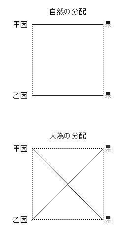

余をして人情の重んずべきを知らしめ、
己れを愛し、人を愛し、国を愛することを知らしめ、真理の線路を走り、正を踏んでおそれざることを知らしめたるは、みななんじの教育にこれよるなり。余がこの冊子を著述したるはまったくなんじの教育したるところのものを発揮したるなり。しかして、余が著述を世に
公にするは、これをもって始めとなす。余はいささかこれをもってなんじの老境を
慰し、なんじの笑顔を開くの着歩なりと信ず。ゆえに余は謹んでこの冊子を余が愛しかつ敬する
双親の
膝下に献ず。
［＃改段］
余が友
徳富猪一郎君さきに『将来の日本』と称する一冊子を編著し、これを余に贈り、あわせて余の一言を求めらる。余不文といえども君と旧交のあるあり。あにあえて君の好意を空しゅうすべけんや。余これを読み、その第一回より第十六回に至る、毎回あたかも新佳境に入るの感なきあたわず。けだしその論や卓々、その文や
磊々、余をしてしばしば巻をおおい覚えず
快哉と呼ばしめたりき。それ君の著書たる、広く
宇内の大勢を察し、つまびらかに古今の沿革に徴し、いやしくも天意の存するところ、万生の望むところ、早晩平民主義をもって世界を一統すべくこれに抗するものは亡び、これにしたがうものは存し、一国民一個人のよくその勢いに激し、その力に敵すべからざるを説き、これを過去現今の日本に論及し、ついに将来の日本を図画し、その取らざるべからざる方針を示すに至り筆をとどむ。
これを要するに、君の図画するところは他なし。すなわち公道正義をもって邦家の大本となし、武備の機関を一転して生産の機関となし、圧抑の境遇を一変して自治の境遇となし、貴族的社会を一掃して平民的社会となすにあり。しかして君の論旨中含蓄するところの愛国の意は全国を愛するにあり。全国を愛するは全国民をしておのおのその生を楽しみそのよろしきを得せしむるにあり。これ実に君の活眼大いにここに見るところあり。
満腔の
慷慨黙々に付するに忍びず、ただちにその血性を

べ発して一篇の著書とはなりしなり。しかしてこの書初めて世に公布する客年十一月にあり。いまだ四ヵ月を経ざるにすでに再版に付し、またこれを三版に付せんとす。なんぞそれ世人購求の神速にして
夥多なるや。けだし君が
論鋒の卓々なるによるか、はたその文章の磊々なるによるか。しかりしこうして余は断じていわん。君がこの論を吐く徒論にあらず。君がこの文を作る徒文にあらず。天下の志士汲々これを読む徒読にあらず。これ天下大勢のしからしむるゆえんなり。ああこれ天下の大勢今すでにここに至れるなり。
明治二十年二月
西京 新島襄
［＃改段］
徳富猪一郎君は
肥後熊本の人なり。さきに政党の諸道に勃興するや、君、東都にありて、名士の間を往来す。一日余の
廬を過ぎ、大いに時事を論じ、痛歎して去る。当時余ひそかに君の気象を喜ぶ。しかるにいまだその文筆あるを
覚らざるなり。
すでに西に帰り、信書しばしば至る。書中雅意
掬すべし。往時弁論
桿闔の人に似ざるなり。去歳の春、始めて一書を著わし、題して『十九世紀の青年及び教育』という。これを朋友子弟に
頒つ。主意は
泰西の理学とシナの道徳と並び行なうべからざるの理を述ぶるにあり。文辞活動。
比喩艶絶。これを一読するに、
温乎として春風のごとく、これを再読するに、
凜乎として秋霜のごとし。ここにおいて、余初めて君また文壇の人たるを知る。
今この夏、またこの書を稿し、来たりて余に
詢るに刊行のことをもってす。よってこれに答えて
曰く。この文をもってこの挙あり。なんぞ詢るの用あらん。しかるに詢る。余いずくんぞ一言なきを得んや。古人初めて
陳ぶるに臨まば奇功多からざらんを欲す。その小成に安んずるをおそるるなり。今君は弱冠にして奇功多し。願わくは他日
忸れて初心を忘るるなかれ。余初めて書を刊して、またいささか戒むるところあり。今や
迂拙の文を録し、
恬然として
愧ずることなし。警戒近きにあり。請う君これを
識れと。君笑って諾す。すなわちその
顛末を書し、もって巻端に弁ず。
明治十九年十二月
田口卯吉 識
［＃改段］
熊本の徳富君猪一郎、さきに一書を著わし、題して『将来の日本』という。活版世に行なわれ、いくばくもなく売り尽くす。まさにまた版行せんとし、来たりて余の序を請う。受けてこれを読むに、けだし近時英国の
碩学スペンサー氏の万物の追世化成の説を祖述し、さらに創意発明するところあり。よってもってわが
邦の制度文物、異日必ずまさになるべき云々の状を論ず。すこぶる精微を極め、文辞また
婉宕なり。大いに世の
佶屈難句なる者と科を異にし、読者をして覚えず快を称さしむ。君
齢わずかに二十四、五。しかるに学殖の
富衍なる、老師宿儒もいまだ及ぶに易からざるところのものあり。まことに畏敬すべきなり。およそ人の文辞に序する者、心誠これを
善め、また必ず
揚※［＃「てへん＋霍」、U+6509、63-下-14］をなすべきあり。しからずんば、いたずらに筆を
援りて賛美の語を
べ、もって責めを
塞ぐ。
輓近の文士往々にしてしかり。これ
直諛なるのみ。余のはなはだ取らざるところなり。これをもって来たり請う者あるごとにおおむねみな辞して応ぜず。今徳富君の業を
誦むに及んで感歎
措くことあたわず。破格の一言をなさざるを得ず。すなわちこれを書し、もってこれを
還す。
明治二十年一月中旬
高知 中江篤介 撰
［＃改段］
将来の日本なる問題は、ついに余を駆りてこの冊子を著述せしめたり。余は高尚深奥なる哲学者としてこの問題を論ぜず。また活溌雄飛の政治家としてこれを説かず。余はただ忠厚
真摯なる日本の一人民として、余が脳中に湧き来たりたるものを、はばからず、恐れず、吐露したるのみ。余はしいて生産主義を執らんと欲するものにあらず。しかれどもわが
邦将来情勢の赴くところ、勢いいかんともなすべからざるを知るなり。余は単純なる民主論者にあらず。しかれどもすでに生産的の境遇とならば、わが社会は一変して平民社会となるはまたいかんともなすべからざるを知るなり。余はいかなる場合においても、いかなる代価を払うも、ただ平和論を唱うるものにあらず。しかれどもすでにわが社会にして平民社会とならば、わが社会の運動は一転して平和主義の運動となるもまたいかんともなすべからざるを知るなり。余はもとより日本全体の利益と幸福とを目的として議論をなすものなり。しかれどもその議論の標準なるものはただ一の
茅屋中に住するの人民これなり。なんとなれば、いやしくもこれらの人民の利益と幸福とを進歩するを得ば、全体の利益と幸福とを進歩するはあえて論をまたざればなり。余が議論の原理は、
泰西諸学士の思想より
脱胎し来たるもの少なからずといえども、これを事実に適用して
演繹するに至りては余まったくその責めに任ぜざるべからず。しかれどももし余が議論の不完全なるあらば願わくは怪しむなかれ。余がこの冊子を稿するや、
寂寞幽僻の地においてし、
諮詢の友に少なく、参考の書に乏し。ことにただ零砕の時間を節して、一ヵ月に足らざるの間にこれを成就したればなり。しかしてかくのごとく急速に成就したるゆえんのものは社友諸氏の謄写校定等の労を分つ者ありたればなり。余はここに明記してその労を謝す。
それ将来の日本は実に多事の日本なり。しかしてこの冊子の論ずるところただ概略に過ぎず。おもうに国会・外交・貿易・財政・兵備・地方制度・宗教・学問・教育・工芸・製造等に関して論ずべきこともとより一にして足らず。もし他日機会を得ば、余は必ず本論の通則を演繹してこれを開陳せんと欲するなり。
余がこの冊子を著わすただ同志の人に頒ちてその批評を乞わんがためなり。しかれども諸友の懇切なる奨励はついに大胆にも余をしてこの冊子の運命をばわが現今日本の社会に委託するの策を決せしめたり。ああこの冊子の世間より冷遇せらるるも命なり。厚待せらるるも命なり。すでに命なり余はまた何をかいわんや。
明治十九年十月十日
東京において 著者記
［＃改丁］
朕が後には洪水あらんとは、これルイ十五世が死になんなんとして仏国の将来を予言したるの哀辞なり。今や洪水の時代はすでにわが邦に来たり、
吾人また波瀾層々のうちに立てり。もし人あり、吾人に向かってわが邦の将来を問うも、吾人はさらにいかなる言を発して、もってこれに答うべきか。
人のつねに知らんと欲するところのもの、将来よりはなはだしきものはあらざるべし。しかしてことにわが日本の将来よりはなはだしきものはあらず。なんとなれば現今のいわゆる日本なるものは、ノアの児孫が
芳草萋々たるバベルの原野において天に達せんとするの石塔を築かんと企てたる上古の文明より、
北狄蛮人の継続者が鉄と電気とをもってほとんど地球上の表面を一新する近時の文明に至るまで、およそ人類の記憶に存する時代の歴史をもってこれと比較せんと欲するも、ほとんどその比類を尋ぬるに苦しむほどなる一種奇々怪々喜ぶべく驚くべきの時代なればなり。
それ変化なるものは万有の大法大則なれば、わが邦にして
昔時の面目を一変したりとて、さまで
訝るべきことにはあらざれども、その変化のあまりに快活にしてかつその方向の意外なる針路に向かって
奔りたるの一点に関しては、何人といえども一驚を喫せざる者はあらざるべし。かのドレーパー氏のごときは情けなくも、東洋文明の命運は唯一の墳墓あるのみと放言したれども、わが邦の文明は三十年前気息
奄々として前途はなはだ
覚束なきの旅行をなしたるにもかかわらず、不思議なるかな、電光石火にその方向を一変し、その針路を一転し、さらに快活なる意気をもって
泰西文明の
蹤を追走し、もってこれと競争せんと欲するがごときの形勢を現出したるは、吾人がかつ訝りかつ祝するゆえんにして、かの欧米人士の注意を
惹起するに至りたるも、もとよりゆえなきにあらず。もし試みに徳川将軍
家斉公全盛のときに死したる江戸の市民をば、今、墓中より呼び起こし、銀座頭街の中央に立たしめよ。その街傍に排列するの家屋、その店頭に陳列する貨物、その街上を往来するもの、その相話し、相談ずるものにつき、これを見せしめよ。彼らはいかにしても、これをもって彼らのいわゆる江戸ならんとは夢にだも解するあたわず。あたかもかの夢想兵衛が
飄飄然として
紙鳶にまたがり、天外万里
無何有の郷に漂着したるの想いをなすならん。
けだし今日の変化は退歩の変化にあらず、進歩の変化なり。今日の戦場は最後の戦場にあらずして初陣の戦場なり。今日の門出は絶望の門出にあらずして希望の門出なり。
看よ看よ人をして第十一世紀欧州暗黒時代の境遇もかくはあるまじと追想せしむるところのわが封建社会の
顛覆したるは、ただ十余年の前にあり。人をして第十九世紀欧州議院政治の制度より脱化し来たるものならんと予想せしむるところの国会の開設はすでに四、五年の後に迫れり。奴隷たるの平民はたちまちにその階級を上り、主人たるの士族はたちまちにその階級を下り、すでに同地位に
邂逅せんとせり。昔日においては人として長刀を横たえざるものは人にして人にあらざるのありさまなりしも、今は剣を帯ぶるものとてはただ常備兵・警官のほかはまた見るべからず。昔は土足をもって
蹂躙したるキリシタンの十字架も、今はキリスト教としてそのもとに
拝跪するものさえあるに至れり。試みに思え。
鎖港の論より海関税全廃・自由貿易の論に至るまで、
攘夷の説より内地雑居の説に至るまで、いくばくの日子といくばくの時代を経過したるか、これを想い、これを思えば夢のごとく幻のごとく、処世大夢のごとしの妙句もあたかもこの時代を評するために設けたるものなりというも不可なからん。
かくのごときはひとり吾人が耳目に触れ来たる政治・社交・衣食住のことにとどまらず。さらに進んで形而上のことを観察したらんにはいかん。道徳・信仰・交際・体面・思想等の標準のごときすべて一顛一倒せざるものはあらず。もし一々これを描写し、これを旧時のものと対照比較するを得せしめば、ずいぶん奇妙なることもあらん。ただ吾人は充分にこれを観察するあたわざるに苦しみ、たといこれを観察するも、これを描写するあたわざるに苦しむなり。されば今日の老輩にして封建時代の破壊より、明治時代の今日に至るまでを経過したるの人は、あたかもこれ
邯鄲枕上盧生の夢、仙人
棋辺王質の
斧柄も、もってこれを形容するあたわざるの心地するならん。これを要するに現今の時代は疎枝朽幹なかば枯死せるの老樹が端なく大風のために吹き折られ、かえってその残株よりしてさらに一個の新芽を発し、雨露これを湿し、陽光これを沢し、
亭々然として雲を
凌ぎ、天を衝くの望みを有せしむる、もっとも前途に希望あるの時代となれり。ゆえにこれを日本の変化といわんよりむしろ日本の
復活再生というの当たれるにしかず。なんとなれば旧日本はすでに死せり。今日に生存するものはこれ新日本なればなり。
しからばすなわち日本の将来はいかん。将来の日本はいかん。政治家は日本政治の将来はとやあらん、かくやあらんと心配し、商業家はその商業の前途はいかんと
掛念し、学者なり、宗教家なり、いやしくも現今の形勢を観察したるものはあわせてその将来をも知らんと欲し、これを欲してやまざるはまことにやむべからざるの理といわざるべからず。しかりといえども社会は単分子の結晶体にあらず。実に異種異類
雑駁なる分子の集合体にして、その雑駁なるほど、その自他の関係は至密至細に赴くものなれば、ただその一部を採りてただちにその将来を卜せんと欲するは、けだし難かるべし。今日の政治社会かくのごとくなるがゆえに、将来の政治社会またかくのごとくなるべし、今日の経済社会かくのごとくなるがゆえに、将来の経済社会もまたかくのごとくなるべしと断定することあたわざるべし。なんとなれば将来の政治社会は、今日の政治社会によりてのみ制せらるるものにあらずして、富の分配、知識の分配等のごときものによりて相制せらるるものなればなり。経済社会の将来もまたひとり今日の経済社会によりて制せらるるものにあらずして、あわせて政権の分配、知識の分配のごときものによりて相制せらるるものなればなり。かくのごとく社会の分子はたがいに原動をなし、反動をなし、原因となり、結果となり、主因となり、主果となり、客因となり、客果となり、その現象は千差万別、海浜の砂石もただならずといえども、たがいに相接し、あいともに連帯一致の運動をなすものなれば、その一部の運動を知らんと欲せば勢い全体の運動を知らざるべからず。なんとなれば全体の運動なるものは各部の運動の協同によりて支配せらるるがごとく、各部の運動なるものはまた全体画一の運動によりて支配せらるるものなればなり。
ゆえに日本将来の政治を知らんと欲する者も、日本将来の経済を知らんと欲する者も、そのほか宗教・学術・文学等を知らんと欲するものも、みなその尋問の点をば全体に拡げざるべからず。すなわちわが邦の社会に現出する将来のことを知らんと欲するものは、その知らんと欲することはいかなる点にもせよ、みなその尋問の
鋒先をば全局面なる日本の将来はいかんという点に向けざるべからず。これ何人の思想をもみなこの問題なる中心点に向けて相帰着するゆえんなり。
けだしこの問題たるやベルリンの権謀政治家は奇貨失うべからずとしてこれを注目し、ロンドンの哲学者は社会学の材料を発見せんと欲してこれを推究し、ニューイングランドの宗教家はわが東洋異教国中にキリスト教の伝播せんことを思うてこれを思慮し、自由をもってアングロサクソン人の特有物となすの学者は、自由の恩恵は
蒙古人種にもなお及ぶことを得るや否やと疑惑し、黄人種の朋友をもって任ずる
義侠の白人は日本の将来ははたして独立国たるを得るや否やと掛念し、あるいはわが邦在野の政治家は将来を思うて一
穂の寒燈、沈思黙坐するものもあらん。あるいは修業のほか余事なく学窓に
兀坐する青年の書生もその机上に微睡を催すときには、
忽然としてわが邦の将来を夢みることもあらん。あるいはみずから
村閭の政治家をもって任じ、威権戸長を凌ぐの郷紳も、その
傍輩と炉辺に
踞坐するときには、あまりに現今わが邦変化の不思議に驚き、将来はいかがあらんと相談ずることもあらん。あるいはまた密室に
跪き四辺人なきのときにおいて、ひそかにわが邦将来のことをば積誠を
凝らして上帝に祈る熱心なるキリスト教徒もあらん。あるいはわが邦の将来を思い、これを思いこれを想うて禁ずるあたわず、
万籟寂々天地眠るの
深宵にひとり
慷慨の熱涙をふるうの愛国者もあらん。
かくのごとくわが邦の将来はだれかれの差別なく、何人の脳裡にも必ず発揮する問題にして、しかしてまた何人といえども、これを解釈するに苦しむところの問題なり。しからばすなわち吾人はこの解釈に苦しむところの問題をばいかにして解釈せんと欲するか。それ過去は遠しといえども、古人の足跡なお存す。もってこれを尋ぬべし。現今は錯雑なりといえども、吾人が耳目に触るるところのものなり。もってこれを知ることを得べしといえども、ひとり将来に至りては、寸前暗黒ただ漠々たる
幔幕の吾人が眼前に横たわるを見るのみ。吾人はいかにしてこれを知るを得んや。しかるをいわんや吾人が今日の地位においてをや。それ今日は改革の時代なり。山中の人に向かって山の面目を問うも、中流に浮かむの人に向かって川の形勢を問うも、改革の時代にある人に向かって改革の将来を問うも、決して適当なる答弁を得ることあたわざるべし。なんとなれば身そのうちにあればなり。ゆえにもし吾人に向かってこれを問う者あるも、吾人はただ改革の将来は改革なり、洪水の後は洪水なりと答うるのほかはあらざらん。
過去のことはもって論評すべし。現今のことはもって観察すべし。将来のことに至りてはいかなる達識
烱眼の人といえどもただ推測するの一あるのみ。しかして吾人今日の位地はこれを推測することすら容易ならず。たとい、これを推測し、苦言痛語したればとて、はたなんの益あらん。むしろエジプトの敗将、セイロン島の遷客たるアラビーパシャに
倣い、日本の将来はただ上帝これを知るのみと安着するにしかざるべし。吾人もとよりこれを知らざるにあらず。しかれども吾人が大胆にもかかる重大なる、すなわち吾人が微力を尽くしたりとてほとんど徒労ならんと思うほどの重大なる問題に向かって推測を試みんと欲するはそもそもゆえあり。けだし何人といえども将来の日本はいかになるべきかの問題中には、必ず他の将来の日本はいかになすべきかの問題を含蓄せずんばあらず。将来の日本はいかになるべきかはもとより吾人が得てあずかるところにあらず。しかれども将来の日本はいかになさざるべからざるかの一問題に至りては、吾人また日本の一人民なり。平生これを忘れんと欲するも忘るるあたわず。つねに吾人を
刺衝して寸時も
止まらず。しかして吾人は今日に至りて黙せんと欲するも黙するあたわざるを感ず。ゆえに今日において吾人が論弁しうべきだけのことについては、あえて遅疑せず。ただちに胸臆を
べて、もって直言直論せんと欲するものなり。
しかりといえども、この問題はたがいに相連帯付着するものにして、決してこれを分離することあたわず。わが邦の将来はいかになさざるべからざるか。吾人が希望するところ
固より一にして足らざるなり。しかれどもその希望ははたして何によりて生じたるの希望なるか。およそ希望にしてその価値あるはただ実行せらるるあればなり。もししからずんばこれ
空望のみ。億万の空望は一の実行に敵するあたわざるなり。社会には社会必然の情勢あり。ゆえに吾人が希望するところたとい千万あるも、決してこの情勢に敵するあたわざるなり。ゆえに将来の希望にして、はたして実行せらるべき価値を有するの希望なりとせば、その希望は必ず将来の情勢と一致せざるべからず。しかして何によりて将来の情勢を知らんとするか。曰くただ将来はいかになるべきかの問題あるのみ。
もしそれ社会の情勢に抗抵すべからざることを知らば、あらかじめこれに抗抵を試みざるの
優れるにしかず。なんとなればこれ徒労なればなり。たとえば天を仰ぎて石を投ずるものあらん。いかに精神を
揮うて投じたりとて、かの石は天外に飛び去るものにあらず。ひとたび投ずればひとたび地に落ち、百たび投ずれば百たび地に落つ。すでに重力に敵するあたわずんば、むしろこれに敵せざるの知あるにしかず。ゆえに吾人は決してわが邦の将来に向かって架空の希望を
懐くものにあらず。ただ将来において必ず実行せらるべき希望を有するのみ。なにをか実行せらるべき希望と言う。曰くわが社会自然の情勢に従い、これを利導せんと欲するこれなり。すなわちわが日本の将来はいかになさざるべからざるかの
経綸は、ただ日本の社会をしてさらに他の干渉することなく、妨害することなくんば将来の日本はいかになるべきかの推測より定まるものなり。
かくのごとくいかになるべきか、いかになすべきかの二問題は相密着するものなればもし第二の問題を解釈せんと欲せば勢い第一の問題を推測せざるべからざることもあるべし。しかれども吾人がこれを注目し、これを掛念し、かつこれを推測してやまざるゆえんのものはあえてここにとどまらず。さらに一歩を転じてわが邦将来の経綸を定めんと欲すればなり。それ改革の将来は改革なり。しからば、すなわちその改革はいかなる改革なるか。いかなる改革ならざるべからざるか。洪水の後には洪水あり。しからばすなわちその洪水はいかなる洪水なるか。いかなる洪水ならざるべからざるか。光陰
 々
々電気の鉄線を走るよりも急なり。昨日ぞ今日の昔なる。一日また一日、行きやまずんば今日において遙々万里の将来もまたたちまちにして他日の現今とならん。しからばすなわち吾人が今日において将来の日本を論ぜんと欲するもあにまたやむをえんや。
人間はただ生活せんがためにのみこの世に出で来たりたるものにはあらざるべし。しかれども、もし最初の目的はいかんと問わば我も人も三尺の童子もみな異口同音に生活せんがためなりと答うるのほかはあらざるべし。人の世界にありてなさんと欲するところのもの千緒万端なれどもおよそ生命を有したるうえは必ずまずその生活の道を求めざるべからず。首陽山に
薇を採るは
伯夷・
叔斉が生活を保たんがためなり。
箪食飄飲は
顔回が生活を保たんがためなり。さればかのギリシア古代シニカル派哲学の開山たるアンチステネスのごとき精神の快楽と生活の快楽とは相戦うものにして
須臾も両立すべからずとてつねに生活を敵視したるにもかかわらず、その病んでまさに死せんとするや、彼はそのかすかなる声にて弟子に向かい「汝は余を苦痛より脱するあたわざるか」と請いければその弟子はたちまち短剣をひっさげ「これをもって救わんか」と答えり。彼驚いて曰く「否々余は苦痛より脱するを欲す。生命より脱するを欲せず」と。それ生命は人なり。生活ありてこそ始めてその他の願欲も生ずべし。一国の目的もまたかくのごとし。一国最後の目的に至ってはこれをモンテスキュー、バーク、スタイン、スペンサーの諸氏に問うも満足なる答弁をば得るあたわざれども、その最初の目的に至りてはその組織は
白蟻・
蜜蜂の社会よりもなお簡易質朴なる太平洋群島の野蛮人も、政治の機関は博大精緻に発達したる欧米社会においても、およそ国家ある以上は自他一様まずその生活を保つの一点に帰せざるべからざることは半文政治家といえども容易に断言しうるところなり。一国にしてその生命あればこそ何事もその分に応じて行なわるべし。もし生命なくんば何事をなさんとするも汝はいかにしてこれを行なうべきか。
しからばすなわち何人といえども、わが将来の日本を論ぜんと欲するの人は、まずわが邦の将来はいかなる手段によりて生命を保たざるべからざるかの問題をもって尋問の着歩となさざるべからず。けだし一国の生活を保つゆえんのものその手段二あり。一は生産の機関により、一は武備の機関による。生産の機関は内部の供給をなし、武備の機関は外部の妨害を防御す。孔子のいわゆる食に足りて兵に足るものすなわちこれなり。けだしこの二個の機関はいまだ必ずしも始めよりその職務を区別するものにあらずして、むしろ社会の草創においては相混合するものなりといわざるべからず。たとえば無事の日においては農夫となり、戦争の日においては兵士となり、国民も兵士も同一人にしてただその位地にしたがってその称号を異にするの場合においては生産機関も、武備機関も、さらにその相違を見ず。生産すなわち武備、武備すなわち生産にして、かかる実例はかの
頼襄が、わが朝の初めて国を建つるや、政体簡易、文武一途、
海内を挙げてみな兵なり。しかして天子これが元帥たり。
大臣・
大連これが
褊裨たり。いまだかつて別に将帥を置かざるなり。あにまたいわゆる武門武士なる者あらんや、といいしごとく、吾人わが王朝の歴史においてこれを見るなり。しかれども社会の進歩するや、人事いよいよ繁多に赴き、勢い分業の法行なわれざるを得ず。ここにおいてかその区別漸次に生じ、しかして戦争のつねに絶えざる場合においては武備機関はひとりいよいよ開発し、生産の機関はいよいよ収縮するに至るなり。頼襄が、いわゆる光仁・桓武の朝、
彊
多事、宝亀中、廷議
冗兵をはぶき、百姓を
殷富にす。才、弓馬に堪うる者は、もっぱら武芸を習い、もって徴発に応ず。その
羸弱なる者みな農業に就く。しかして兵農まったく分かる、といいしはすなわちこの事実なり。しかしてその勢い一躍して武備機関はただにその外部の敵を防御するに
止まらず。防御の性質一変して攻略の性質となり、ついに生産機関をもその中に籠絡するに至るものなり。これに反し一国もし平和の場合に立つときは生産の機関はたちまちその勢力を増長し、武備の機関はまったくその下に圧伏せらるることもあるなり。
たとえばローマのごとき、その初めにおいては全国の人士みな兵士となり、みな農夫となり、生産武備相協同していまだ分離するを見ず。さればローマ有名の史家プリニー当時のことを言いて曰くその田地は大将の手にて耕され、その土壌は
賞牌を冠したる
犂
のもとに開墾せらる。しかして農夫のこれを導く者また戦争の功労ありしものなりと。吾人はまた聞くマニオス・キネリオスなる人あり。武勲
赫々威名四隣を圧するの豪傑なり。しかして身は
田閭に帰り、
茅屋に住し、掌大の田園を耕し、開散みずから安んずるもののごとし。おりしも氏は
竈辺に
踞し
蕪菁を煮つつありたるに敵国の使者来たり巧言もって黄金を贈る。氏笑ってこれを
斥けて曰く「余はかかる
晩餐をもってみずから足るものなり。なんぞ黄金を
須いん。余はみずから黄金を懐にするよりもこれを懐にするの敵国を征服するをもってむしろ栄光となすなり」と。もって当時の兵すなわち農、農すなわち兵たるの事情を察すべし。しかれども、その近傍の諸種族と生存の競争いよいよ繁くいよいよ激するに従い、市民はことごとく戦争をもってその専業となし、農業のごときはまったく奴隷の手に放任し、これよりして武備の機関いよいよ発達し、防御の性質は一変して攻略となり、その兵鋒向かうところ天下に敵なく、カルタゴを滅ぼし、ギリシアを略し、エジプト、シリア、パレスチナを捲くに及んで、天下の富はことごとくローマに
蒐集したりといえども、その蒐集したるは経済的の吸引すべきの引力ありてしかるにあらず。これみなただローマ人の腕力をもって各地より掠奪し来たるものにして、ローマの都府雄麗天下に冠たりといえども、一の特有産物とてはなく、ローマ人はただその奪掠し来たりし金銀をもって、その奪掠せられたる各邦の産物と交易〔もしこれを交易というを得ば〕したるのみ。吾人これを聞く。ローマ人の
諺に曰く「鉄を
揮う者は金を
攫む」と。かくのごとくローマ人はひとり武備をもって外敵を防ぎ、もしくは外敵を攻めこれに勝ちたるものならず。まったくその分取品によりてもってその生活を保てりというべし。勢いここに至る生産機関なるものまたいずくにある。
かのフェニキアのごときはしからず。地もっとも瘠せ、国もっとも小なるにかかわらず、その生産機関の発達すべき境遇を得たるがゆえにその進歩は実に著しく、なかにもそのツロの人民は航海の知識、製造の熟練、商業の盛大をもって、上古の歴史にその大名を輝かせり。彼みずから地中海の帝王となり、その進取の気象は一躍してヘラクレスの海峡を越え、ブリテン島に赴き、バルチック海湾に達し、至るところその土人をもって得意者となし、至るところその土地をもって故郷とし、ついに植民地を地中海の海岸に設くる四十に越えたり。吾人はかつて『旧約聖書』においてツロの繁昌なるを知れり。
なんじツロよ。なんじは海門にありて多島衆民の市をなすものか。なんじかつて曰くわれは実に全実なりと。なんじの境は海の中心にあり。しかしてなんじを建造するものはもってなんじの美を尽くせり。彼はセニルの松をもってなんじの板となし、彼はまたレバノンの柏香木を取りてなんじのために檣を作り、彼はバシャンの橡をもってなんじの漿を作る。アッシリアの隊はキッチムの諸島より携え来たるの象牙をもってなんじの椅子を作れり。なんじの張りてもって帆とするところのものはすなわちエジプトより来たれる文繍。かつなんじを覆い纏うところのものはすなわちエリシヤ諸島より携え来たれるの青と紺との布なり。シドンとアルワダとの居民はこれなんじの舟子たり。ツロよなんじがうちの知者はなんじの柁師たり。ゲバルの老練者とその知者とはなんじの舟を修復するの人たり。洋海の諸舟、およびその舟子はみななんじのうちにありてなんじの貿易を経営せんと欲す。
実に盛んなりというべし。けだしフェニキア人が商業をもって征服したるの版図は、ローマ人が腕力をもって征服したるの版図に比するも、むしろ過ぐるもあえて及ばざることなからん。以上の実例をしてはたして信ずべきものとせば、生産武備の二機関は決して両立しうるものにあらず。彼盛んなればこれ衰え、彼滅ぶればこれ興るものなるを知るべし。
かつ職業のいかんはその人の性質によりて制せらるるものなれども、その性質はまた職業のいかんによりて定まるものなることも知らざるべからず。
勿論生活の職業を満足に成就したりとて、人間の目的はこれまでなりというべきにはあらざれども、その他の高尚なる目的とこの卑近なる生活の職業はつねに離るべからず、解くべからざるの関係を有するものなり。人事万端なりといえども階を踏んで楼に上るがごとし。一層を上るはさらに一層を上るの地をなすなり。一層を下るはさらに一層を下るの歩をなすなり。層々相接し、節々相連なり、いまだ一として特別分離の運動をなすものにあらず。ゆえに卑近なる職業は一事なり、高尚なる職分は他事なりと相裁判するものは、いまだともに人事を語るに足らざるなり。
試みに見よ。ここに一個の武士と一個の商人ありとせよ。その人々は一家の兄弟にしてともに家庭の教育を同じゅうし、学校の教育を同じゅうし、その二者の性情行径を同じゅうしたるものとせよ。しかして立身の十字街頭よりしておのおの特別なる職業に従事したりとせよ。しかして今ここにこの二人を一室に対坐せしむるとせよ。その趣味、その感情、その嗜欲、その思想の相異なる、自他相見て
茫然たることあらん。知るべし職業の性質はただちにその人の性質に関係を及ぼすことを。ひとりこれにとどまらず、職業の品格いかんはまたただちにその人の品格を定むるものなり。たとえば遊楼の主人も、伝道師も、
芸妓も、女学校の博士も、経済的の眼孔をもって観察するときは
毫も高下の区別はあらざるべしといえども、社会のことはひとり経済的の眼孔をもって判定すべきものにあらず。生活の職業はただ生活をなさんがためのみなれども、不正の手段によりて生活するものはいかにその人の弁解したればとて、なおこれを不正の人物といわざるをえず。
国もまたかくのごとし。その生活の職業いかんはただちにその国の性質にも品格にも、至重至大なる関係を有するものなれば、世上の識者ことに一代の創業者たらんものは細心遠慮よろしくその選むところ、採るところを謹まざるべからず。およそ生産武備の二機関はひとりその範囲中においてその勢力を逞しゅうするものにとどまらず、あわせて社会万般のことにもその感化を及ぼすものなり。たとえば食物はただちに消化機関にその刺衝を及ぼすものなれども、これよりして血液となり、血管を注流して四肢五官脳髄に至るまで、すなわち人の全体にその滋養を及ぼすがごとく社会の現象一事一物一としてその感化をこうむらざるものはあらず。すなわち武備機関の発達したるの邦国においては政権はただ少数人の手に専有し、生産機関の発達したるの邦国においては、政権は多数人民の手に分配し、一方においては人民は国家のために生じたるものとなし、他方においては国家は人民のために生じたるものとなし、彼は一国においてはただ一国あるのみ、国家をほかにしては人民あらざるなり。これは一国の中ただ人民あるのみ。人民をほかにしては国家はあらざるなり。彼の結合は強迫の結合なり。いかなる位地においても軍隊組織の精神をもって社会を組織すべし。此の結合は自由の結合なり。いかなる位地においても経済世界の法則をもって社会を結合すべし。彼の社会を組織するはただ主人と奴隷との二者あるのみ。此の社会を組織するものはただ同胞兄弟あるのみ。彼の富の分配は人為の分配にして労者つねに泣き逸者つねに笑う。此は自然の分配にして人々ただその過去に下したるの種をば現今に収穫する者なり。彼はあるいは一、二の大なる知者あれども千万の愚人あり。此は大なる知者なきもまた大なる愚者あらず。彼の威権はただ命令あるのみ。此の威権はただ契約あるのみ。彼は人民を犠牲として一国の体面を保つにあり。此は人民に幸福を与えんがために国家の体面を保つにあり。争闘は彼の真面目なり。平和は此の真面目なり。他を損して己れを益するは彼の方便なり。己れを益し他を益するは此の方便なり。彼の政略はただ他国を盗むか、しからざれば他国より盗まれざらんとするの一点に存し、此の政略はただ自国の独立を保ち平和をもって交際するにあり。彼の法則はただ暴逆なり。此の法則はただ正義なり。彼の主義は威力これ権理なり。此れの主義は権理すなわち威力なり。これを要するに武備機関の発達したる社会はただ不平等主義の支配するところなり。生産機関の発達したる社会はただ平等主義の支配するところなり。ゆえに武備社会の現象はことごとく貴族的の現象なり。生産社会の現象はことごとく平民的の現象なり。
それ一国の生活を保つはただこの二機関にあり。しかして二機関の相両立するあたわざることかくのごとく、その一国の政治・経済・知識・文学・社交、すなわち一国の性質品格におのおの一種特別の感化を及ぼすことかくのごとし。おもうに世上の識者はなんの機関をもってわが将来日本の生活を保たんと欲するか。いかに吾人が希望するところのもの此にあるも、社会情勢の赴くところ彼にあらば、吾人はまたいかんともなすあたわざるべし。ゆえに吾人がいずれを採らんかの問題を解せんと欲せば、勢い一歩を進んでわが邦将来の情勢はいずれに赴くかを推測せざるべからず。いかにしてこれを推測するか、曰く第一、外部社会四囲の境遇はいかん。第二、社会自然の大勢はいかん。第三、わが邦特別の境遇はいかん。第四、わが邦現今の形勢はいかん。すなわちこれなり。もし吾人が将来に希望するところのものこれらの四問題すなわちわが将来の情勢と符合するを得ば、わが邦の前途は実にたのもしきなり。もし不幸にして二者相反対せば、吾人は策を投じて前途の吉凶を卜するに苦しむなり。
第十九世紀の時代においては、四海万国みなわが隣国なることを記憶せざるべからず。しかしてこの隣国の大勢は、実にわが将来の命運を作為する一の要素なることを記憶せざるべからず。しからばすなわちこの隣国の大勢はいかん。これ吾人が今回において講究すべきの問題なり。
けだし第十九世紀の今日は、実に絶望の時代なり。試みに眼を挙げてわが地球上の四隅を見よ。しかしてことにかの
宇内の舞台においてもっとも豪胆活溌なる演劇者の中心たる欧州諸国を見よ。道理の勢力薄弱なるそれいまだ今日よりはなはだしきものあるか。強者の権の流行するそれいまだ今日よりはなはだしきものあるか。腕力主義の隆盛なるそれいまだ今日よりはなはだしきものあるか。昔日の世界は野蛮人が腕力をもって開化人を
蹂躙したる世界なり。今日の世界は開化人が暴虐をもって野蛮人を
呑滅するの世界なり。
今日において蒸気・電気・鉄・石炭・
玻璃等の大自在力をもって一大革命をなし、世界の表面を一新したるにもかかわらず、哲学・物理学・文学・美術等のごときは実に百尺竿頭一歩を転じたるがごとき、爽快なる進歩あるにもかかわらず、かの便宜主義の統領たるベンサム氏が最大無類の禍害的と
綽名せし戦争は、いまだその
痕を社会に絶たざるを見るはなんぞや。実にかの欧州諸国はみずからキリスト教国と誇称すれども、いまだ上古の先知者が予言したるがごとく、牛羊とともに草を噛み、尾を垂れ首をたらし、真神の命に柔順なるの
猛獅にあらざるなり。ルイ・ナポレオンいえることあり。世界の歴史は戦争の歴史なりと。しかしてわが第十九世紀の歴史ははたして戦争の歴史にあらざるか。読者願わくは左の統計表を一覧せよ。
かのウィーンの条約〔按ずるにウィーンの条約は一八一五年欧州諸国の仏国と講和の条約〕以来戦争に死したる者大約三百万人に及べり。すなわち左表に揚ぐる計算はやや精細を得たるものなり。
┌────────────────┬─────────────┐
│戦争 │戦死人 │年代 │
│────────────────┼─────────────│
│バルカン戦争 │一二〇、〇〇〇│1828 │
│────────────────┼─────────────│
│スペイン、ポルトガル二国相続戦争│一六〇、〇〇〇│1830―1840│
│────────────────┼─────────────│
│欧州革命 │六〇、〇〇〇 │1848 │
│────────────────┼─────────────│
│クリミア（同盟人） │一五五、〇〇〇│1854 │
│────────────────┼─────────────│
│同 （ロシア人） │六三〇、〇〇〇│ │
│────────────────┼─────────────│
│イタリア戦争（同盟人） │二四、四〇〇 │1859 │
│────────────────┼─────────────│
│同（オーストリア人） │三八、七〇〇 │ │
│────────────────┼─────────────│
│合衆国内乱（北部） │二〇六、〇〇〇│1863―1865│
│────────────────┼─────────────│
│同 （南部） │三七五、〇〇〇│ │
│────────────────┼─────────────│
│普墺戦争 │五一、二〇〇 │1866 │
│────────────────┼─────────────│
│フランス・メキシコ戦争 │六五、〇〇〇 │ │
│────────────────┼─────────────│
│ブラジル・パラグヮイ戦争 │二三二、〇〇〇│1867―1870│
│────────────────┼─────────────│
│普仏戦争 │二九〇、〇〇〇│1870―1871│
│────────────────┼─────────────│
│露土戦争 │二〇〇、〇〇〇│1876―1877│
│────────────────┼─────────────│
│ 合計 二、六〇七、三〇〇│ │
└────────────────┴─────────────┘
今これに加うるに仏のアルジェリーの戦争、英のインドおよび南アフリカ戦争、スペインのモロッコ戦争およびその他の小事をもってせばこの僅々五十年間に戦死したる者けだし三百万人に下らざるなり。〔マルホール氏『万国進歩の実況』〕
シナの聖人は一の
不辜を殺して天下を得るもなせずと訓戒を垂れたりしも、実に欧州の帝王宰相らはその児戯にひとしき名誉心を飽かしめんがため、僅々五十年間にかくのごとき莫大なる無病息災、血気まさに
剛きの活溌男児をば、空しく虐殺せしめたり。いわゆるかのヴィクトル・ユーゴーが「血を流すは血を流すことなり。人を殺すは人を殺すことなり。
※手［＃「會＋りっとう」、U+528A、80-8］の帽に代うるに皇帝の冠をもってするも、兇殺人の性質は
更うるところなし」といいしは、もっとも痛快の評にして吾人は実に寒心に堪えざるなり。しかれども戦争なるものはただに人を殺すにとどまらず、また貨財を殺すものなり。孫子曰く、およそ師を興す十万。出征万里。百姓の費、
公家の奉、日に千金を費やす、と。しからばすなわちこれらの戦争において欧州諸国が徒費したるの貨財はそれいくばくぞや。吾人は欧州諸国がこれらの戦争よりしてその公債を増加したるの統計を見てほとんど
驚愕に堪えざるなり。
一八二〇年より同四八年に至る間は一七億二〇万ポンド〔大約一ヵ年平均六百万ポンド〕を越えたりしがゆえにその進歩の度あえて速やかなりというを得ずといえども四八年以後にわかに勢いを得、その増加は実に驚くべきものあり。〔大約一ヵ年平均一億三〇〇〇ポンドの増加〕。今左にこの出費のおもだちたる原因を開示すべし。〔ただし左表は千位にとどむ〕
┌───────────────────────────┐
│一八四八年公債高 一、七二〇、〇〇〇ポンド│
├───────────────────────────┤
│クリミア戦争 一九二、〇〇〇 │
├───────────────────────────┤
│イタリア同 一〇五、〇〇〇 │
├───────────────────────────┤
│合衆国同 四九〇、〇〇〇 │
├───────────────────────────┤
│ブラジル、パラグヮイ同 八五、〇〇〇 │
├───────────────────────────┤
│独墺同 九〇、〇〇〇 │
├───────────────────────────┤
│仏独同 三七〇、〇〇〇 │
├───────────────────────────┤
│露土同 二一〇、〇〇〇 │
├───────────────────────────┤
│軍器 一、六〇七、〇〇〇 │
├───────────────────────────┤
│鉄道・造船所・電信 五七五、〇〇〇 │
├───────────────────────────┤
│総計 五、四四四、〇〇〇、〇〇〇ポンド│
└───────────────────────────┘
〔マルホール氏『万国進歩の実況』〕
けだし欧州大陸〔英国を除き〕は一八二〇年においては一人につき三シルリングの公債利子を払いしも、一八八〇年に至りてはほとんど四倍して十一シルリングを払わざるべからざるに至れり。しかしてかくのごとく増加したるゆえんはただ「五七五、〇〇〇ポンド」の鉄道・造船所・電信等のために消費したるもののほかことごとくみな無用なる軍事に消費したるのみ。
今を去ること一八〇〇年前オーグストス・シーザーがローマ帝王の位に
即くや、その四境を守衛するの兵士は五十万に出でざりしも、今や当時においてローマ帝国の一州一郡たりし欧州諸国の常備軍なるものは、はたしていくばくかある。試みに左の一表を見よ。
┌──┬────────────┬────────┬──────────┬───────┬───────┐
│国 │人口 │常備兵 │軍備兵 │人口と常備兵一│人口百名につき│
│名 │ │ │ │人との比較概算│常備兵の割合 │
├──┼────────────┼────────┼──────────┼───────┼───────┤
│英 │ 三五、二四一、四八二人│一八九、二五二人│ 六三六、九五一人│ 一八五人 │ 百分ノ二 │
├──┼────────────┼────────┼──────────┼───────┼───────┤
│露 │一〇〇、三七二、五五三 │五〇二、七三八 │二、〇八〇、九一八 │ 二〇〇 │ 百分ノ二 │
├──┼────────────┼────────┼──────────┼───────┼───────┤
│独 │ 四五、二三四、〇六一 │四四五、三九二 │二、六五〇、〇〇〇 │ 一〇〇 │ 百分ノ六 │
├──┼────────────┼────────┼──────────┼───────┼───────┤
│仏 │ 三七、六七二、〇四八 │五一八、六四二 │二、五五〇、〇〇〇 │ 七二 │ 百分ノ七 │
├──┼────────────┼────────┼──────────┼───────┼───────┤
│墺 │ 三七、七八六、三四六 │二七一、八三三 │一、〇二六、一三〇 │ 一四〇 │ 百分ノ三 │
├──┼────────────┼────────┼──────────┼───────┼───────┤
│伊 │ 二八、四五九、四五一 │七一四、九五八 │一、九八九、六一九 │ 四〇 │ 百分ノ七 │
└──┴────────────┴────────┴──────────┴───────┴───────┘
〔『万国形勢総覧』〕
吾人はかつてアダム・スミス氏が『富国論』を読み、人口百分の一以上の軍兵を養うの国は衰亡を招かざるものほとんどまれなりとは、これ欧州近時文明人民の通論なりとの言を聞きひそかにその至言なるを感じたるに、今や欧州の現状においてはまったくこれに相違し、百分の一はおろかほとんど百分の七より出ずるものあり。しかしてその欧州全体の兵数を概算すれば九五七万七〇〇〇人に越え、今これを検閲するがため一直線に陳列せしむるときは、その長さ六〇一〇キロメートル〔およそ一五三二里〕に
連亘し、しかしてその前面を通過するには快馬に
鞭うちて疾駆するも十二日六時間を要し、急行汽車をもってするも四日十八時間を要する割合なりと聞く。しかして明治十七年八月万国講和協会の調査によれば、欧州の軍備は平時において三九〇万二〇〇〇人、戦時においては一三八四万一〇〇〇人に上るということなれば、吾人はいずれの統計に従い、いずれの統計に従わざるも、いずれにもせよ、実にかくのごとき兵備なるものはわが第十九世紀の一大奇観というも不可なからん。往古東洋の暴主
秦の
始皇は石をもって万里の長城を築けり。しかして今や泰西の帝王宰相らは人をもって万里の長城を築かんとす。あにまた大胆ならずや。そもそも欧州の帝王宰相らはなんの必要ありてかくのごときの莫大なる常備兵を養うか、吾人があえて解するあたわざるところにして、もしそれ必要ありとせばもってわが社会ははなはだ険悪なるを証すべく、もしまた必要なしとせば帝王宰相らのはなはだ好事家たるを
異しまざるを得ず、ああこれまた第十九世紀の文明なるか。
かくのごときの常備軍はもちろん無代価にて平時に整えおくことあたわず。されば欧州諸国の人民は年々歳々いくばくの軍費を負担するか。吾人はかつて『毎日新聞』が掲載したる英国ロンドン万国仲裁平和協会の調査にかかる一八八三年の報告書を見るに墺・英・露・仏・独・伊六国の歳出および軍費の割合は実に左のごとし。
┌────┬───────────┬──────────┬────┐
│ ＼項目│歳出（ポンド） │海陸軍費（ポンド） │百につい│
│国名＼ │ │ │ての割合│
├────┼───────────┼──────────┼────┤
│墺国 │ 九三、六一〇、五五五│一三、四一三、七九五│ 一四 │
├────┼───────────┼──────────┼────┤
│独国 │一一〇、八〇九、八九三│二二、六二四、七四九│ 二〇 │
├────┼───────────┼──────────┼────┤
│仏国 │一三六、一三七、六〇七│三三、七三〇、七八三│ 二五 │
├────┼───────────┼──────────┼────┤
│英国 │ 八九、〇〇四、四五六│三一、四二〇、七五五│ 三五 │
├────┼───────────┼──────────┼────┤
│伊国 │ 六一、四八九、〇四七│一二、〇五五、五八九│ 二〇 │
├────┼───────────┼──────────┼────┤
│露国 │一二九、四一七、五七〇│四六、一〇二、五〇〇│ 三六 │
└────┴───────────┴──────────┴────┘
しかしてひとりこれにとどまらずかの軍備のために募集したる国債もまた驚くべき額にして、これを合算すれば、
二三〇億二一五〇万ドルの多きに上り、その利子のみにても一〇億三七一五万九一七五ドルなり。すなわち英国は三七億九〇〇〇万ドルの公債にて年々一億五六〇〇万ドルの利を払い、露国の公債は三〇億一七五〇万ドルにて年々一億五六〇〇万ドルを支弁せり。仏国の公債は四八億万ドルにて二億七二五〇万ドルの利を払い、ゲルマン国の国債は一五億万ドルにて六七五〇万ドルの利息を支弁せり。
かくのごとく吾人は欧州武備の大勢を叙し来たれば、欧州人民の不幸を悲しまざらんと欲するもあたわざるなり。たといルイ・ナポレオンがセバストポールにおいて露国の猛勢を
挫ぎしとて仏国人民ははたしてこれがためにいくばくの利益を得たるや。たとい仏国に復讐したるをもってビスマルクの雄名は四海を圧したりとて、モルトケの勲章には
燦爛たる光輝を添えたりとて、ゲルマン人民ははたしてこれがためにいくばくの利益を得たるや。パーマーストン、ビーコンスフィールド諸公がアフリカもしくはアジアの諸蛮族と綿々として絶えざる無名の戦争をなし、英国の版図に幾分を加えたりとて、英国人民が得るところははたして失うところを償うに足るや。近くはかのフェリー氏が安南事件について清国と兵を構え、一万五千の兵士を失い、四三〇〇ポンドを消費し、あまつさえかのクルペー提督をして
東京の
瘴烟毒霧に暴露せしめ、空しくインド洋の藻屑とならしめたるも、また英国内閣がかのゴードン将軍をして刀折れ矢尽き
茫々たるスーダン
熱沙の
大漠に、その英魂
毅魄を
埋めしめたるも、英仏人民に向かってはたしてさらにいくばくの愉快と幸福とを増加せしめたるか。これを思えば、君に
憑って話すなかれ封侯のこと。一将功成って万骨枯る、とシナ古代の詩人が詠じたるもはなはだ道理あることを覚うるなり。かのジョン・ブライト氏が「余は清国戦争・クリミア戦争・アフガン戦争・ズール戦争・エジプト戦争のごときみなその決して得策にあらざるを論じたり。おもうに戦争によりて金銭上の利益を得たるものおよび戦功によりて官位を進められ、尊爵を得たるもののほかは、少しく思慮あるキリスト教信者のごときは、みなその戦争の不正なるを非難すべし」といいしは、実に欧州人民の心事を描き出だしたるの語といわざるべからず。
これを過去に徴し、これを現今に察するに、欧州諸国の形勢は腕力主義の頂上に達したるものといわざるべからず。かくのごとく武備機関の発達したるは千古の歴史においていまだその比例を見ざるほどなりといわざるべからず。しからばすなわち軍隊組織の精神はひとり武備の一点にとどまらず。その勢力を社会の全隅に及ぼさざるべからざるは自然の理にして、かつすでにこれを及ぼしたるの事実あることは吾人が歴々証明するところなり。泰山に登らざればもって天下の高を知るあたわず。黄河を見ざればもって天下の深を知るあたわず。ベルリンに遊ばざればもって学問の英華を知るあたわずとして天下の書生が欽慕おくあたわざる哲学の楽園、
碩儒の
淵叢たるゲルマン帝国のごとき、その政治ははたして人民の幸福を
進捗するに足るか。およそ社会が完全の進歩を成就するまでは、いかなる社会といえども空論世界の
譏りを免るるあたわざるはもちろんなれども、天下万邦、いまだゲルマンのごとくはなはだしき空論世界あらざるは吾人が実にゲルマン人民のために
浩歎するところなり。ゲルマンの哲学・政学・法学者中には随分深奥精緻の議論をなし、あるいは各国制度の得失を批評したる人さえなきにあらざれども、そのいうところ、説くところははたしていくばくかよくその国家の制度に実行したるか。吾人あるいは恐るスタイン〔オーストリア国の博士〕千言の議論は、ビスマルクの一
恫
にも値するあたわざることを。
試みに見よ。一八七〇年
普仏の戦争後、ゲルマン帝国の運動を見よ。かの鉄公、ビスマルクがいわゆる
国家社会主義すなわち国家専制法なるものはようやくにしてその頭角を社会の水面に
顕わし、一八七一年には、帝国議会をして向う三ヵ年間
据置の帝国軍費を議決せしめ、同七四年には向う七ヵ年据置の軍費を議決せしめ、同じく八〇年にはさらに多額なる軍費をば同様の議決をなさしめたるにあらずや。すでにかくのごとくんば議会の権力はたしていずれのところにかある。ピームがいわゆる議会にしてその権力なきときにおいてはただ専制の器械たるに過ぎずといいしは、移してもってゲルマン帝国の議会を評すべし。かの下士官の年功あるものはもって文官に選挙し、地方郡区の人民は
桓々たる武夫をばその牧民官と仰がざるべからざらしめ、しかしていかなる高官大位の人も、いかなる博学多識の大学校の博士も、もしくは各中小学の教師も、ことごとく一年間の兵役を負担せしめ、しかしてかの霊魂世界を支配するの僧侶さえももって国家の威権のもとに圧服し、その宗門の規律にせよ、その制度にせよ、その得度の方法にせよ、その一挙手一投足は国家すなわちむしろ政府の指令を仰がざるべからざるに至らしめたり。それゲルマンは宗教改革の故郷なり。実にかのローマ法王レオ第十世の暴威に抵抗し、赤手を
揮うて起ちたるのマルチン・ルーテルは低地ゲルマンの氷山中より出でたり。しかして今やゲルマン政府の宗教に干渉するやローマ法王よりもはなはだし。おもうにルーテルをして地下に霊あらしめばそれこれをなにとかいわん。ひとりこれにとどまらず。経済世界もまた政府の
蹂躙するところとなり、その文明社会においてもっとも活溌の分配系なる鉄道のごとき、すでにその帝国を通して四分の三をあげて官有鉄道とし、その他あるいは保護税を盛んにし、利息制限法を再興し、日曜日の労作を
牽制し、あるいは郵便法を拡充して銀行の事務をも奪わんと欲するがごとき、またはシナ戦国の政治家商君の遺法ともいうべき伍組を設け、もって強迫の結合を厳にし、あるいは国家保険の法を設けて工匠の手足を縛せんとしたるごとき、またあるいは数年において社会党の結社を解散せしむること二二四。新聞雑誌の発行を差し止めたるもの一八〇。書籍出版を禁止する一三七に超えたるがごとき、またあるいは本年一月二十六日プロシア国国会においてビスマルク公がプロシア国領分にあるポーランド人を放逐するの議案を発したるがごとき、一としてその運動の方向を
卜すべからざるものはあらず。これを要するにその運動は直接にも間接にもただ国家の権力を増長して一個人を呑滅するにあるは
昭々として火を見るがごとく、帝国の権力は
駸々乎として
蚕虫が
桑葉を食うがごとく、今はすでに喫し尽くしほとんど
剰すところなきに至れり。人つねにいう。第十九世紀の運動は自由主義の運動なりと。しかれども吾人はこれを断言せんとす。ゲルマン帝国の運動は専制主義の運動なりと。吾人はただゲルマン帝国といい、ゲルマン人民といわず。なんとなればただ国家ありて一個の人民あらざればなり。いわゆる理論の天国にして実際の地獄とはそれこの国の
謂いならん。しかりしこうして露国のごときはさらにはなはだしきものあり。露国の惨状はいやしくも眼あるものはこれを観、耳あるものはこれを聞くべし。ゆえに吾人はこれを
喋々するを要せず。ただ左に一篇の詩を掲ぐるをもって充分なりと信ず。けだしこの詩は千余年前シナの詩人がその時事を諷刺したるものにして、その
沈欝悲壮の音はあたかも今日露国の現状を描写するに適当なるを覚うるなり。
車
 々
々馬
蕭々。
行人の
弓箭各腰にあり。
爺嬢妻子走って相送り、
塵埃見えず
咸陽橋。衣を
牽き足を
頓り道を

り
哭す。哭声ただちに上って
雲霄を
干す。道傍過ぐる者行人に問えば、行人ただいう
点行頻りなりと。あるいは十五より北のかた河を防ぎ、すなわち四十に至りては西のかた田を営む。さるとき
里正裏頭を与う。帰り来たれば頭白うしてまた辺を
戍る。辺庭流血海水を成す。武皇辺を開いて意いまだ
已まず。君見ずや漢家山東の二百州、千村万落
荊杞を生ずるを。たとい健婦の
鋤犂把るあるも、
禾は
隴畆に生じ東西なし。いわんやまた
秦兵苦戦に耐うるをや。駆らるること犬と鶏とに異ならず。長者問うことありといえども、役夫あえて恨みを伸べんや。かつ今年の冬のごとき、いまだ関西の卒を
休めず。県官急に租を
索むるも、租税いずれよりか出でん。
信に知る男を生めば悪しきを。かえってこれ女を生むは好し。女を生めばなお
比隣に嫁するを得、男を生めば埋没して百草にしたがう。君見ずや青海の
頭、古来白骨人の収むるなし。新鬼は
煩寃し旧鬼は哭す。天
陰り雨
湿うて声
啾々たり。
世人願わくはこの詩を読んで東洋詩人得意の大言となすなかれ。実に露国の残酷なるありさまはこの巧妙なる句をもってすら充分には描写するあたわざるに苦しむなり。もしこれを疑う人あらば請う北海の
朔風に
櫛り、寒山の氷雪に浴し、鉄鎖に
繋がれてシベリアの採鉱場に苦役する虚無党の罪人に向かってこれを問え。
ああかくのごときはあにひとり二国にとどまらんや。墺といい、伊といい、あるいは英仏といい、みな幾分かその臭味を
帯ばざるものはあらず。ただかの二国はことにそのはなはだしきを見るのみ。吾人は今なおこれを記憶す、かの平和主義の泰山北斗たるブライト氏が、去年六月かつて人に向かって欧州の現状を説きたる一節を。
今や財利はことごとくこれを兵備のために併呑せられ、人民の利益はもっとも忌むべき悪むべき外交政略ちょう妄想のためにこれを犠牲に供し、国光国栄の妄想を主として一般人民の真実なる利益を蹂躙せり。余実に欧州はまさに恐るべき一大変乱に陥るの方向に進行せりと思考せざるをえざるなり。兵備拡張は窮まりなく堪えらるべきものにあらざれば、おそらく人民は絶望に沈みて、早晩帝王と帝王の名によって政権を握れる偽政治家とを一掃することあるやも測りがたし。
欧州の現状すでにかくのごとし。しからばすなわちその将来はいかん。そもそも武備機関のかくのごとく発達したるは過去において武力運動の過重なる結果なりといえども、その将来に関しては実に武力運動の原因たらざるべからざるの理あり。かの常備軍はもとより防御の精神より設けたるものなりといえども、敵を防ぐの刀剣は一転して敵を攻むるの刀剣たるがごとく、また一変して攻略の精神となすを得るものなり。その精神は平和を維持せんがためにこれを整えたるにもせよ、一変してむしろ戦争の媒介ともなるを得るものなり。かのいわゆる
果合いなるもの行なわれたるはわが封建武士が双刀を横たえたるのときにおいてもっともはなはだしかりしを知らば、欧州将来の果合いもまた莫大なる常備軍あるがためなるなきを知らんや。実にその外観において欧州諸国の運動を支配するの法律は万国公法なれども、その公法なるものはブライト氏がいわゆる「習慣より成立したる
錯雑撞着の律例にして、しかしてその習慣なるものはつねに強者の意のままに行なわれたるの習慣」なれば、かの公法なるものが首尾よく行なわれたればとて、もって天下の泰平を卜するには足らず。いわんや、この公法なるものは各国を支配するの君主にあらずして、かえって各国より支配せらるるの奴隷たるにおいてをや。またいわんやビスマルクがいわゆる頼むべきは公法にあらず、ただ鮮血と黒鉄とのみなるをや。しからばすなわち欧州諸国の運動を支配するの法律ははたしてなんぞや。すでに習慣より成立したるの万国公法にあらざるを知らば、またなんじの敵を愛し、なんじを
詛うものを祝し、なんじを憎むものを善視し、なんじを虐遇迫害するもののために祈祷するの『新約聖書』にあらざることはさらに分明なり。カーライルいわずや。たれにても二個人間の際に発出する最後の問題は、ただわれよく汝を殺さんか、そもそも汝よく我を殺さんかの一問題なりと。吾人はさらに単刀直入もって欧州現今の国際法を断言すべし。曰く欧州の外交政略なるものはその隣を愛してその敵を憎むにとどまらず。目にて目を償い、歯にて歯を償うにとどまらず。その最後の問題はただわが国よく汝の国を併呑せんか、汝の国よくわが国を併呑せんかの一問題に帰着することを。すでにこれをもって現今社会を支配することと知らば、その将来もまた知るべし。はたしてしからば欧州将来の運動はいかなる運動なるべきか。
もし歴史的の眼孔をもってこれを観察せばアジア、ヨーロッパの二大陸は実に密着の関係を有するものといわざるべからず。試みに見よ。東亜の山脈は
波濤のごとく日本海よりビスケイ湾に
連亘し、あるいは起き、あるいは伏し、あるいは続き、あるいは
断え、
逶
として不規則なる折線をもって二大陸を南北に
横截せり。しかして中央アジアの平原大野は
渺茫として限りなくはるかにゲルマン、オランダの中腹に連なり、
浩乎としてその
津涯を知らず。太平洋の海岸より大西洋の海岸に至るまでおおよそ六千マイルに超ゆ。しかしてその高低はわずかに数百尺の相違に過ぎず。東亜の大陸は海面より突出する平均一一三〇フィートにして、西欧は平均六七一フィートに出でず。かつ気候温和人体に適し、至るところ草肥え泉甘し。しかして長江大河の横流してもって自然の境界をなさず。その形勢かくのごとし。はたしてしからば欧亜の二大陸は千兵万馬の大運動をなす最好の戦場といわざるべからず。けだしこの版図は実に英雄武を用うるの地なり。ゆえに
蒙昧未開の上古より第十九世紀の今日に至るまで、人類の年代記はただ各人種がこの二大陸をば東西南北に往来漂泊したるの一大事実にして欧州古今の歴史はただ人種運動の歴史というもあえて過言にあらざるがごときを見るなり。
そもそも今日のいわゆる欧州人民の先祖は中央アジアより西方に移住したるものにして、上古の歴史はむしろ東方の人種が西方に向かって旅行したる歴史といわざるべからず。試みに見よ。ケルト人種が在来の土人における、ラテン人種がケルト人種における、チュートン人種がラテンもしくはケルト人種における、スラブ人種がチュートン人種における、タタール人種がスラブ人種における、その運動はただ東よりして西に
奔り、たがいにその
踵を
追蹤し、ついに欧州西岸の極端にあるスペイン人のごときはさらに西漸して大西洋を越え、米州に達するに至れり。これに反し、現今の歴史は実に人種が西方より東方に向かって運動するの歴史なりといわざるべからず。
吾人は古今の歴史を通読してうたた奇異の感なきあたわず。人類がその歴史さえ記憶するあたわざる上古より第十三、四世紀に至るまで、欧州の歴史はそのこと多端なりといえども、あたかも冥々隠々裡に一の大将ありてこれを指揮したるがごとく、その随意運動にもかかわらず、みな一定の規律のもとに東方より西方に向かって運動したるの一大総括的の事実あるを見るなり〔もちろんアレキサンダー王の東征、十字軍のごときは西より東を征したるなれどもこれみな原動にあらずして反動といわざるべからず。しかしてその反動を激成したるは、すなわちなお東方より西方に向かって圧力を加えたるがゆえなり〕。しかして近世史の発端よりして今日に至るまでさらに一の大反動をなし、その方向を一変したるはあたかもかの大将が一号令のもとに、千軍万馬みなその馬首を回し、新奇の運動を始めたるがごとく、遠きは数千年、近きも数百年前その先祖が出立したるもしくは流寓したるの故郷に向かって各人種が旅行を始め、日にますますその歩を転ずるがごときの傾向を顕わすは吾人がもっとも驚くところの事実といわざるべからず。たとえばギリシア国がトルコの
羈絆を脱して独立国となりたるがごとき、イタリアがオーストリアの管轄を離れてその国体を新造したるがごとき、スペインの仏における、仏の独における、独のオーストリアにおける、英の露における、独の露における、欧州諸国のトルコにおける、その
鋒先はみな西より東に向かって運動を試みんとするにあらずや。試みに三百年前の政治地図と三百年後の政治地図とを採って比較せよ。必ず思い半ばに過ぎん。
〔註〕たとえばトルコのごとき昔一四五三年にコンスタンチノープル府を取りしより、しだいに諸方の国土を併領し、モンテネグロを除きてバルカン半島の全体とペロポネソスと黒海およびアゾフ海の北岸等はみなトルコ国の手に属し、一七一一年のころトルコ国の領地は西はアドリア海およびダニューブ河に至り、東はドニエステルおよびドニエープル等の地方に達し、ベッサラビヤ、クリミアその他の蒙古地方もトルコ国の領分にして、その欧州大陸にある所有地は一万五四五四方英里あり。露国を除きては欧州のいずれの国よりも多くの領地を有したりしが、このときよりのち同国はようやく衰運に向かい一七三九年に一時オーストリア国に対して戦勝を得たることあれども、その後追々にその領地を失い、先年露国と戦争を始むるころはわずかに九四五六方英里の領地を有し、そのうち八九〇二方英里は諸公国に属し、これらはただ名義上トルコ国を宗国と仰ぐのみにてほとんど独立の邦国に均しく、ついでまたベルリンの条約にてトルコ国は四五五八方英里の土地を取り上げられたれば、一七〇〇年より一八七八年までの間に同国は欧州にて一万〇六六六方英里を失い、そのうち、八九〇二方英里は露国に征服せられ、またそのうちの四八一六方英里はまったく露国の領地となれり。
近くはまたアイルランドのごとき、多年英人のために占領せられたる自由の権をも土地所有権をも回復せんとするの機会を得たるにあらずや〔十九年四月八日グラッドストン氏愛国自治案。同十六日土地買上案〕。一千年前ローマ帝国を
鉄蹄のもとに
蹂躙したるの戦争はチュートン人種・ラテン人種・ケルト人種・スラブ人種の戦争なり。今日の戦争はいかん。アングロサクソン人種たる英人とスラブ人種たる露人との間における、ラテン人種たる仏人とチュートン人種たる独人との間における、みなこれ人種の戦争にあらずや。けだし世界は人種が優勝劣敗を争うの修羅場なり。いわゆるローマ覆滅の歴史も人種が生存競争の歴史なり。第十九世紀文明の歴史もまた人種が生存競争の歴史なり。その異なるところはその攻守の関係を一変し、その運動の方向を一転したるまでなり。吾人はこれを聞く。ビスマルクが将来の
経綸たるや、オーストリアをゲルマン連邦より拒絶しこれを東方に
擠し、バルカン諸小国を併滅せしめ、ダニューブにそうて東漸せしめ、サロニカをしてその首都たらしめ、しかしてみずからダニューブ大河をばゲルマン帝国が黒海に出るの大道となし、手に
唾してコンスタンチノープルを取り、もって地中海の
上游に
拠り、さらに第十九世紀の世界において一個の新奇なるローマ東帝国を建設するにありと。吾人ははたしてしかるや否やを知らず。しかれども目今の現状よりこれを見ればあえてことごとく
揣摩の
見というべからざるがごとしといわざるべからず。かの露国のごときはポーランドを滅ぼし、
駸々乎として西南に向かって長蛇の急坂を下るがごとく運動したるにかかわらず、今はゲルマン帝国がその進路を
遮り、あたかも猛虎の
嵎を負うがごときの形勢なるがゆえに、寸進尺退一歩も動くことあたわず。しかれどもその南下の志はいまだ一日も忘るるあたわず。かのコンスタンチノープルに出でんと欲するの計画のごときは、決して一朝一夕に生じたるものにあらざれば、また決して一朝一夕にてこれを廃棄すべきにあらず。およそ第十九世紀東欧の運動は、多くはこれ露国がコンスタンチノープルに出るの踏み石たりしことは吾人が親しく観察するところのものなり。ゆえに欧州将来の問題はすなわちこのローマ東帝国の旧都府ははたしてたれの手に落つるかの一点に集合するというも不可なからん。ああこの旧都府は決して永遠にタタール人種が所有すべきものにあらず。しからばすなわちこれに代わるものはスラブ人種なるか、はたチュートン人種なるか。いずれにもせよ四百年前
回々教徒のために奪掠せられたる旧都はふたたびその旧主人たるキリスト教徒の手に回復すべきはすでに歴史の眼中に
髣髴たるを見るなり。
しかりといえども欧州諸国は、
寛めばすなわち両軍相攻め、迫ればすなわち
杖戟相撞くの勢いにしてほとんど
立錐の閑地さえあらざるをもって、とうてい快活の運動を試みるあたわず。しかしてその運動を試みるに足るの地ははたしていずれの辺にある。おおよそ物体はそのもっとも
障碍の少なき点に向かって運動する自然の法則を有するものにして、人種の運動といえどもまったくこの理に従わずんばあらず。
古は東に
難うして西に易し。これ古において西方の運動あるゆえんなり。今は西に難うして東に易し。これ今において東方の運動あるゆえんなり。ここにおいてか東方論なる大問題初めて世界の年代記に生じ来たれり。かの露国のごときその西方の運動においては寸進尺退、うっとうしきにもかかわらず、そのひとたび鋒を東するや、そのかつてみずから征服せられたるタタール人をば今は追いてこれを征服し、野獣を郊原に追うがごとく、したがって進み、したがって東し、あたかも無人の境を
奔るがごとく、一瀉千里たちまちにして中央アジアに
竜蟠し、アフガンに隣り、満州に接し、もってわが北門の
鎖鑰を
叩き、
黒竜江上に東洋艦隊を浮かべ、長白山頭には
猛鷲の旗影
飄々として朔風に
翻るの勢いをなせり。
今を去ること二十五年徳川政府の末年に、露国の軍艦が
対馬に来たりて同島を占領せんと企て、時の政府は英国の力を借りてようやくその企てを拒みたることは、今なお世人の記憶するところにして、当時英国公使として日本に駐在し、親しくこのことに関係したるラザフォード・オルコック氏がさきごろ露国がふたたび対馬に事あらんとするの風聞を聞きて『タイムズ新聞』に投書したるを見るに、
〔註〕氏はまず日本政府は近ごろ露国が対馬を覬覦するとの風説あるを聞きて憂慮するところある由なるが、先年予が日本に在職中にありたることを回想すればかかる風説は日本政府の心を疾ましむるに相違なかるべしといい、それより露国人民の性質よりまたその専制政治の他に異なるところとてひとたび目指したることはつねにこれを固執し、長くその政略を変ぜざることを述べて、露国はその目指すところコンスタンチノープル府にあるもボスポラス海峡にあるも、中央アジアおよびシナにあるも、または黒竜江および蒙古地方にあるも、ひとたびこれに目をかけたるうえはなにほどの故障に遇うも決してこれを打ち棄つることなく、あるいは一時の都合にてこれを後回しとなすことなきにあらざれども、早晩時機を伺い、ふたたびこれを持ち出して、けっきょくその目的を達するに至らざればやまず。しかるに対馬は朝鮮海峡の東辺における無比の良地にしてその島の一港は水深く海湾遠く内地に入り気候暖和にして終歳氷結の憂えなく、海門狭穿にして容易に敵兵の侵入を防ぐに足れり。兵略上にていわばあたかも天然のセバストポールともいうべき要港にて、加うるにその地は平時において太平洋よりシナ海の貿易を支配し、事あるときは一挙して朝鮮または北京に攻め入ることを得るの便利あれば、露国にとりてはサガレン以北シベリヤの全地と沿海一帯の領地とを合わせたるにも勝れる価あるべく、先年欧米諸国が初めて日本と条約を結びたるのち、まもなく露国がこれを取らんとしたるを見ても同国が深くこの島に望みをかくるを見るべし。
霜を
履んで堅氷至る。ああわが邦の危機かくのごとし。わが人民たる者あにその眼孔を東洋の全局面に注がずして可ならんや。しかりといえどもかの露国が東洋に向かってその野心を
逞しゅうせんと欲するにもかかわらず、すでに東洋には一の主人あることを記憶せざるべからず。主人とはたれぞや。すなわち英国これなり。しかして英国のもっともその勢威を東洋に振うゆえんのものはインドあるがゆえなり。しからばすなわちかの露国が
虎視眈眈つねにその機会をまってこれを英国の手より
殄し奪わんと欲するはまたゆえなきにあらざるなり。しかしてかの露国はいかにしてこれを奪わんとするか。まずアフガニスタンよりしてこれを奪うの地をなさざるべからず。それ
宇内の運動は東洋に集まり、東洋の運動はインドに集まり、しかしてインドの運動はアフガニスタンに集まる。けだしアフガニスタンは英露の争地なり。英のインドを守らんとするかならずここにおいて守らざるべからず。露のインドを攻めんとするかならずここにおいて攻めざるべからず。これアフガン争論のつねに英露の間に絶えざるゆえんなり。しかしてこの問題は東方論の一大関鍵といわざるべからざるゆえんなり。よし年来破裂したるアフガニスタン境界論のごとき、去年ソールズベリ侯内閣が
姑息の手段をもって一時に
弥縫したるとはいえ、これなお噴火山上噴火の口を圧するがごとくかえって人をして後来において大噴火の大破裂あらんことを予想せしむるに足るなり。今やアフガニスタンのアミール、アブドゥル・ラーマンのごとき、その表面は英国の巨僕たるがごとしといえども、その実は露国の奇貨なることは少しく東方論に通達するの士はみな知るところなり。彼多年露国の域中に住し、しかして久しくその厚遇をこうむれり。しかして今や露国の密使は
憧々としてその都城たるカブールに往来せり。その
燕遊一日の交情にあらざるもって知るべし。吾人はかつて前のペルシア
駐箚合衆国公使ベンジャミン氏がペルシアに関する東方論を読むに、実に左の語を発見せり。
露国の政略と雄図とは実に昨春〔明治十八年〕露国官吏の口より明快に公言せられたり。その言に曰く「汝は東方の境界に関する曖昧糢糊の巧言を信ずるをやめよ。たとい何人かヘラート〔アフガニスタンの西都〕を取るの必要なしと誓うもこれを信ずるをやめよ。たとい余がこれを誓うもあるいはまたはツァー〔皇帝陛下〕その人のこれを誓うもこれを信ずるをやめよ。わが輩はヘラートを取るのやむべからざるの必要を感ず。ゆえにわが輩は早晩これを取るべし」
この言はたして信ならば、今日において隠伏したる禍機の破裂するは決して遠きにあらざるべし。吾人はただ西天を
睨してその
黒烟の上るをまつのみ。
けだし英国がインドを征服したるの歴史はすなわち英国罪悪の歴史にして吾人がここに喋々するを要せず。天下の人士しかしてその本人たる英国人すら承認するところにして、その他
香港における、清国における、日本における、あるいは昨年ビルマにおける、やむをえざるがために戦うなりと弁護すれども、やむをえざるがためとははたして他国を奪わざるべからざるのやむをえざるのゆえか。吾人はこれをほかにしてさらに他にやむをえざるの理を発見することあたわざるなり。その他英国が
巨文島における、露国が
済州島における、ゲルマンがマーシャル群島における、あるいはカロライン島における、仏国が安南における、あるいは台湾福建における、吾人は
渠輩がいかなる権理をもってこれを占領したるかを知らず。ただ強者の権をもってこれを占領したるのほかはさらに一も知らざるなり。
これを要するに東方論なるものは、今日においてすでに早晩その無残無慈悲なる欧州人民より呑滅せらるるの命運を有したる憐れなる東洋の諸国が、はたしてそのいかなる人種により、いかなる国により、いかなるときにおいて呑滅せらるるかの問題なり。かのビルマのごときはその面積ほとんど仏国三分の二に過ぎ、三条の大河は茫々たる沃野を横ぎり、そのもっとも森林に富み、石油・石炭・金属・宝石、もしくはゴム・
硫黄等に富み、その郊原には三千万の農夫をしてその業を営ましむべき田地あるの大国なるにかかわらず、一朝にしてただ野蛮にして弱小なるの罪をもって英国のために滅ぼさるるや天下一人の涙をだに
濺ぐ人はあらざるなり。吾人はかのキャンベルがポーランド亡滅の詩を誦しために慨嘆せざるを得ず。
ああ年代の歴史に書かれたる血腥き画図や。サルマシヤは罪なきに亡滅したり。しかして泣く者とてはあらず。矛を揮うてこれを救う義侠の友もなく、不運を憐れみ菩提を弔う慈悲ある敵もあらず。
それ村落の農夫の死するやなおこれがために
哭する者あり。しかして堂々たる大国の死するや天下の人みな冷眼に看過し知らざるがごときはなんぞや。
吾人はこれを疑う。かの植物が動物のために生じたるがごとく、動物が人類のために生じたるがごとく、東洋なるものはあるいは欧州人のために生じたるにはあらざるかと。吾人かつて『神皇正統記』を読むに実に左の古伝説を見る。しかしてこの古伝説たるやさらにわが東洋の現状に適したるを見るなり。
出雲の
簸の川上というところにいたりたもう。そこにひとりの
翁と
姥とあり。ひとりの
少女をすえてかきなでつつ泣きけり。
素戔烏尊たぞと問いたもう。われはこの
国神なり。
脚摩乳手摩乳という。この少女はわが子なり
奇稲田姫という。さきに
八箇の少女あり年ごとに
八岐の
大蛇のために呑まれて今このおとめまた呑まれんとすと申しければ、尊われにくれんやと
宣う。
勅のままに奉ると申しければこのおとめを
湯津のつま
櫛に取りなし、みずらにさし
八
の酒を八つの
槽にもりて待ちたもうに、はたしてかの
大蛇来たれり。頭おのおの一槽に入れて呑み酔うてねぶりけるを、尊はかせる
十握の
剣をぬきて
寸々に切りつ。
ああインドすでに滅び、安南また滅び、ビルマまたついで滅ぶ。
剰すところの国もただ名義上において独立国たるを得るのみ。おもうにこれもまた早晩大蛇の腹中に葬るの命運を免れざるや否や。第十九世紀の今日においては八岐の大蛇はあれども素戔烏尊はあらざるか。実に
覚束なき時代というべし。それペルシアの前途はいかん。シナの前途はいかん。朝鮮の前途はいかん。そもそもまたわが日本の前途はいかん。
眥を決して前途を望めば雲行はなはだ急なるを見るなり。吾人は実にこれを
掛念するに堪えざるなり。おもうに吾人はただ第二十世紀の歴史においてその判決を待たんのみ。
ああ天下の乱れ、それいずれの日かやまん。吾人は欧州現今の形勢を
視て実に
浩歎に堪えざるなり。しかれどもかの欧州諸国はいかにしてかくのごとく
莫大なる兵備を整うを得るか。必ず莫大なる経費を要せざるべからず。しかしてその莫大なる経費はいかにして給するを得るか。必ず社会の富より生じ来たらざるべからず。すでにこの兵備あればまたこの兵備を維持するの富あらざるべからず。しからばすなわちかの表面に武備の盛大なるの事実はただちにその裏面において生産機関の膨脹したる事実を証明するものにあらずしてなんぞや。コブデン曰く「幸いなるかな。皇天の命や。かの戦争なるものはおのずから廃滅せざるべからざるの性質をそのうちに含蓄するものなり」と。それ戦争ほど高価なるものはあらざるべし。大なる戦争をなさんと欲せば大なる代価を
出ださざるべからず。大なる代価を得んと欲せば大いに生産の機関を発達せしめざるべからず。しかして生産機関と武備機関とはその勢い相両立するものにあらざれば、ひとたび生産機関が突進するときには、武備の機関は必ず一歩を退かざるべからず。ふたたび一歩を突進するときにはさらにふたたび一歩を退かざるべからず。これを例するにあたかも
独木橋をば両岸より渡るがごとく、たがいに相接近するに従い、その勢いいよいよ両立するあたわず。一進一退、これ進んで目的の岸に達するときには、かれ退いてその
発程の岸に帰らざるべからず。笑うに堪えたり。かの欧州の権謀政治家や、日夜ただ兵備拡張に
汲々として、かえってその兵備拡張の手段なるものは兵備拡張の目的を
遮断するの大敵たることを忘却したるはなんぞや。実に第十九世紀において武力の運動を自由ならしむるの手段はただ富の勢力を増加するの一あるのみ。しかして富の勢力を増加するの手段は実に武力を減ずるの手段にほかならず。ゆえにかの帝王宰相らが武備拡張に従事するものは、人を斬らんと欲してかえって短剣をば己れが頸上に擬するものにあらずや。すでにしからばかの腕力主義の命運もあにそれ遠きにあらんや。
しからばすなわち現今の大勢より帰納し来たれば欧州を支配するの勢力は実に兵と富との二大主義に帰せざるべからず。しかしていずれがもっとも重なる勢力を有するか。すなわち兵よく富を支配するか。富よく兵を支配するか。これ吾人が講究すべき問題なり。けだし第十九世紀の世界は生産主義と武備主義との一大戦場にして今日の時代は実に二主義戦争の時代といわざるべからず。
そもそもこの二個の機関は人生と同時に社会に出で来たり、また同時に発達したりといえども異種雑類たがいに相混合するは事物のいまだ進化せざる以前の本色にして近古に至るまでほとんどその区別を見るあたわざるがごときものあり。試みに上古の歴史に散見するの事実を見よ。
葛伯が
餉に
仇すと言い、
鄭人が温の麦を刈るといい、イスラエル人が牧場を争うといい、高地のスコットランド人が低地のスコットランド人の牛羊穀物を奪うというの類のごとき、その戦争の目的はこれ生活の方便をたがいに争うものにあらずや。聞くコンスタンチン大帝以後天下の耳目に著明なるの戦争二八六戦。しかしてその原因たるや、レッキー氏の説によれば、第一、宗教信仰の反対より生じ、第二、経済上実利を争うより生じ、第三、君権民権の反対より生ずるものとせり。知るべし、かの貿易の利を争う者は近世に至るまで実にその重なる戦争の原因たりしことを。すなわちかのスペイン人のごときもし金銀に富む国ありと聞けば、余力を
剰さず、これを征服したるがごときその一例なり。
かくのごとく戦争なるものは一種の盗賊にしてしかしてかの貿易なるものもまた己れを益して他を損する一種の盗賊の類なりとはこれ古今普通の観念にして、貿易をなすは盗賊をなすことなり、盗賊をなすは戦争をなすことなりとし、貿易・戦争の二者はつねに盗賊なる普通の目的によりて連帯するものなりと思い、その極近古の商人は戦争の主義をもって貿易を行ない、近古の武士は商業の目的を達せんがために戦争をなし、商人は商業をもって戦争となし、武士は戦争をもって商業となし、兵と商とはほとんど同一物にしてただ表裏の観察をことにしたるまでにとどまりしもまたゆえなきにあらず。かくのごときの妄想はひとり世の凡庸政治家のみならず、モンテーニュのごとき、ベーコンのごとき、あるいは仏国革命の張本人ともいうべき
烱眼なるヴォルテールのごとき、またあるいは第十八世紀の中間において英国第一流の政治家チャタム侯ピットのごときすら仏国と戦端を
発きその領地たるカナダを押領せしめたるはまったく英人をしてその貿易の利を専有せしめんがためなりといえり。かの経済学士セイ氏いえることあり。「およそこの二百年間において欧州の政治家がこれらの妄想より、すなわち貿易上の利を争うよりして戦争に従事したるものおよそ五十年に下らず」と。けだしかの
偏僻の論、邪妄の主義のごとく世を禍するものはあらず。人あにみずから好んで悪をなさんや。しかしてかくのごとき禍害を社会に及ぼすゆえんのものは、ただそのなすところのものを善なりとし、その当を得たりとし、ついに死に至るまでみずから知らざるに坐するのみ。あに嘆ぜざるべけんや。すでにこれらの諸名士にしてなおかくのごとし。
滔々たる世俗の流輩が重金説・保護主義・専売主義等に心酔したるももとよりうべなりというべし。
勢い極まれば必ず変ず。欧州の政治家らがその妄迷の政略をもってその人民を
困しめ、その邦家を悩まし、かの
百姓をして、「
挙って首を
疾まし、額を
蹙め、しかして相告げて曰く。わが王わが宰相の奪掠を好む。それなんぞ我をしてこの極に至らしむるや。父子相見ず。兄弟妻子離散す」といわんばかりの極点に達せしめたるに、幸いなるかな欧州人民は初めてここに経済世界の新主義を説法するの救世主に遭遇したり。
けだし貿易の主義と戦争の主義とは氷炭相容れざるものにして、戦争の主義は己れを利して他を損し彼我の利害決して両立せざるにあるも、貿易の主義はまったくこれに反し、己れを利しあわせて他を利し、彼我の利益ぜひとも両立せざるべからざるにあるの一大真理を欧州諸国に向かって説法したるものは、実にアダム・スミスその人をもって破天荒といわざるべからず。もちろんイタリア、フランス、スコットランド等に
数多の学士出でて氏と前後にこの説を唱えたるものあれども、いまだ氏が声のごとく大にして遠きものはあらず。実に一七七六年において初めて世界に出でたる氏が一篇の『富国論』は貿易世界の福音書といわざるべからず。氏曰く、
各国人民みなそれともに貿易をなす。他国人民の繁栄なるをば猜疑の眼をもってこれを観、しかして他の利益をもってただちに我の損害となすがごとし。それ商業なるものはなお一個人の間におけるがごとく、邦国の間にもおのずから自他の友愛和睦の関紐となるべきはずなるに、かえって乖離敵対のもっともはなはだしき原因となれり。古往今来、帝王宰相の飽くを知らざる功名心も、いまだ商業家・製造者の険悪なる猜疑心のごとく欧州の平安を害したるものあらざるなりと。
氏はまた曰く、
隣国の富は戦争もしくは政略上の交渉においては我に危険を与うれども、通商貿易においては実に利益を与うるものなり。けだし旗鼓相見ゆるの日においては彼の富は彼をしてよく我に優るの海陸軍を備えしむるを得るものなり。しかれども天下泰平舟車往来の日においては、またわが物産貨物をばその富あるがゆえに高貴なる価値をもってこれを交易し、景気よき市場をもってこれに与うるものなり。たとえば富者は貧人よりもその隣郷に住む生産者のよき得意者たるがごとく、富栄なる隣国もまたしかりといわざるべからずと。
かくのごとく氏は欧州諸国に向かって大呼して曰く光あれよと。しかして商業の太陽は車輪のごとく
 々
々として中天を
軋り上り、ついに欧州の面目を一変するに至れり。サー・ゼームス・マッキントッシュ曰く「文明諸国の立法のもっとも重要なる点をば
直截に、全体に、かつさらに復古すべからざるほどの変革を及ぼせしはおそらくはただこの一書ならん」と。実に新主義の向かうところ敵なく欧州全体を
風靡し、山となく河となく、草も木もその威に従わざるはなく、いかなる頑固の帝王宰相も、いかなる
壟断を私するの
姦商も、いかなる
惑溺的の政略も、今はほとんど一掃し去るの勢いあるに際し、ここにまたその新主義の運動にもっとも必要なる生産世界の新手段なるもの出でたり。なんぞや、曰くワット氏の蒸気機関の発明すなわちこれなり〔一七六九年〕。自由貿易主義と蒸気機関とは雲竜相逐うの勢いをなし、一の必要は一の発明を生じ、一の発明はさらに一の必要を生じ、進歩より進歩に進み、発明より発明に移り、僅々たる五十年、これらの大作用は実に
突兀として一の新世界を宇宙に
湧出したり。新世界とはなんぞや。第十九世紀の世界これなり。
吾人をして今日の生産世界の現象を適当に理解せしめんと欲せば、よろしくまず今日の分配通信機関の活動するありさまを観察せしめざるべからず。なんとなればかの百貨の離合集散するゆえんのものはただこの機関あるがゆえなればなり。ゆえにこの機関は実に生産会社において決して欠くべからざる必要の事情なればなり。
第一、蒸気船の発明これなり。
〔註〕汽船行なわれてより航海すこぶる便を得、風帆船をもってひとたび航海するの間に汽船は三たびするがゆえにたといその艘数を増さざるも貿易を便利にせしや実に大なり。かつや汽船をもってすれば船舶と水夫を要する大いに
寡きことまたこれが一因をなす。なんとなれば今もしまったく風帆船のみを用うれば必ず現今より三万三〇〇〇艘、水夫五五万人を増さざるべからず。はたしてしかするときは産出者に益せず、また消費者をも利するなくいたずらに物価を騰貴すること六分に至るべし。現時各国船舶のトン数を挙ぐれば左のごとし〔ただしトン数は千位にとどむ〕。
┌───────┬─────┬──────┬──────┐
│国名 │汽船 │風帆船 │合計 │
├───────┼─────┼──────┼──────┤
│英国 │三、三六三│ 五、八〇七│ 九、一七〇│
├───────┼─────┼──────┼──────┤
│合衆国 │一、一二七│ 三、四一一│ 四、五三八│
├───────┼─────┼──────┼──────┤
│スウェーデン、│ 二〇六│ 二、〇〇三│ 二、二〇九│
│ノルウェー │ │ │ │
├───────┼─────┼──────┼──────┤
│イタリア │ 九八│ 一、二九二│ 一、三九〇│
├───────┼─────┼──────┼──────┤
│ゲルマン │ 二二七│ 八七六│ 一、一〇三│
├───────┼─────┼──────┼──────┤
│フランス │ 三三四│ 七二五│ 一、〇五九│
├───────┼─────┼──────┼──────┤
│スペイン │ 一七五│ 五六五│ 七四〇│
├───────┼─────┼──────┼──────┤
│オランダ │ 一三五│ 四〇二│ 五三七│
├───────┼─────┼──────┼──────┤
│ロシア │ 一〇六│ 三九二│ 四九八│
├───────┼─────┼──────┼──────┤
│ギリシア │ 七│ 四二七│ 四三四│
├───────┼─────┼──────┼──────┤
│オーストリア │ 八一│ 三三九│ 四二〇│
├───────┼─────┼──────┼──────┤
│南米 │ 五九│ 九五│ 一五四│
├───────┼─────┼──────┼──────┤
│ポルトガル、 │ 八三│ 一四六│ 二二九│
│エジプト │ │ │ │
├───────┼─────┼──────┼──────┤
│合計 │六、〇〇一│一六、四八〇│二二、四八一│
└───────┴─────┴──────┴──────┘
〔マルホール氏『万国進歩の実況』〕
第二、鉄道の発明これなり。
〔註〕今や回首して往時を顧みるに、かの有名なるスチブンソン氏の時代〔按ずるに一八二〇年〕より以来工業の練熟は多く鉄道のことに集まり、もってもっとも著大なる功を奏したるを知るなり。さきにスチブンソン氏がロンドン府よりバーミンガムまでの一線を作りしや、当時世人は驚くべき大工事となし、あたかもチェオプスの
金字塔のごとく
思惟したり。しかれどもこれを近時築造せる諸線路に比較せば難易大小もとより同日の論にあらざるなり〔ちなみにいう、バーミンガムの線路はかの金字塔の工事よりは労力を費やせしこと五割六分なり。しかして金字塔は十万の人夫にて二十年を要したれども、スチブンソン氏はこの工をなすに人夫わずか二万人に過ぎずしてまた五年をもって落成せり＜スマイルス氏の言＞〕。今その二、三を挙げてこれを説かん。近年の工事にかかるかの南米アンデス山よりペルーへわたれるオーロル鉄道は海面より高きこと一万五六四六フィートなり。この鉄道は六十三の隧道をアンデスの山中に
穿ち、数多の橋梁を
渓壑の間に架け、その高道にしてかつ峻嶮なる多く世界に見ざるところなり。しかれども石階
巍々として
聳抜せるリギ鉄道に比すればやや嶮ならざるなり。けだしリギ線路は頂上に達するただ四英里〔ルッツェルン湖水面より高きこと四五〇〇フィート〕なりといえども、その間巨巌突出して
鋸牙のごとくもっとも嶮絶となす。また地中鉄道のもっとも著明なるものはロンドンのメトロポリタン鉄道にしてその費用一ヤード六百ポンドなりき。また地形の嶮なるにあらずして大いに費やしたるはニューヨーク
高鉄道これなり。この鉄道は軌道を屋上に架し、諸人の雲集せる繁昌地を進行し、その状あたかも空中を馳するに異ならず。しかしてこれに乗るところの旅客は毎月二百万人に下らざるなり。しかれどもその事業を起こすに非常の出費を要し、一英里およそ七万八〇〇〇ポンドの巨額をなせり。近時プロシア国ベルリン府の大博士シーメンス氏は電気を用いてこれと同様なる線路を築造せんと企てたり。
鉄道を敷設してもって行旅の便に共せしは一八二五年ストックトンよりダーリントン〔ともに英の地名〕の間に開きたるものをもって
嚆矢とす。過去三十年間にわが工師の世界各地に敷築せし鉄道十万英里に及びその費用は一八億万ポンドの巨額を致す。今鉄道の諸大州に拡張したる景況を示さば左のごとし。
┌─────┬──────┬──────┬─────┬─────┬───────┬───────┐
│年代 │ヨーロッパ │アメリカ │アフリカ │アジア │オーストラリア│全計 │
├─────┼──────┼──────┼─────┼─────┼───────┼───────┤
│一八三〇年│ 五五〇│ 三四〇│ ―│ ―│ ―│ 八九〇│
├─────┼──────┼──────┼─────┼─────┼───────┼───────┤
│同 四〇年│ 五、五〇〇│ 四、〇九〇│ ―│ ―│ ―│ 九、五九〇│
├─────┼──────┼──────┼─────┼─────┼───────┼───────┤
│同 五〇年│二四、二〇〇│二〇、一六〇│ 四〇│ ―│ ―│ 四四、四〇〇│
├─────┼──────┼──────┼─────┼─────┼───────┼───────┤
│同 七〇年│六〇、四〇〇│五六、三〇〇│ 五八〇│四、五〇〇│ 一、三〇〇│一二三、〇八〇│
├─────┼──────┼──────┼─────┼─────┼───────┼───────┤
│同 八〇年│九五、二七一│九二、八四二│二、〇六〇│七、八七〇│ 三、九八〇│二〇二、〇二一│
└─────┴──────┴──────┴─────┴─────┴───────┴───────┘
〔マルホール氏『万国進歩の実況』〕
第三、電信機の発明これなり。
〔註〕電信の世に行なわるるに至りしこといまだはなはだ久しからざるなり。一八一六年にあたりてローナルズ君のハンマースミスに試みたる方法を改良したるののちクック氏およびホイートストン氏らが電信機通信の免状を得たるは実に一八三七年にして、これを翌々年初めて「グレイト・ウェスタン・レイルウェー」〔汽車〕に用いたれども、一八四八年に至りてなお汽車のこれを設くるを拒みしもの一七〇〇英里ありき。けだし当時の人は女皇の談話七百語の六十五分にしてロンドンよりリバプールへ達したるを見て驚嘆したりとぞ。また初めて電線を水底に敷設せしは一八五〇年ドーバーとカレイ〔按ずるにドーバーは英にありカレイは仏にあり〕間の電線となす。しかして現今海底電線の数三三〇、その長さ九万七六〇〇英里なり。今世界の陸地に架設せる電信線路は左のごとし〔ただし音信の数は千位にとどむ〕。
┌───────┬───────┬───────┬────┬────┐
│国名 │里程（英） │音信の数 │毎一英里│百人に付│
│ │ │ │音信の数│音信の数│
├───────┼───────┼───────┼────┼────┤
│ヨーロッパ │二一八、四五〇│ 七八、〇〇〇│ 三五〇│ 七五│
├───────┼───────┼───────┼────┼────┤
│アメリカ │一四〇、五五〇│ 二四、〇〇〇│ 一七〇│ 三二│
├───────┼───────┼───────┼────┼────┤
│アジア │ 二二、四〇〇│ 二、〇〇〇│ 九〇│ 一三│
├───────┼───────┼───────┼────┼────┤
│アフリカ │ 一四、〇五〇│ 一、〇〇〇│ 七〇│ 五│
├───────┼───────┼───────┼────┼────┤
│オーストラリア│ 二五、七〇〇│ 四、〇〇〇│ 一六〇│ 一五〇│
├───────┼───────┼───────┼────┼────┤
│合計 │四二一、一五〇│一〇九、〇〇〇│ 二六〇│ 九│
└───────┴───────┴───────┴────┴────┘
今もしこれに加うるに海底電線九万七五六八英里をもってせば五一万八七〇〇有余英里を得。〔マルホール氏『万国進歩の実況』〕
第四、郵便法の進歩これなり。
〔註〕いずれの国を問わず、郵便物送達の多寡はもってその商業の盛衰、知識の
進否を
卜するを得べし。左に各国
毎一人書状郵数の数を掲げてもって十年間進歩の景況を示さん。
┌─────────────┬─────┬─────┐
│国名 │一八六七年│一八七七年│
├─────────────┼─────┼─────┤
│英国 │ 二七│ 三五│
├─────────────┼─────┼─────┤
│スイス │ 二四│ 三〇│
├─────────────┼─────┼─────┤
│合衆国 │ 一五│ 一九│
├─────────────┼─────┼─────┤
│オーストリア │ 一三│ 一八│
├─────────────┼─────┼─────┤
│ゲルマン │ 九│ 一五│
├─────────────┼─────┼─────┤
│オランダ、ベルギー │ 九│ 一四│
├─────────────┼─────┼─────┤
│フランス │ 一〇│ 一〇│
├─────────────┼─────┼─────┤
│ノルウェー、スウェーデン、│ 七│ 九│
│デンマーク │ │ │
├─────────────┼─────┼─────┤
│オーストリア・ハンガリー │ 六│ 八│
├─────────────┼─────┼─────┤
│カナダ │ 六│ 八│
├─────────────┼─────┼─────┤
│スペイン、ポルトガル │ 四│ 五│
├─────────────┼─────┼─────┤
│イタリア │ 三│ 四│
├─────────────┼─────┼─────┤
│スペイン領アメリカ │一 一／二│ 二│
├─────────────┼─────┼─────┤
│ギリシア │一 一／二│ 二│
├─────────────┼─────┼─────┤
│ロシア │ 三／四│ 一│
├─────────────┼─────┼─────┤
│日本 │ ―│ 一│
└─────────────┴─────┴─────┘
〔マルホール氏『万国進歩の実況』〕
第五、新聞紙の発行これなり。
〔註〕左に掲ぐる表は世界各国において新聞創始の年代、一八四〇年および現行の発行高ならびにその年々印刷に用うる紙のトン数を示す。
┌──────────────────┬────┬─────┬──────┬─────┐
│国名 │創始の年│一八四〇年│一八八〇年 │紙の消費高│
├──────────────────┼────┼─────┼──────┼─────┤
│英国 │一六二二│ 四九三│ 一、八三六│ 一六八│
├──────────────────┼────┼─────┼──────┼─────┤
│合衆国 │一七〇四│ 八三〇│ 六、四三二│ 五二五│
├──────────────────┼────┼─────┼──────┼─────┤
│フランス │一六〇五│ 七七六│ 一、二八〇│ 一三四│
├──────────────────┼────┼─────┼──────┼─────┤
│ゲルマン │一五二四│ 三〇五│ 二、三五〇│ 二四四│
├──────────────────┼────┼─────┼──────┼─────┤
│オーストリア │一五五〇│ 一三二│ 八七六│ 九二│
├──────────────────┼────┼─────┼──────┼─────┤
│ロシア │一七一四│ 二〇四│ 三一八│ 七二│
├──────────────────┼────┼─────┼──────┼─────┤
│オランダ、ベルギー │一七五七│ 七五│ 三七六│ 四〇│
├──────────────────┼────┼─────┼──────┼─────┤
│スウェーデン、ノルウェー、デンマーク│一六四四│ 一〇四│ 一二〇│ 三〇│
├──────────────────┼────┼─────┼──────┼─────┤
│イタリア │一五六二│ 二一〇│ 一、一二四│ 三八│
├──────────────────┼────┼─────┼──────┼─────┤
│スペイン、ポルトガル │一七〇四│ 九二│ 一五〇│ 一〇│
├──────────────────┼────┼─────┼──────┼─────┤
│スイス │ ―│ 五四│ 二三〇│ 一七│
├──────────────────┼────┼─────┼──────┼─────┤
│スペイン領アメリカ │一七二八│ 九八│ 八五〇│ 二〇│
├──────────────────┼────┼─────┼──────┼─────┤
│カナダ │一七六五│ 八八│ 三四〇│ 二〇│
├──────────────────┼────┼─────┼──────┼─────┤
│西インド │一七三一│ 三七│ 五〇│ 五│
├──────────────────┼────┼─────┼──────┼─────┤
│オーストラリア │一八〇五│ 四三│ 二二〇│ 一五│
├──────────────────┼────┼─────┼──────┼─────┤
│トルコ │一七九七│ 八│ 七二│┐ │
├──────────────────┼────┼─────┼──────┤│ │
│ペルシア │一八三八│ 二│ ―││ │
├──────────────────┼────┼─────┼──────┤│ │
│インド │一七八一│ 六三│ 六四四││ │
├──────────────────┼────┼─────┼──────┤│ │
│シナ │一八八〇│ 四│ ―│├ 三〇│
├──────────────────┼────┼─────┼──────┤│ │
│アフリカ │一八二四│ 一四│ 四〇││ │
├──────────────────┼────┼─────┼──────┤│ │
│サンドウィッチ │一八三五│ 一│ 六││ │
├──────────────────┼────┼─────┼──────┤│ │
│日本 │ ―│ ―│ 三四│┘ │
├──────────────────┼────┼─────┼──────┤─────┤
│合計 │ │三、六三三│一七、三四八│一、四七〇│
└──────────────────┴────┴─────┴──────┴─────┘
現今新聞紙の発行高を挙げんに合衆国は四百万部。英国は二百万部。しかしてこの他諸国を合わせて六百万部とす。〔マルホール氏『万国進歩の実況』〕
以上の
諸々の発明、諸々の進歩はあいともに協同一致の運動をなし、もって著大なる変化を地球上に生じたり。試みに見よ。かの豪胆不敵なるマゼランが水平に明滅する南極星の微光をその頼みとなし、千古未航の大洋に突出し、驚喜の涙を
濺ぎ、上天が自家の鉄腸雄志を試みるに足る絶大の海面を与えたるを祝し、初めて太平洋の名を下せし当時においては、地球を一周したる実に三年の歳月を費やしたり。しかしてその危険を犯したるの一点においてはもとより尋常一様の舟子のよくするところにあらず。ただ千古の一人マゼランのごとき者にして初めてよくするほどにして、いわゆる積水窮むべからずと詩人が詠じたるごとく大洋を航するは天に上るよりも難きのありさまなりしも、今は僅々八十日間を費やせば安穏に室中に平臥してもって地球を一周するを得べく、ロンドンより自然の風力を
仮る帆走船をもって喜望峰の
険濤を凌ぎ、快走するもカルカッタに達するにはおよそ四ヵ月を要したるに、ひとたび汽船の便を仮れば九十四日に過ぎず。しかしてひとたびスエズ地峡
開鑿の大事業の一八六九年に成就したる以上はカルカッタはおろか東洋の極端なるわが日本にすら四十日内外にて達するを得べし。かの天に達せんとする角石塔の大工業を成就し、万古の年代において他の人類を
睥睨したるエジプト人らが数千年前その労力と経験とを尽くし、いくたびかこれを試みついに果たすあたわずして
放擲したるこの事業も、かの仏人レセップス氏は隻手を振うて難なくこれを決行し、その余勇はなおやむところを知らず。今はすでにパナマ地峡開鑿に従事したり。昔人をしてこれを聞かしめばそれこれをなんとかいわんや。かの鉄道のごときは前世紀の人においてはほとんど夢にも幻にも思い当たらざることにして、かのヴォルテールはニュートンが将来あるいは一日五十里を快走するの方便を得るの発明あらんと予言したるをば評して、世あにかくのごときの
妄誕不稽のことあらんやと大笑したれども、今はかの鉄道は実にかの太平洋の岸頭より大西洋の岸頭に至るまでほとんど一週間をば出でずして経過するにあらずや。かの電信のごときに至りてはその快活なる実に驚くに堪えたり。今や英京ロンドンより米国ニューヨークに至るまで三千余里の海底をば、ただ二分半にして通信を伝うることを得。もし十分を費やせばその回答さえ聞くを得るという。スペンサー氏曰く、
エディンバラ府の一市民が電信によってロンドン府の一市民に通信を与うるに要する時間は、電信局に電信を依頼し、および電信局よりこれを受け取るの時間を算入するも、なおはなはだ僅少にしてこの二府の間に動物のごとく肉の連続するの場合において、神経によって刺衝を通ずるに要する時間の四分の一よりさらに僅少なり。
それ社会の神経の活溌なるは動物よりもはなはだし。これあに驚くべきのことにあらずや。けだしこれらの新発明はひとり社会の表面に一大刺衝を与えたるのみにとどまらず、また社会を組織する一個人の感情にいちじるしくその変動を与えたり。上林の
秋雁に依頼せざるも郵便は至るところ吾人が通信を託するに堪えたり。風に臨んで故山を眺め泣かんと欲するも、四海八荒みなわが故郷なり。おおよそ『古今集』もしくは『唐詩選』の世界はこれらの発明のために横領せられ、実際的の境界いよいよ進んで想像の帝国いよいよ
蹙り、事務の勢力日に長じて詩人の勢力日に減ず。吾人は詩人のためにはいささか嘆息すべけれども、わが社会進歩の現象としてこれを観察すれば実に上天に向かって感謝せざるべからず。さればこれらの分配通信の機関は火の原を
燎くがごとく、水の
下に就くがごとく、かの政治的の境界をば日に
侵掠して経済的の領地となさしめたり。実に現今の欧州諸国は政治的より観察すれば種々の国体もあり、種々の人民もあり、種々の制度もありてたがいに相
睥睨し、汝、我を斬らば、我、汝を刺さんというがごときの意気あるにもかかわらず、経済の世界は偏なく党なく
蕩々としてこの各国各人民をば網羅して一の連邦と見なせり。
吾人これをマコーレーに聞く、かの中古封建割拠の時代においては、欧州諸国はただ一のローマ教を奉ずるよりして、唯一の法王を戴くよりして、宗教上の連邦を組織したりと。しかして今や第十九世紀の欧州は実に生産機関のために一大共和国となれり。あに愉快ならずや。
かのビスマルクは曰く「愉快なるかな今日において初めてルイ第十四世以来
深仇ある仏国に
讐するを得たり」と。ガンベッタは曰く「看よ看よいつか汝に向かってセダンの
辱しめ、パリ城下の
恥をばひとたび
雪がずしておくべきか」と。しかれどもこれただ武備機関の支配する政治世界の妄想のみ。経済世界に至りては仏国もなく、ゲルマンもなく、またいずくんぞその恩あり、
仇あらんや。英人いかに強情にして高慢なるも、酔いを
醺ずるには仏国
葡萄の美酒を
沽わざるべからず。ゲルマンいかに仏国を仇とするも、仏国の流麗艶美の文学はこれを賞してその書籍を輸入せざることあたわざるべし。その鉄を生ずる国は鉄を輸出すべし。砂糖を需用するの国は砂糖を輸入すべし。ゆえにかの政治世界においては、ここは我の領地なり、かしこはなんじの所有なりと、石城を構え、鉄塁を築き、実に究屈の世界なれども、その実は決してしからず。坦々たる大道矢のごとく。天下
壌々利のために往き、天下
熙々利のために来たる。その来たるや風のごとく、その往くや潮のごとし。その集まるや、需用の求心力あるがゆえなり。その散ずるや供給の遠心力あればなり。四海八荒ただ商利の大競場にしてかの
大都通邑なるものはただ商利の市場のみ。これを例うるに水道に柵を結び、各人各箇その所有を表すれども、その実は柵下の水流相往来するがごとし。実に奇なりというべし。ゆえに経済世界の眼孔より観察し来たれば、かの権謀政治家らが
蘇譎張権たがいに傾危の政略を行うて経済世界の運動に抵抗するは、なお漁村の児童が海浜に立ちて砂石を拾いもって潮流の進み来たるを
遮らんとするがごとし。実に可憐の至りといわざるべからず。
分配通信の機関すでにかくのごとし。さればこれを利用するかの貿易はいかほどの進歩をなしたるか。試みに左の一表を見よ。
過ぐる五十年間に万国の貿易は
駸々隆盛の域に進み、その額八倍するに至れり。すなわち左のごとし。
┌──────┬───────┬─────────┬──────┐
│国名 │一八三〇年 │一八七八年 │増加（倍割）│
├──────┼───────┼─────────┼──────┤
│英国 │ 八八、〇〇〇│ 六〇一、〇〇〇│ 七・〇│
├──────┼───────┼─────────┼──────┤
│英植民地 │ 二一、〇〇〇│ 三二二、〇〇〇│ 一四・五│
├──────┼───────┼─────────┼──────┤
│フランス │ 四二、〇〇〇│ 三六八、〇〇〇│ 九・〇│
├──────┼───────┼─────────┼──────┤
│ゲルマン │ 三九、〇〇〇│ 三一九、〇〇〇│ 八・〇│
├──────┼───────┼─────────┼──────┤
│オランダ │ 三〇、〇〇〇│ 二七五、〇〇〇│ 九・〇│
│ベルギー │ │ │ │
├──────┼───────┼─────────┼──────┤
│合衆国 │ 三五、〇〇〇│ 二二五、〇〇〇│ 六・五│
├──────┼───────┼─────────┼──────┤
│オーストリア│ 一二、〇〇〇│ 一六〇、〇〇〇│ 一三・〇│
├──────┼───────┼─────────┼──────┤
│ロシア │ 二四、〇〇〇│ 一二八、〇〇〇│ 五・五│
├──────┼───────┼─────────┼──────┤
│南アメリカ │ 一四、〇〇〇│ 一〇一、〇〇〇│ 七・〇│
├──────┼───────┼─────────┼──────┤
│イタリア │ 一一、〇〇〇│ 九八、〇〇〇│ 九・〇│
├──────┼───────┼─────────┼──────┤
│スウェーデン│ 八、〇〇〇│ 六六、〇〇〇│ 八・〇│
│ノルウェー │ │ │ │
├──────┼───────┼─────────┼──────┤
│スペイン │ 一一、〇〇〇│ 二九、〇〇〇│ 三・五│
│ポルトガル │ │ │ │
├──────┼───────┼─────────┼──────┤
│トルコ │ 一五、〇〇〇│ 八五、〇〇〇│ 六・〇│
│および東方 │ │ │ │
├──────┼───────┼─────────┼──────┤
│合計 │三五〇、〇〇〇│二、七八七、〇〇〇│ 八・〇│
└──────┴───────┴─────────┴──────┘
〔マルホール氏『万国進歩の実況』〕
しからばすなわちその製造はいかん。
近世社会文運の日々に開進するや、製造工事の進歩とほとんどその歩を同じゅうせざるはなし。看よ方今欧州において一二五〇万人の職工を雇使し、日にますます
盛熾を致し、もって社会に誇るの工業といえどもかのワーテルロー〔一八一五年〕のときにあたりては実に微々たる幼稚の姿なりしことを。しかりしこうしてそれより以後製作工芸のもっとも改良進歩したる国はまた必ず繁栄ならざるはなし。今もし各国万般の製造事業のありさまを見んと欲せば左表のごとし。
┌──────┬──────────┬─────────────┬──────┐
│国名 │職人の数 │産出高（ポンド） │職工一人あた│
│ │ │ │り（ポンド）│
├──────┼──────────┼─────────────┼──────┤
│英国 │ 二、九三〇、〇〇〇│ 六六五、〇〇〇、〇〇〇│ 二二四│
├──────┼──────────┼─────────────┼──────┤
│フランス │ 一、九三六、〇〇〇│ 四一六、〇〇〇、〇〇〇│ 二二〇│
├──────┼──────────┼─────────────┼──────┤
│ゲルマン │ 二、七八一、〇〇〇│ 二八六、〇〇〇、〇〇〇│ 一〇三│
├──────┼──────────┼─────────────┼──────┤
│ロシア │ 一、五〇〇、〇〇〇│ 一六〇、〇〇〇、〇〇〇│ 一〇六│
├──────┼──────────┼─────────────┼──────┤
│オーストリア│ 一、一〇〇、〇〇〇│ 一三〇、〇〇〇、〇〇〇│ 一二〇│
├──────┼──────────┼─────────────┼──────┤
│オランダ │ 一、一八〇、〇〇〇│ 一一七、〇〇〇、〇〇〇│ 一〇〇│
│ベルギー │ │ │ │
├──────┼──────────┼─────────────┼──────┤
│スペイン │ 六一〇、〇〇〇│ 七二、〇〇〇、〇〇〇│ 一一九│
│ポルトガル │ │ │ │
├──────┼──────────┼─────────────┼──────┤
│イタリア │ 三九〇、〇〇〇│ 四二、〇〇〇、〇〇〇│ 一〇八│
├──────┼──────────┼─────────────┼──────┤
│スウェーデン│ 二二〇、〇〇〇│ 二〇、〇〇〇、〇〇〇│ 九〇│
│ノルウェー │ │ │ │
├──────┼──────────┼─────────────┼──────┤
│合衆国 │ 二、七〇四、〇〇〇│ 八四六、〇〇〇、〇〇〇│ 三一二│
├──────┼──────────┼─────────────┼──────┤
│植民地其他 │ 五〇、〇〇〇│ 五〇、〇〇〇、〇〇〇│ 一〇〇│
├──────┼──────────┼─────────────┼──────┤
│合計 │一五、八五一、〇〇〇│二、八〇四、〇〇〇、〇〇〇│ 一八〇│
└──────┴──────────┴─────────────┴──────┘
〔マルホール氏『万国進歩の実況』〕
吾人はこれをペンス氏に聞く。一八三三年
綛糸製造高は一ヵ年にしてもって五十億里に達すべく、もって地球の表面をば二十万回
環らすを得べく、もって地球より太陽に達するに五十一回するを得べく、もって地球の軌道をば、八回半

らすを得べし。しかしてその木綿布の一ヵ年の輸出高に至りてはこれを
帯紐としてもって赤道を
纏うこと十一回。もってこれを一直線に張るときには地球より月界に達するに余りあるべしと。五十三年前すでにかくのごとし。今日においてそのいかほど隆盛なるかを
喋々するはほとんど無益の言ならん。
しかりしこうして商業の進歩はひとりこれらの現象にとどまらず、さらに一の
咄々驚くべきの現象を発出したり。なんぞや。曰く信約機関の発達これなり。かの信約なるものは実に近世文明の一大事業にしてもしこれを前世期の人に告げば
渠輩はかくのごとき奇怪なる機関は『アラビヤン・ナイト』の小説にこそあらんと冷笑すべし。実にこの機関の奇巧快活なる決して今世紀の人にあらざるよりは了解するあたわざるところのものなり。いわゆる負債なるものは一種の富にして社会には負債の売買をもって一種の商業を営む銀行者なるものあり。しかしてこの信約の機関の商業世界における、なお蒸気機関の運動の世界におけるがごとく、もっとも絶大の働きをなすものなり。すなわちかのダニエル・ウェブスターはいわずや。「信約なるものは近世商業の大活気といわざるべからず。これがために各国を富ますや、全世界の鉱山より採収するところの金銀に比するも幾千倍なるを知らざるなり。これがために勤労を励まし、製造を
熾んにして海外の通商を突飛せしめ、各人民、各王国、もしくは各小種族をばたがいに相接せしめ、たがいに相交際せしめ、もって知音とならしめたり。これがために精鋭なる陸海軍を整理し、ただ兵数に依頼するの暴力に勝たしめ、これがために国家の勢力なるものは一国の才知と富栄とおよびその道を得たるの製造等の基礎によりて
巍立せざるべからざらしめたり」と。これ決して弁士誇張の言にあらず。もしその実を知らんと欲せば、かの万国信約の問屋ともいうべき、英京ロンバード街に行きてこれを見よ。実に欧州生活社会の進歩は吾人が喋々するをまたず。天下眼あるの士はみなよく知るところのものなり。かの明治十五、六年のころ仏京に滞在したるわが在野の政治家板垣退介氏曰く、
余の仏国に在るや、同国の学士アコラス氏を訪いしに、氏は余に向かって、子は欧州に来たりて事物を観察し、いかなる感覚を発したるやと問われしにつき、余は欧州に在る日なお浅きをもってもとよりその事情の詳細を知るに由なしといえども、大体上に着目するに故国に在りてかつて聞きしがごとく欧州哲学の進歩は実に驚くべきものあり。しかれども今回余がもっとも驚愕したるところのもの二あり。その一は生活社会の大いに進歩したることこれなり。その二は生活社会に比すれば政治社会の大いに進歩せざることこれなりと答えしに、アコラス氏は大いに余がこの言に感じて曰く、予もまた三日前において朋友と相謀り、第十九世紀においてなにをかもっとも注意すべきものかの問題を掲げて著述したるところありしが、その意、欧州は生活社会は進歩したるも政治社会は大いに進歩せず、ゆえに十九世紀においてもっともよろしく改良すべきは政治社会なりというにあり。されば子が観察はまことによくわが欧州の現状を看破したりとて意外の賞讃を受けたり。それ欧州生活社会進歩のありさまを察するにすべて財ある者、知ある者、力役者ら相合同して精巧広大の事業をなすをもって、衣食住の三者をはじめ、農工商のことに至るまで、善を尽くし、美を尽くし、村落といえども至るところ、烟筒空を衝いて煤烟天を漲らすの製造者あり。潤屋雲に聳えて瓦光日に輝くの会社あり。しかして富豪の家屋を見ざるなく、容貌俊知を含むの人を見ざるなく、衣服頭飾粲然華麗の人を見ざるなく、一歩を進めて観察を下せば、あるいは力役者の会社のもとに在りて荷物を運搬するあり。あるいは会社には為替手形ありてすこぶる迅速の売買をなすあり。あるいは道路は坦として砥のごとく自在に運搬交通をなし、あるいは水なきの地は溝渠を穿って流水を通じ、あたかも人力をもって天造を圧倒したる景状あり。また眼を転じてその政治社会を見れば、あるいはその一己人の自由に任ずべきこともなお政治の干渉を免れざるあり。あるいは町村の自治に任ずべきこともなお中央政府の牽制を受くるものあり。しかしてその政党と称するものにしてなお私党の大弊を免るるあたわざるものありて、たとえば仏国の下議院においては貴族を放逐するの議を決したるがごとき、英国の下議院においてはかのブラッドローが誓いを諾せざるをもって議院に入ることを許さざるがごとき児戯に類することありと。
真にしかり。しからばすなわちかの欧州なるものはその昔時においては政治社会をもって生活社会を支配したるにかかわらず、今やその生活社会の進歩よりして政治社会の進歩を促し、経済世界の交際をもって政治世界の割拠を打ち破り、生産機関をもって武備機関を
顛覆するは早晩避くべからざるの命運といわざるべからず。
富は実に第十九世紀の一大運動力なり。すでに兵のよく政治世界を支配するの勢力たることを知らば、富のまたよく経済世界を支配するの勢力たることを知らざるべからず。政治世界の経済世界より
籠絡せらるることを知らば、兵もまた富より籠絡せらるることを知らざるべからず。兵の勢力の広大なるを知らば、兵を支配する富のさらに広大なる勢力たることを知らざるべからず。それ第十九世紀の世界は富よく兵を支配するの世界なり。
けだし欧州の歴史において常備軍の制度の創始したるは実にかの富が兵に向かって一着の勝を占めたるものなりといわざるべからず。なんとなればかの常備軍なるものは全国を挙げてみな兵なるの社会を一変して全国一部の小数をば兵たらしめ、その他多数の人民をして容易にその殖産の事業に従わしめ、かつ従事せしめざるべからざるの必要を生じたればなり。なんぞやかの人民はひとり自家の口を糊するにとどまらず、あわせてその厄介者たる常備軍をも養わざるべからざればなり。
常備軍の創始と火器の発明とはその時代を問えばほとんど同時ともいうべく、その関係を問えば実に精妙不思議なる因縁を有するものにして、これを解説することをばしばらく他の議論に譲り、吾人はただかの常備軍は火器によりて成り、火器は高価なる経費によりて立つものなることを明言しおくをもって満足せざるべからず。看よ看よ今日において
宇内を
睥睨する
通邑大都のごときも、近世史の始めにおいては実に憐れむべき微少なるものにして、彼らはいかにして封建豪族、
鷲鳥の
一抓一攫を免れたるか。ただ王政の大翼中にその隠所を求めたればなり。
しかしてかの帝王はなにがゆえにこれに自由の特許を与えたるか。なにがゆえにその自治権を放任したるか。なにがゆえにその味方となりてつねにこれを保護したるか。なにがゆえにその通商貿易をば奨励しその進歩に加勢したるか。他なしただ
渠輩より租税を
出ださしめんがためのみ。つまびらかにこれをいえば、かの常備軍を保つの入費をば負担せしめんがためのみ。いやしくも英国憲法史を一読したる人は知るべし。かの帝王はなにがゆえに都邑の市民をば国会には出席せしめたるか。なにがゆえにまたなんの必要ありて国会を開設したるか。なんの必要ありてかそのもっとも大切なる権理をば
吝む気もなく人民に譲与したるか。唯一の必要あるのみ。すなわち兵備を維持する一の必要あるがゆえなりしことを。
かくのごとくその始めにおいては武備を達するの一手段として武備機関のうちに養成せられたれども、かの生産機関なるものはその性質において非常に開発すべきの分子を有したるがゆえに、みすみす一粒の
芥子種が春陽に乗じて生長するがごとく、ついに空中を舞うの
燕雀さえもその枝に
巣くうに至るの勢いとなれり。勢いここに至る。たといかの帝王宰相らはいかに後悔するもいまさら及ぶところにあらず。たとえば英国のごときもいわゆるかのバジョット氏が言のごとく「ヘンリー第八世の奴隷的の国会は一変してエリザベス女王の不平的の国会となり、さらに一変してゼームス第一世の激昂的の国会となり、またさらに一変してチャールス第一世の謀叛的の国会と」生長し、今はかの神種神権説の主張者たるチャールス王もやむをえずかの製造人・職工・商業家・貿易者・農夫らに向かってその膝を屈し、その鼻息を窺わざるべからざるに至らしめたり。ああこれなんのゆえぞや。ただ富の力よく兵を制するがゆえなり。けだし欧州野蛮人乱入以後ことに常備軍創始以後の歴史は実に兵と富との消長盛衰の事実をもって充満したるものにして、むしろこれを兵・富戦争史といわざるべからず。吾人は読んでここに至るごとにあたかも木曽山中の旅客が、尺幅の天を眺め、寂々たる
一 千巌万壑
千巌万壑のうちを蹈破し、初めて
碓氷嶺上に至り、
茫々たる八州の平原を望むがごとく、実にその快活を感ぜずんばあらず。
それ上古において野蛮人が開化人を
蹂躙したるゆえんのものは他なし。ただ腕力をもって富を制することを得たればなり。今日において開化人が野蛮人を呑滅するゆえんのものはなんぞや。ただ富をもって腕力を制することを得ればなり。実に今日の世界は富をもって兵を制するの時代にして富はすなわち威力なりとは実に今日の大勢を看破したるの警語といわざるべからず。アダム・スミス曰く、
近世の戦争においては火器の莫大なる費用あるがためによくこの費用を支弁するを得たる国民に便益を与えたり。すなわち富んで文明なる国民をして、貧にして野蛮なる人民に向かってその勝利を占むるを得せしめたり。上古においてはこの富んで文明なる国民はかの貧にして野蛮なる人民の攻撃をば防御するにはなはだ困難なることを感じたれども、近世においてはかえって貧にして野蛮なる人民は富んで文明なる人民の侵入をば防御するのはなはだ困難なるを感ずるに至れり。かの火器の発明のごとき一見すれば禍害的のもののごとしといえども、実に文明の拡張と維持とに向かってともに恩恵あるものといわざるべからず。
しからばすなわち知るべきのみ。今日において東洋諸国が欧州より呑滅せらるるゆえんのものは他なし。ただ我は貧にして野蛮なる国にして彼は富んで文明なる国なるがゆえなることを。これ自然の理なり。またいずくんぞこれを疑わんや。
試みに見よ。かの露国のごときは全地球二十六分の一または陸地七分の一を占め、方八五〇万英里の版図を有し、今古無比の大帝国たるにかかわらず、しかしてまた純乎たる腕力国なるにもかかわらず、その兵馬はもって欧州列国を蹂躙するに足るの猛勢あるにもかかわらず、その勢力を欧州に
逞しゅうするあたわざるのみか、東亜においてさえ思うほどには逞しゅうするあたわざるゆえんのものはなんぞや。英国のこれを
掣肘するがゆえなり。しかしてかの英国はなにをもってこれを掣肘するか。彼をして海上の王たらしむる海軍あるがゆえか。曰く否。彼をして海上の王たらしむるゆえんのものは海軍あるがためにあらず。商船あるがためなり。マルホール氏曰く「一八七七年にあたりて諸国の港湾に入りくる船舶を挙ぐれば、一億〇二三九万艘にしてしかして各国の船舶は四九一五万トンに上らず。その余の五四二四万トンはことごとく英国の商船なり」と。しかしてこの莫大なる商船はまたいかなる必要ありて所有するか。その商業の隆盛あるがゆえなり。実に英国の仲買商は全世界の五割三分余の大数を占めたるをもってのゆえなり。英人ポーター氏曰く「わが邦をしてもし製造の熟練あらざらしめばボナパルトの大戦にあたり決して勝算なかりしならん」と。すでにしからば英国が露国を掣肘するゆえんのものもまたここに存するや知るべし。しからばすなわち英国がいわゆる伯を世界に振うゆえんのものは、しかしてかの世界の最強国たる露国をしてあえてその右に出ずることあたわざらしむるゆえんのものはロンバード街の貨幣市場あるがゆえなり。ニューカッスルの造船所あるがゆえなり。マンチェスターの綿花製造所、シェフィルドの鉄器製造所あり、ロンドンの
万檣林立の港湾あるがゆえなり。実にかの諸製造所の烟筒より吐き
出だす万丈の黒烟は敵を報ずる
烽火台のごとく、かの露国をしてあえてその野心を逞しゅうすることあたわざらしめたり。看よ看よいかにかの露国がその人民を
鞭撻し、その
膏血を絞るも、限りあるの財本はもって限りなきの経費に
充つるあたわず。策究し術尽き、その最後の手段はただその不信用を世界に広告する高利の公債をばロンバード街に向かって募集せざるべからざるの勢いに迫らずんばあらず。かのゴブデン氏がいわゆる英人に向かって「汝が金を露国に貸すはこれ汝は噴火山上に財本を置くなり」と忠告したるがごとく、かの露国はもっとも不安心なる得意者なればその金利のことさらに
不廉なるももとよりゆえなきにあらず。しからばすなわち知るべきのみ。英国が露国を
凌駕するゆえんのものは富を有すればなり。露国が凌駕せらるるゆえんのものは富を有せざればなり。はたしてしからば富と兵とは今日の世界においていかなる比例の勢力を有するか。もとより知者をまってこれを解せざるべし。吾人は実にいう富の力はもって兵に敵すべし。兵の力はもって富に敵すべからず。なんとなれば今日の世界においては兵は富によって維持することを得るも、富は兵によって維持することを得ざればなり。
試みに思え。もし今日にして兵の力よく富を支配することを得ば、かのビスマルクはなんぞみずから苦しんで第十九世紀のライカルガスとなり、鉄銭を
鋳り、貿易を禁じ、港湾を鎖し、関門を設けて往来を遮り、世界のほかさらに一の新世界を作り、天地のうちさらに一の新天地を開き、かのゲルマン帝国をして近世のスパルタたらしめ、己れが思うままに武備の機関を発達せしめざる。いやしくもかくのごとくなれば一国を挙げて城となすも可なり。人民を挙げて兵となすも可なり。訓練のためとしては盗賊を公許するも可なり。演習のためとしては奴隷を襲撃せしむるも可なり。将来兵士となるの見込みなき
懦弱なる小児はこれを
屠るも可なり。しかるにかのビスマルクはみずからかくのごとき得意のことをなさず、なにを苦しんでみずからもっともその不得意なるソロンを学ばんとするか。なにがゆえにその大奪掠家たる資格に加うるに商業家の性質をもってせんと欲するか。吾人は彼が国内において製鉄事業をしてベルギー・英国と競争せしめ、あるいは青銅器・燈火器をばオランダ、ベルギー、スペイン、イタリアの市場において仏国の製品と
角逐せしめんとしたるがごとき、また近来東洋ことに日本・シナの市場において東洋の旧主人たる英国をばその貿易の戦争において圧倒せんと企てたるごとき、その手段は経済的自然の境界を超越して政治上もしくは兵略上の手段にもせよ、その目的は貿易者の善意に出でずして陰険なる外交家の分子を含むにせよ、なにがゆえに彼はかくのごとき事業を経営するの必要を感じたるか。吾人は実にこれを怪しまざるを得ず。
しかりといえども
毫も怪しむなかれ。これいわゆる第十九世紀の大勢なり。実にかの富の勢力、すなわち富にあらざれば兵備を保つあたわざるの必要はかのビスマルクをして外交政略家の真相に貿易者の仮面を被らしめたり。吾人は実にゲルマン人民のためにその前途に一道の微光あるを見てこれを祝せずんばあらず。それ人の国を奪わんがために貿易するも貿易なり。人を殺さんがために貿易するも貿易なり。
盗跖の心をもって貿易するも
堯舜の心をもって貿易するも、貿易はすなわち貿易なり。すでに貿易なり。貿易の太陽ひとたびゲルマン帝国の中心を照らすときには、彼が奇々怪々なる魔術をもって幻出したる武備の妖星は
忽然としてその光を失うやもとより論をまたざるなり。去年九月八日の『ドイツ官報』は記して曰く「吾人は十余年前まで戦勝の利によるにあらざれば得がたしと信じたるところのものを今や勧業の功によりてこれを得るの幸運に達せり」と。かのドイツ人民もそれ今にして悟るところあるか。かのビスマルクの
強頂傲鷙なるなお第十九世紀の大勢力に向かっては泥中に
拝跪せり。いわんや他のビスマルクたらんと欲する人においてをや。またいわんやビスマルクたるあたわざる人においてをや。世の
妄庸政治家よ願わくは眼を転じて汝の後頭を顧みよ。
ただ一見せば欧州は腕力の世界なり。少しくこれを観察するときには裏面にはさらに富の世界あるを見、兵と富とは二個の大勢力にして「いわゆる日月
双び
懸りて、
乾坤を照らす」のありさまなるを見るべし。しかれどもさらに精密にこれを観察せば兵の太陽はその光輝
燦爛たるがごとしといえども
夕暉すでに斜めに西山に入らんとする絶望的のものにして、かの富の太陽は紅輪
杲々としてまさに半天に躍り上らんとする希望的のものなるを見るべし。しかして今さらに一層の思考を凝らすときはこの絶望的の光輝も、
畢竟するにかの希望的の光輝に反映して
霎時に幻出したるものにして、これをたとえばかの月はもとより光輝なきものなれどもただ太陽の光輝に反映して美妙の光を放つがごときを見るべし。それ月の光は太陽の光なり。もし太陽の光を除き去らば月光とて別に見るべきものはあらざるなり。今日において兵の勢力あるは富の勢力を仮りたればなり。もし富の勢力を除き去らば兵の勢力とて別に見るべきものはあらざるべし。おもうに世の活眼家はこの道理をたやすく承認すべし。昔時において武備のために存在したる生産は今日においては一変して生産のために存在するの武備となり、その目的は一変して手段となり、その手段は一変して目的となり、君臣主僕その位地を
顛倒し、昔時においては汗を流し骨を折り、かの武士に奉じたる商人農夫を保護せんがために、今日においてかのワーテルローの豪傑ウェリントンのごとき大将軍も、トラファルガーの英雄ネルソンのごとき水師提督も、血戦奮闘するに至りしは、吾人が天理人道のために祝せざるべからざるところなり。
しかして今日においてはかの兵備なるものはひとり生産を保護するの必要品にとどまらず、また生産機関の勢力を天下に広告するの
驕奢品たるがごときの状あるは、実に吾人がもっとも奇異の現象なりとして観察するところのものなり。たとえばかの徳川時代、天下泰平
烽火を見ず、寸鉄を用いざるのときにおいてはかの戦国の時代において必要品なる刀剣は一変して驕奢品となり、かの貴紳豪客が正宗の太刀、兼定の短刀、その
鍔といいその
小柄といい黄金を装い宝玉を
鏤め、意気揚々として市中を横行するのときにおいては、道傍の人たれもあっぱれ貴人なりと指さし語るを見てみずから得意となすがごとく、今日欧州諸国においてもクルップ砲といい、アームストロング

といい、甲鉄艦といい、水雷火船といい、ただ一種国光を
耀かすの装飾にして、「わが国はかくのごときの軍備あるぞ」と他国に誇示するに過ぎず。要するにその戦争なるものは多くは軍備の戦争にして、それいまだ実際に戦端を開かずしてその勝敗を決するの状あるがごときはなんぞや。他なし。これただ富の多少をもってその勝敗を決するものにあらずしてなんぞや。ゆえに曰く富は実に第十九世紀を支配する一の大勢力なりと。
しかりしこうしてかの富と兵とは決して同一の主義にあらず。戦争を支配するの主義はもって商業を支配するの主義にあらず。たとい二個の山嶽は相会することあるも併行の二線は相合することあるも、二個の主義は決して相会合するものにあらざることを開拓したるは、実に富の兵に向かってその大勝利を占めたるの第二着といわざるべからず。それ人は主我的の動物なり。吾人は決してベンサム氏の宗教に随喜して実利主義を主張するものにあらざれども、しかれども人間を支配する重なる力は何物ぞと問わば、吾人は決して自愛心なりと答うることを猶予せざるべし。すでに一個人を支配せる重なる勢力の自愛心にあるを知らば、この一個人によりて組織せられたる一国を支配する重なる勢力もまた一国の自愛心なることを知らざるべからず。それ一人といえども、一国といえども、自愛心すなわち利己心のために支配せらるる一の動物たるを知らば、あわせてもし彼我の利益両立せざるにおいては、決して己れを損して他を益するがごときことをなさざるべきの理を知らざるべからず。
いかにキリスト教の感化は広大無辺なるにせよ、いかに仏法の功徳はたくさんなるにせよ、かのキリストの愛も、釈迦の憐れみも、もし自家の利益と他の利益と併立・併進・併行せざる限りは、火中に油を投ずるがごとく、かえってますます炎々の
勢焔を加うるに過ぎざるべし。しかしてかの上古いなほとんど近世に至るまで、世人みなそのもっとも身に適切なる、そのもっとも直接の必要なる貿易の利益は彼我両立せざるものとの妄想を抱けり。いやしくもこの妄想の各人の頭脳に、社会の全隅に
跋扈する間は、いかに博愛の説教をなすも、あたかも道傍の石地蔵尊に向かって講談を試むるがごとく、聞く人はもとより説く人さえもその心においては決して悦服甘心せざることは当然のことといわざるべからず。しかして貿易の法則は彼我の利益を並立せしむるにあり、貿易の法則はすなわち人情の法則なり、宗教の法則なり、愛情の法則なりという万古の真理を叫破し、しかしてほとんど俗耳を
聳動するがごとく
明暢に叫破したるは実にアダム・スミスその人にしてこの法則をば実行せしむるの作用を発明したるはゼームス・ワットその人なりといわざるべからず。もし人の国家を破り、人の
社稷を滅ぼし、
百姓の力を
罷らし、百姓の財を尽くし、人の父を殺し、人の子を
孤にし、乱政虐刑をなし、もって天下を
残賤するの人をもって英雄豪傑とせば、かのナポレオン、ビスマルク、ゴルチャコフのごとき実にその人なりといえども、もし
襤褸を
纏うものをして体に適する新衣を
穿たしめ、半ばは土を食うの窮民に向かって肉を与え、雨露霜雪の侵し来たる
茅舎を一変して愉快なる家宅となさしめ、万国の
怨恨をば一変して友愛の情となし、兵気
銷えて日月光をなすの希望をば前途に生ぜしめ、社会の結合は強迫の結合を頼まずして随意の結合を頼むべし、随意の結合は利益の結合にして利益の結合はすなわち愛情の結合たるの一大真理の燈火を世界に与えたる人をもって、世界の尊敬と
欽慕とに値するの大人とせば、その人はすなわちスミス、ワットの二氏ならざるべからず。社会を
撼かすは決して一個人の力にのみ依頼すべからず。しかれどももし一個人の力によりて第十九世紀の新世界を
湧出することに尽力し、かつその功労ある人はたれなりと問わば、ただちに指を二氏に屈せざるべからず。実にわが第十九世紀文明の世界は金冠を戴くの帝王よりも、三台に坐するの宰相よりも、
浮誇艶麗の文人才子よりも、人民の偶像たる雄弁快論の国会議員よりも、活溌老練の商業家よりも、
敬虔熱心なる宗教家よりも、実にこの二氏に向かって負うところのもの多しといわざるべからず。実に今日の世界はスコットランド山中二寒儒の手により作為せられたるの世界なり。二氏のごときは実に
宇内の大恩人にして無冠の皇帝といわざるべからず。願わくはわが現今の人民よ、わが将来の人民たる青年よ、少しくかのナポレオン、ビスマルクを嘆美するの熱情をば一転してこの二恩人を嘆美せよ。
けだし近時の世界において真正の平和主義なるものはスミス氏より出でたりといわざるべからず。もとより氏が以前に平和主義を講じたるの士一にして足らず。しかれどもこれただ一の空論のみ。すなわち快楽主義を仇敵として、苦痛主義を本尊となし、世好に反し、人情に逆らい、滔々たる世界
名奔利走の人に向かってストイックの哲学家たるを求め、これに望むに雪山苦行の釈尊をもってし、これに責むるに面壁九年の
達磨をもってする、
迂濶にして苛酷なる空論のみ。されば一方においては平和主義を講じ、一方においては争闘主義流行し、議論はただ議論にして、実際は別に実際なれば、いかほど
尖吻熱舌、弁じ去り鼓し来たるもいわゆる空言世に補いなかりしといえども、スミス氏に至りてはかの平和なるものは自家の利益を犠牲としたるの平和にあらず。自家の利益を進取せんがための平和なりと一唱したるがゆえに、ここにおいてか初めて実際に行なうべき平和主義なるもの出で、
沛然として江河を決するがごとく、これを防ぐあたわざる勢いとなれり。けだし平和主義なるものは一の極楽浄土といえども、上古のいわゆる平和なるものを得んと欲せばあたかも仏者のいわゆる剣山を
攀じざるべからず。極楽に入るは何人にても実に願うところなれども、剣山に攀ずるの苦痛に至りては何人も実に
逡巡避易せざるを得ず。氏出でてより平和の極楽に達するになんの苦もなく、いわゆる剣山もなく、
三途の川もなく、横行濶歩もって、陶朱公が術を抱いて、釈迦の極楽に旅行するの道を教えたり。この門ひとたび通ず。たれか好んでここに入らざるものあらん。看よ看よ平和の主義は隠然すでにその勢力を社会の中心に蒐集したることを。
戦争をもって商業をなさんより商業をもって商業をなすにいずれ。それ貿易の主義は平和の主義なり。しからばすなわち富のますます進歩するに従い平和主義のいよいよ進歩するはあにまたうべならずや。たとえばかの一昨年来清仏の開戦に際し、
上海寄留の外国人らがその平和を欲するのあまりに、ともに
醵金してもって二国の争闘を調停せんとしたるがごとき、これ決して両国生霊の塗炭に
困しむの状を見るに忍びずしてかくのごとく道徳上の職分を尽くすものにあらず。さればかの
迂儒の眼中より見ればほとんど理由もなく因縁もなく、他人の
疝気を頭痛に病むの類たるがごとく、実に
咄々怪事のごとしといえども、決してしからず。かの外国商人らはむしろ少しく出金の苦痛を忍受するも、戦争のためにその取引上に大なる損害をこうむらざらんがためにこれを企てたるなり。すなわちかの利己の一念は外国人民をしてその関係なき二国の和睦を計画せしめたり。吾人はかくのごときことの、世のいわゆる慈善家・道徳家・博愛家の丹心より出でずしてかえってかのただ利これ
汲々たるの商人より出でたることを見て、理論の実に価値なくしかしてその価値あるの理論は人間の自愛心と一致せざるべからざるものなることを知れり。知るべし平和主義と自愛主義とはかの富と兵とのごとく決して敵対の主義にあらずしてすなわち一致協同の主義といわざるべからざることを。それ戦争に敵するものは平和主義にあらずしてむしろ利己主義なり。かの平和主義なるものはただ利己主義の境遇において初めて生長しただこれと一致して初めてその力を逞しゅうするを得るものなり。吾人はかの戦争主義のためにこの意外の大敵に遭遇したることを悲しみ、平和主義のためにこの意外の勢力ある味方を得たることを祝せざるべからず。実にかの腕力主義の恐るべき大敵はただこの利己主義にあり。ただこの利己主義にあり。今日に至るまで腕力主義の社会に横行したるゆえんのものはただ人の妄想よりして利己主義と一致したるものとなしたればなり。すなわち利己主義の勢力を仮りたればなり。しかして今や人を損するは己れを利するにあらず、己れを利するはすなわち人を利するなりとの主義、社会に勢力を有するに至る。たれかここに至りてまた腕力主義の味方となるものあらんや。看よ看よ今日においてその心中に天下の泰平を祈らざるものはただ二、三の権謀政治家、貪る狼のごとき帝王宰相、もしくは無主義なる二、三の海陸軍人のそのもっとも少なき少数にとどまることを。しかしてなおこれらの人々がその幾分の勢力を社会に有するがごときの観あるはただ過去の因果よりしてやむべからざるものあればなり。それやむべからざるものなり。あにそれ久しきを保たんや。試みに思え、今日の世界においては一個人にして平和主義を唱うるのみならず、一部の階級の人々平和主義を唱うるのみならず、すなわち一国を挙げて平和主義を唱うるものあることを。その国はいずれの辺にある。すなわち吾人が東隣の北米連邦これなり。
明治十七年八月十四日開設の万国講和協会において米人ブラウン氏は左の演説をなせり。
わが合衆国政府は人口五千万を有するも、なお平時にありてはわずかに二万五〇〇〇人の常備軍をもって足れりとす。これわが
邦独立以来兵乱の少なかりしゆえんにして、百有一年間において外国と兵を交えしは一八一二年〔英国との役〕および一八四六年〔メキシコとの役〕の二回のみ。しかしてその間、スペイン・仏・露・メキシコその他の諸国より購求してもってわが版図に
併せたる土地は諸君の熟知するごとくきわめて大にして、人口もまた三百万より五千万に増加したり。かく版図いよいよ広く人民いよいよ多きを致せしもみな平和の方略によるものにして、一民一土も兵力をもって征略するところなく、欧州においてつねに欠くべからずとなすところの常備軍のごときわが邦においては内、秩序を保ち、外、国威を存するにおいてその必要なるを感ぜざりき。その南北の乱は四年にまたがり、地を
蕪し、命を害し、ことに言うに忍びざるの惨状を呈せしも、余はこれによりてますます常備軍の必要なきを確信せり。けだしこの際南北双方において募集したる兵は無慮百五十万に下らざりしかども、乱
熄むののち数年を出でずしておのおのその常産に復し、兵丁の数は僅々たる定数に過ぎざるに至れり。要するにつねに大兵を擁すればややもすればこれを
弄せんとするの念を起こし、乱を

むるゆえんのものをもってかえって乱を開きしこと、古今その例に乏しからず。あに嘆ぜざるべけんや。
吾人は実にこれを
異しまざるを得ず。かの
竜驤虎視各国たがいに
剣鋩を削り、地球の表面にはいまだ一日も
烽火の上るを見ざるの日なく、いまだ一日も砲声を聞かざるのときなき今日において、いかなればかくのごとき国体にして、しかしてかくのごとく光栄に、その国体を維持するを得るか。これをたとうるに北米連邦の今日の世界における、あたかも
刀戟相摩し、砲銃相接するの修羅の
衢に悠然として平服を着し、脱刀して横行濶歩する者のごとく、実にその傍若無人の挙動に至りては、何人といえども驚かざるを得ず。しかして彼はなんの頼むところあってこの大胆なる挙動をなすや。かの各国はなんの恐るるところありてこの世界第一等の富栄なる、すなわちそのもっともなる奇貨をばかのローマのカルタゴにおけるがごとく、アレキサンダー大帝のツロにおけるがごとく、
一攫一抓の奇功を試みざるか。いやしくもこの問題を了解するの士は必ず第十九世紀世界の真面目を了解すべし。
今日において各国の欲するところ、富よりはなはだしきはなし。各国の恐るるところ富よりはなはだしきはなし。それ今日の世界は富の世界なり。しかしてかの北米連邦は富によりて立ちたるの国体なり。それただ世界第一等の富栄なる国なり。ゆえに世界の大盗賊もこれを
窺
するあたわざるなり。もし苛酷なる批評的の眼をもってこれを観察したらば、かの北米連邦とて決していちいち敬服すべきことのみにはあらざるべし。しかれどもその国家・制度・文物の美なるに至りては吾人は実にこれに心酔せざらんと欲するも決してあたわざるなり。かの平民主義の政治の一隅に発達したるにとどまらず、平民的の活気は全社会に充満
磅
し、ひとり天下国家の大経綸のみならず、日用その身に接近してほとんど人の注意を
惹くあたわざるほどの微妙
些細なることにてもこれを解剖すればことごとく平民的の分子によりて組織せられざるはなし。これを要するにその一国を挙げて徹頭徹尾、ただ平民的の分子の結晶体ともいうべき一大現象に向かっては吾人が実に
欽慕嘆美おくあたわざるところなり。トクヴィル氏は曰く、
米人の身を挺し険を踏み商業に従事する、なお仏人の軍陣におけるがごとし。仏人は征略のためにこれを用い、米人は廉価のためにこれを用う。けだし米人の行険活溌なる気象はこれをして世界においてもっとも廉価にしてもっとも快速なる貿易者とならしめたり。
また曰く、
今やその檣竿に翻々たるの花旗はすでに天涯地角、至るところの人をして尊敬せしむるの力を有せり。おもうに数年を出でずして人をしてさらに恐怖せしむるところのものとなるや必せり。余はひとたびこの人民がこの商業に黽勉するの熱心とその商業を進捗せしむる自然の便益と〔按ずるに善き港湾に富むがごときの類〕および今日においてすでにその成就したるところの功績につき思考するときには、余は早晩この国が地球上第一流の海上の権者となることを信ぜざらんと欲するもあたわざるなり。かのローマ人民が世界を征服せんがために生まれ出でたるごとく、この人民は海上を支配せんがために生まれ出でたる者なり。
実にかのローマ人は鉄を
揮うて金を
攫めり。しかれども今や米人は金を攫んで鉄を揮えり。これ二国の相違したるのみにとどまらず、二国によって代表せらるる古今時勢の相違なり。それ上古の時勢は腕力、富を制するの時勢なり。近世の時勢は富、腕力を制するの時勢なり。しかしてかの富はひとり腕力を制するのみならず、腕力の児孫たる涙なり、血なり、
怨恨なり、争闘なり、嫉妬なり。強、弱を圧することなり、暴、正に勝つことなり、その他疾病・
饑饉・放火・盗賊等を一掃し去らんとするの希望をしてすでに吾人が眼前に横たわらしめたり。吾人は試みに英国において自由貿易の大先達たるコブデン氏の説を聞くべし。
余はこれを信ず。かの生活上の利益は自由貿易主義の全勝よりして人類の得たるところの一少部分の利益に過ぎざることを。試みに遠大の眼を開け。余は自由貿易の主義が道義の世界におけるはなお重力の法の宇宙におけるがごとく人類を一所に吸引し、その種族・宗教・国語等の相反対敵視するものを脱却し、吾人をして、無極の平和の帯紐をもって一致せしむることを信ずるなり。さらに一層の遠大の眼を開き視よ。余はこれを推測し、かつこれを夢想す。漠々たる将来すなわち千有余年の後において、この主義全勝の結果はそれいかがなるべきかと。余は実にその結果なるものは世界の表面を一変し、今日に流行するところのものよりもまったくその趣を異にするところの政府の組織をば採用することあるを信ず。余はかの帝国の版図を張り、その威力を拡げ、雄壮なる陸軍を設け、偉大なる海軍を備えんとするがごとき、すなわち人の生命を斬殺せんがために、もしくは勤労の報酬たる財産をば残滅せんがために用うるの器械をば備うることの願欲と熱望とは必ず烟散霧消するを信ずるなり。余はもし人類が一家族となり、たがいにその同胞とともに自由にその勤労の結果をば貿易するを得るの日においては、かくのごときの凶器は無用となり、さらにこれを用うるの必要なきに至るを信ずるなり。
吾人は実にこの言の夢想に属せざらんことを希望し、かつ実にこの言の夢想ならざることを信ずるものなり。なんとなれば今日
宇内の経済世界の現象は実にこの言の空望にあらざることを吾人に向かって保証すればなり。それ近世の歴史は兵と富との戦争史なり。しかして第十九世紀の時代は富が兵に向かって大勝利を得、かつ得んとするの時代なり。看よ看よ欧州将来の歴史には必ずかの帝王宰相らをして
狼狽顛倒せしむるの一大革命あるべし。しかしてその革命なるものはなんぞや。すなわち商業主義が腕力主義に向かってその抗抵を試み、しかして連戦
連捷ついにその最後の目的を達するの一大革命なることを。ああわが同胞人民よ。記憶せよ。わが四隣の境遇は実にかくのごときのありさまなることを。
天地は万物の
逆旅にして光陰は百代の過客なり。しかしてこの光陰の大潮流とともに世界の表面に発出する人事の現象はおのずから運転変動せざるべからざるものあり。しかしてその変動なるものはおのずから社会自然の大勢のために支配せらるるものあるを見るなり。
試みに見よ。上古において光彩
燦爛、世界の舞台を装うたる貴族的の現象は今いずくにある。看よ。その一半はすでに
凋落し去り、視聴の世界を去り、すでに記憶の世界に入りしにあらずや。しかしてそのわずかに生存するものとても
痩歩蹣跚すでにその片足をば墓中に投じたるにあらずや。これに反しかの平民的の現象なるものは、あたかも一夜のうちに富士の高山が地面より
湧出したるがごとく、第十九世紀の世界に
突兀として
聳え来たりたるにあらずや。けだし貴族的の現象すでに去りて平民的の現象まさに来たらんとするはこれ歴史上の一大事実なり。すでに事実なり必ずそのしかるゆえんのものあらざるべからず。
そもそも社会を組織するの分子は、実に
雑駁なるものなれば、その運動のごときも決して単純の法則のみにて支配せらるべきものにあらざるはもとより論をまたず。ゆえに吾人はあえてこれをもって、生産武備二機関の消長盛衰をもって、唯一の原因とはなさざれども、もしこれらの現象はいかなる境遇に生長し来たるべきかと問わば、吾人は猶予なく答えんと欲す。かの貴族的の現象は武備機関の進歩したる境遇に生ずるものにして平民的の現象は生産機関の隆盛なる境遇に生ずるものなりと。すなわち上古の歴史にしてかくのごとき現象あるは決して
異しむに足らず。なんとなればかくのごときの境遇あればなり。近世の歴史においてかくのごときの現象あるは決して異しむに足らず。なんとなればかくのごときの境遇あればなり。
いかなる自由の意志を有する動物も、必要の前には必ずその首を
低れざるべからず。実に上古において武備機関を設けざるべからざるの必要は、すでに他の一種、異様異彩なる貴族的の現象を生ぜざるべからざるの必要を産せしめたり。しかしてなんの必要ありて上古においては武備機関を設けざるべからざらしめたるか。人間社会の進歩せざるべからざる必要あるがゆえなり。せつにこれをいえば、優勝劣敗の妙理を活用してもって優等の人種と優等の社会とをして社会に生存せしめ、社会を支配せしめんとするの必要あるがゆえなり。
世界文明の微光は兵の運動とともに始まり、武備の機関進歩するに従い社会はいよいよその歩を進め、二者並行いまだかつて
轡を
駢べ、
袂を連ねて運動せざることはあらず。吾人は実に断言す。文明なるものは実に武力の胎内より
孕産したるものなることを。試みに思え。文明世界の人類をして文明の民たらしめんと欲せば自由の必要なるがごとく、野蛮世界の民をして文明の民に進めんと欲するときには抑圧なるものは実に必要なり。これはその意の動くがままに放任せざればもって文明の運動をなすあたわず。かれはその意の動くがままに放任するときにはもって文明の運動をなすあたわず。その目的は一なり。しかれどもその手段かくのごとく異ならざるべからざるゆえんのものは実にその人民の位置においてやむべからざるものあればなり。
試みに思え。いかにして偉大なる帝国は生ずることを得たるか。いかにして器械技術は発明することを得たるか。いかにして屈強なる体格を有する人民は社会を支配することを得たるか。いかにして
緻密なる法律は生じたるか。いかにして錯雑なる政治社会の機関は発達することを得たるか。これを約すればいかにして人類の社会をして
蜂衙蟻楼より高等なるものとならしめたるを得たるか。これみな腕力運動の結果にあらずや。けだし今日のいわゆる文明世界に向かって未開野蛮の人民をして一歩を転ぜしめたるものはなんぞや。他なし。ニムロデのごとき、
秦の始皇のごとき、もしくはロムルスのごとき、メネスのごとき、ライカルガスのごとき人々の社会に出でたればなり。もしこれらの人
微かりせば今日の社会は依然たる太古の社会にして、今日の人民はただかのタタールの
曠原に野獣を
逐い、アラビアの砂漠に
駱駝を駆るの人民なるべし。すなわちこれらの暴君もしくは圧制者なる者は実に社会進化の大恩人といわざるべからず。ゆえに上古の世界においてつとに自治の制度を適用し平民的の現象をもって社会を支配したるの国体なきにあらず。すなわちカルタゴのごとき、ツロのごとき、もしくはアテネのごとき、あるいは地中海の沿岸に
星羅したるツロ、ギリシアの諸植民地のごとき、自由の光輝を上古の社会に放ちたるものなきにあらずといえども、小魚は大魚の餌となり、小敵は大敵の
擒となり、ついに近傍の腕力国の腹を肥やすの食物となれり。これなんのゆえぞや。けだしその時節を得ざればなり。その境遇に適せざればなり。その進歩と社会全体の進歩と平均を得ざればなり。ゆえに上古の歴史に平民社会を見ればあたかも
万緑叢中一点の紅を望むがごとく実に愉快とも珍奇ともいうべけれども、とうてい可憐可悲の歴史たるに過ぎず。ゆえに知るべし。ローマのカルタゴを滅ぼしたるはスキピオの功業にもあらず。カルタゴの滅ぼされたるはハンニバルの罪にもあらず。アテネがスパルタのために屈辱せられたるもひとりこれをペロポネソスの一戦に帰すべからず。その滅びたるは平民的の社会なるがゆえなり。あるいはむしろ平民的の社会の罪といわんよりその時節に不適合なる社会なりしがゆえなり。その威力を逞しゅうしたるは貴族的の社会なりしがゆえなり。あるいはむしろ貴族的の功徳といわんよりその時節に
恰当の社会なりしがゆえなり。武備的の世界には貴族的の社会もってその力を逞しゅうするを得べし。生産的の世界には平民的の社会もってその力を逞しゅうするを得べし。これ自然の理なり。
しかりといえども光陰の潮流は
奔りてやまず。武備的の機関すでにその効用を社会の進化に
竭し、これがために社会が一歩を転ずるのときにおいては社会の境遇も一歩を転ぜざるべからず。白雪天地に満ち四望銀世界の日において、春風百花を
扇ぐの好時節はほとんど人の夢想せざりしところなりといえども、地球が地軸を転じ、その軌道を奔るや、端なくこの時節に来たらざるべからざるがごとく、わが世界の歴史も、日月の潮流とともについにこの意外なる境遇に来たらざるべからざるの命運となれり。けだしかの中古の歴史は武備の境遇一変して生産の境遇となり、貴族の社会一変して平民の社会とならんとする一大過渡の歴史にして近世の歴史はすでに半ばその目的を成就し、また半ばこれを成就せんと欲するの歴史といわざるべからず。かの生産の機関が武備機関の中心より出でたるがごとく、また近世平民的の現象なるものは多くは中古の貴族的の現象中より生出し来たらざるものほとんどまれなり。しかして武備機関の衰亡と、貴族社会の凋落と、生産機関の興隆と、平民社会の
勃起とは、つねに一致連帯の運動をなすものにして、このなかには実にいうべからざる妙理の存するものあるは社会の大勢に通じたるの士の実に
玩味するところならん。けだし英国ほどその秩序よく平民主義の進歩したるものはあらず。実に英国社会変遷の実例はもって欧州一般社会の模範として論ずるに足るべし。しかしてかの英国はなにがゆえにかくのごとくすみやかに封建の
羈絆を脱し、かくのごとくすみやかに帝王の専制を脱し、かくのごとくすみやかに宗教の専制を脱し、妄想迷信の専制を脱し、いかにしてその政治の自由を得、いかにしてその社交の自由を得、いかにしてその思想・議論・良心の自由を得たるかと問わば、古今の学者のこれに答うる、その説はなはだ繁くかつ長しといえども、ただ一の要領を挙げんことを請わば、万口一声みな富の進歩したるがゆえなりというべし。商業の進歩と、平民主義の進歩とは、決して単行するものにあらず。よし暫時はかかる例外の現象もあるべけれども、とうてい相連絡せざるべからざるものなり。いやしくもしからざればその二者の生存決して
覚束なきなり。もしこれを疑わばなんぞ試みに英国憲法史を一読せざるや。
ああいずくんぞそれ造物主の用意の周到懇切なるや。彼は抑圧の人生に幸福を与うるときにおいては必ず人生に向かってはその抑圧を与えたり。かの手みずから与えたるにあらず。しかれども社会の境遇は当時の人類をして抑圧を忍受せざるべからざらしめたり。人類すでに自由を必要なりとなすときにおいては造物主はまた自由を与う。かれのこれに与うるゆえんのものは他の術なし。ただ人類の境遇を一変して抑圧を忍受すべからざらしめたり。上古の社会に武備機関の増長したるは近世の社会に生産機関の増長せんがためなり。上古の社会において貴族的の社会の流行したるは近世の社会をして平民的の社会たらしめんがためなり。吾人が先祖の抑圧をこうむりたるは吾人をしてこれをこうむらざらしめんがためなり。すなわち吾人をして自由を得せしめんがためなり。
実に自由の世界すなわち平民的の社会はかのルソーが夢想したるごとき質朴野蛮の社会において決して行なうべきものにあらず。すなわちその性質をして従順ならしめ、その気象をして
馴致せしめ、これをして結合協力の道を知らしめ、これをして自愛・他愛の関係を知らしめ、これをして社会の威力を感ぜしめ、その形体上においては恒久に耐うるの身体たらしめざるべからず。その知力上においては遠慮あり、将来を予備するの知識を蓄えしめざるべからず。その感情上においては主我的の
放恣なる運動を制する種々の体面法・習慣法の支配を被らしめざるべからず。ただかくのごとく進歩したる社会にして、初めて人為の結合やんで自然の結合生じ、人為の必要やんで天然の必要生じ、強迫牽制的の運動やんで初めて自由随意的の運動行なわるることを得るなり。それ
野禽を林園に馴れ養わんと欲せばまずこれを
籠中に収めざるべからず。籠中は決して野禽目的の地にあらざるなり。しかれども林園のうちを高飛朗吟せしめんと欲せば、必ずまずこの窮屈なる籠中の苦を忍受せしめざるべからず。しからざれば決してその性をして
馴養せしむることあたわざるなり。それ世界は造物主の林園なり。人類はその野禽なり。これをしてその幽谷を出で
喬木に移り林園を
快翔せしめんと欲せば、まず貴族社会の籠中に孤囚たらしめざるべからず。それ上古貴族的の社会は人類を教育して自由の天性を全うせしむる一の学校にてありしことは、人類が幾千年を経過したるの今日に至り、初めてその過去の足跡を回顧しようやくにしてその深意の万一を理解するを得るに至れり。それ火中に蓮花を咲かしめ
荊棘のうちより葡萄を収穫し、不自由中より自由を生ずるがごとき不可思議の手段に至りては、吾人は実に驚嘆せざらんとするもあたわざるなり。しかして人生の狭少なる心をもって考うればこの不自由的の学校に在る日月のあまりに
遼遠なりしを見てひそかに疑う者あれども、かれ無極をもって時となし、宇宙をもって家となす、上帝の眼光より見れば一秒時間にだも価せざるべし。造化一歩を転ずれば人生幾千年を経過するを知らず。ああまた大なるかな。
そもそもこの平民主義の運動のもっとも著明なるは政治世界にあり。けだし平民主義の政治世界に侵入するあたかも
狂瀾怒濤の海面を
捲いて
奔るがごとく、貴族的の堤防は一時に潰裂せざらんと欲するもあたわざるの勢いにして、すなわち米国革命戦争のごとき、仏国革命のごとき、ギリシア、イタリアの独立のごとき、英国憲法改正案・非穀物条例運動のごとき、みな十目の観るところ、十手の指すところなり。一八六五年、ブライト氏はバーミンガムの公館において議院改正案に関し左の演説をなせり。
国家の危禍として恐怖すべきものは平民主義にあらずしてむしろ平民の正常なる請求と権理とに敵対する執政者・執権者なり。その名称は彼みずから称して王党といい、民権党ともいうにせよ、その真面目は保守党なるものにしてこの党派こそ実に吾人が戦わざるべからざる真に国家の大危禍なり。渠輩は河流を禦ぐべし。奔水を逆流せしむべし。しかれどもいったん水勢の激昂氾濫するときにおいて、しかして今やそのときの来たる真に眼前に迫るのときにおいて、もし聡明なる政略をもってこの愚妄なる政略に代うることなくんばたちまちにしてその堤防を潰破せしむべし。かれみずから揚々として今は平民主義を鎮圧したりと安心するのときにおいてたちまち一致雄決したる人民の猛志をもってこれを一掃するに至るべし。乞う試みに眼を挙げて欧州の表面を見よ。いまだ代議の制度を適用せざるの国はただ二国、すなわちロシア、トルコの二国あるのみ。しかして露国のごときは他の欧州諸国とともに駸々乎として自由の域に進めり。代議政体のごときはイタリアにおいても、あるいはオーストリアにさえも、またあるいはほとんどゲルマン諸連邦において、北方の諸国において、ベルギーにおいて、オランダにおいて、フランスにおいて、ポルトガルにおいて、スペインにおいて発見せられざるところなきにあらずや。
けだし平民主義は今日政治世界の一大勢力なり。吾人はそのいずれのところより来たり、いずれのところに往くを知らず。しかれどもその威の触るるところ、その気の激するところ、至大至剛ほとんど天地に
充塞するの勢いなるは吾人がつねに目撃して驚嘆するところのものなり。その気運の趣くところ、あるいは貧賤なる農夫・
傭工・職人をして権利を保有せしむるの嘆願書となり、あるいは
柔婉優美なる婦女をして参政の権を分配せんことを迫るの公訴状となり、あるいは壮烈鬼神を泣かしむる独立
檄文となり、あるいは万峰飛舞天より来たる雄快の演説となり、これがために俄然として一の大平民国興り、これがために忽然として一の大貴族国滅び、これがために一個の市民はたちまちにして世界万国の敬礼推尊を受くるの大統領となり、これがために
朕はすなわち国家なりと誇言したる大皇帝の子孫も他国に流寓し天涯の孤客とならざるべからざるに至れり。しかしてそのあるいはこれを激するや
天狗地に
堕ちて声、雷のごとき虚無党の爆裂弾となり、等閑に触着すれば火星を飛ばす社会党の猛烈手段となり、ほとんど人をしてそのゆえんを
端倪すべからざらしむるのありさまとなれり。これなんの原因ありてしかるか。他なし
渠輩が政治上においてかくのごとき願望を有するゆえん、しかしてこの願望は
鍾まりてかくのごとき大勢力をなすゆえんのものは、ただ彼らがすでに生産上において得たるところのものをば政治上に拡ぐるをもってのゆえなり。すでに商売上においては唯一の購買者と販売者、すなわち唯一の権理者と義務者とあるのみ。ゆえに渠輩はこれを政治上に推し及ぼし、政治上の関係をもただ権理義務の関係をもって支配せんことを欲するなり。生産上において渠輩を使役し、渠輩を運動せしむるものはただ自然の必要あるのみ。ゆえに渠輩は政治上においてただ自然の必要をしてその命令者たらしめんことを欲するなり。生活上の最大威権者はただ正義なり。ゆえに政治上の最大威権者もただ正義にあらんことを願うなり。これを要するに生産上においては渠輩は自由なり、平等なり、自然なり。ゆえに政治上においても自由なり、平等なり、自然ならんことを欲するのみ。それ人は利害もっとも切なるの点に向かってもっともその
痛痒を感ず。生活上の利害は直接の利害なり。ゆえに人類は期せずして生活上においてまずその安心立命の地位を得たり。政治上の利害は間接なり。しかれどもすでに直接の利害においてそのところを得ばこれに随ってそのもっとも心を悩ますものは必ず間接の利害ならざるべからず。直接の利害ある間こそ間接の利害なれ。すでに一歩を転じ来たれば間接の利害も一変して直接の利害とならざるべからず。それ青は藍より出でて藍よりも青し。平民主義は生産機関の境遇に生出し、その勢力はほとんど
駕してこれに上らんとす。しからばすなわち今日において政治上において平民主義の流行するあにまたうべならずや。今日の社会を維持するには平民主義ならざるべからず。今日の平民主義は社会の元気たらざるべからず。かの貴族社会の武備主義のために武備主義とともに武備主義によりて立たざるべからざるがごとく、またかの生産世界なるものは平民主義のために平民主義とともに平民主義によりて立たざるべからず。ただこの一の必要あり。必要の向かうところ天下に敵なし。今日において平民主義の天下に敵なきもあにまたうべならずや。世の平民主義の仇敵をもってみずから任ずるの士はこれをもってモンテスキュー、ルソー輩の
鼓舞煽動に出でたりとて恨めしくその不平を訴うれども、これあにしからんや。かの二氏はその議論
少疵なきにあらずといえども、一世の知勇を推倒し、万古の心胸を開拓す。その豪胆卓識まことに不世出の人物なるは論をまたずといえども、もしその言うところにして人民の実利実益と相反するか、もしくは相関渉なきときにおいては、なにがゆえにかくのごとく一声の
霹靂天地を
劈くの大革命を生出し来たらんや。かの人民なるものは政治上においてこそ平民主義のいかんをば理解せざりしも、生活上においてはすでにこれを実行し来たりしなり。かの二氏のごときは空中の楼閣を構成し来たりて人民を教唆したるにあらず。ただ人民は実際上の事実を観察し、これを帰納し、これを
演繹して、一片の議論を作為したるのみ。
釈迦はもとより慈善家なり。しかれども釈迦の来たらざる前に人類の慈善を行なうものそれ幾千人なるか。かの二氏はもとより平民的の政論家なり。しかれども二氏の説法せざる以前にいくばくの人民が事実上に平民主義を実行したるか。それ国家は人民をもって組織したる一大有機体なり。すでにしからば平民主義の分子は国家とともに国家のうちに生出したるや疑うべからず。しかしてそのいまだ発達せざるゆえんのものはなんぞや。その時節いまだ来たらざればなり。その境遇いまだ生ぜざればなり。その機会いまだ熟せざればなり。今やすでにその機会を得たり。二氏なしといえどももとよりこの境遇にはこの現象あらざるべからず。いわんや二氏のごとき案内者あるにおいてをや。
けだし今日欧州各国において平民主義の運動なるものは、かの東洋の偽英雄が
竜驤虎変、手を大沢のうちに揮うてその万一を
倖僥する
大博奕的の閑事業にあらず。否、実に人民の利害存亡に大関係を有するものなり。欧州の世界は平民の世界なり。ゆえにかの租を食らい、税を飲み、他人の
膏血を絞りて自家の口腹肉欲を飽かしむるごとき閑生活をなすものはあらず。しからばすなわちなんの暇ありてか我に関係なき事業に無用の心配をなすものあらんや。文明の世界は多忙の世界なり。あに消閑の計なきに苦しむものならんや。しかして彼のごとく憤発激昂みずから進んでやまざるゆえんのものは自家頭上に禍福安危の応報あればなり。ゆえに欧州の平民主義なるものは二、三子の
偶爾の尽力に出でたる
行潦の水にはあらず。かのヴィクトル・ユーゴー氏は曰く「今や、仏国の経過せざるべからざる危機の叢中において
卒爾として問う者あり。曰くたれかかくのごとき
困阨をば作出したるか。吾人はたれを罰すべきか。欧州の
狼狽者流は曰く仏国にありと。仏国の狼狽者流は曰くパリにありと。パリの狼狽者流は曰く出版の自由これなりと。しかれども活眼精識の人は曰くその罪人なるものは出版の自由にあらず。パリにあらず。仏国にあらず。すなわちその罪人は深く人間頭脳のうちにあり」と。吾人もまたかくのごとくいわんと欲す。もし今日の平民主義の罪人を問わんと欲せば人民の実利実益にあり。すなわちむしろ人民にありと。それ上古において平民主義の政治世界に流行せざるゆえんのものはただ国家ありて人民なきをもってなり。今日においてその流行するゆえんのものは人民ありて国家はこれがために設けたるをもってなり。しからばすなわちなにゆえに平民主義はその全勝を今日に博するあたわざるか。曰くこれそもそも説あり。
いやしくも因果の理法宇宙の万物を支配する間は人間といえども、社会といえども、決してその一部分は過去の抑圧を免るることあたわざるべし。それ過去の欧州世界は貴族的の世界なり。しからばすなわち今日においてたといいかにその抑圧を脱せんと欲するも幾分かこれを忍受せざるべからざるは、いまだ現今の社会の産出せざる以前にすでに指定せられたる一の命運といわざるべからず。かのスペンサー氏が
冷刺したるがごとく、学校の教育において一週の六日間はアキレス〔トロイ戦争の勇将〕をば英雄として崇拝せしめその第七日〔日曜日〕にはキリストを親愛すべしと教え、公館の饗応においてはいまだ国会のために祝杯を傾けずしてかえってまず陸海軍の人のためにこれを傾くるがごとき
雑駁なる習慣はいかにして生じたるか。
傲慢偏僻にして不健全なる愛国心はいかにして生じたるか。門閥を尊び、旧慣を重んずるの風習はいかにして生じたるか。人間の関係は権利義務にあらずして主人と奴隷なりとの妄想はいかにして生じたるか。官吏を鬼神のごとく尊び、武勲のほかにはさらに勲業なしとの迷思はいかにして生じたるか。なにゆえに政府をばなさざるところなきあたわざるところなき無尽蔵の威権者と信じ、なにゆえに国家の威力をもってすれば天体の運動さえ
駐止しうべきほどの効用ありと信じ、なにゆえに常備軍は国家に欠くべからざるものと信じ、なにゆえに外国とは政治上の交渉をなさざるべからざると信じ、なにゆえに権理は腕力にあらざれば伸張するあたわずと信じ、なにゆえに歴史上の
恩怨よりして隣国と相仇し、なにゆえに今日の世界をもっとも悩ます一国の記憶すなわち
復讐の念なるものは生じたるか。看よなにゆえにプロシア、フランスの二国においてはつねに宣戦中の休戦時機のごときありさまを今日になすか。過去の遺恨あればなり。なにゆえにアイルランドと英国の関係は今日に至るまで鎮圧令を仮らざるべからざるか。強迫結合の過去に行なわれていまだその
痕を絶たざるがゆえなり。かの人民なるものはもとより決して今日の帝王宰相らの政略に感心悦服するものにあらず。あるいは色を正しゅうし言を高うしてこれを非難し、これを排斥するもの一にして足らず。しかれどもなおそのいまだ雲霧を排して青天を望むがごとく、この世界をして快活なる世界とならしむるあたわざるゆえんのものはただ過去の抑圧あるがゆえのみ。実に過去なるものは最大有力の圧制者なり。しかして今日の欧州においては過去の欧州と現今の欧州とつねに相争い、その新旧二分子の不調和にしてややもすれば相触着し、相格闘するゆえんのものは職としてこれによるなり。例せばかの英国政党の争いのごときその原因は一にして足らずといえども、その重なる原因は過去の分子と、現今の分子と、武備機関の境遇に生じたる貴族的の現象と、生産機関の境遇に生じたる平民的の現象との間の戦争といわざるべからず。彼はこれを与えざらんと欲し、我はこれを採らんと欲す。あにいずくんぞその際において
軋轢なきを得んや。第十九世紀英国政治の事実は実にこの二分子交闘の事実なり。かの千古の奇男子たるビーコンスフィールド侯をして神出鬼没の政略を採り、欧州政治の大舞台において
咄々驚くべき怪しむべきの奇舞を演ぜしめたるゆえんのものはこの旧分子の力なり。かのコブデン、ブライトの二氏をして古今の政治演劇中にいまだかつて見ざるかのシェイクスピアの
玲瓏なる脳中にすら浮かみ来たらざる新趣向・新脚色の技を演ぜしめ、かの反対者流をして二氏を指して民政の胎内より出で来たりたる近世のグラッカス〔ローマの民権家ティベリウス、ガイウスの兄弟〕と
綽号せしめたるはこの新分子の力なり。かのグラッドストン氏のごときもとより一世の英豪といえども、エジプトの
葛藤、スーダンの遠征、往々その思うところを逞しゅうせざるゆえんのものはただ過去の抑圧あるがゆえなり。その政敵たるビーコンスフィールド侯がそのみずから種を下したる禍機をば氏に遺伝して氏をしてこれを収穫せしめたるゆえなり。けだし保守党の今日においてなお若干の勢力を英国政界の一方隅に有するゆえんのものは、まことにかの旧分子の力にしてことにこれを扶植したるビーコンスフィールド侯の力あるをもってなり。かのソールズベリのよく罵る、チャーチルの傾危なるもちろん弱敵にあらざれども、グラッドストン氏の眼中よりすればこれ
児曹のみ。いわゆる公ら
碌々の輩のみ。しかして今日において氏をして断々乎としてかのコブデン、ブライト諸氏が主張する純粋潔白なる平民的の政治家となるあたわず、かえって月に一

を
窃むの
姑息手段を行なわざるべからざらしめたるゆえんのものはなんぞや。墓中の大敵あるがゆえなり。実にかのウェストミンスターの
幽欝なる積土の中に沈黙したる一個の死人はかえって議院壁内に起ちて
扼腕撃節多々ますます弁ずるの衆多の生人よりも氏が進路を防障するものといわざるべからず。吾人は『三国志』を読み死せる孔明生ける仲達を奔らするの一節に至り、ひそかにその奇談に驚きたり。しかるに今や
料らざりき吾人が眼前においてまたこのことあるを見んとは。
しかりといえども過去はすでに過去なり。あに久しきを保たんか。今日において武備の機関と貴族的の現象とはすでにその宇宙に生出したるゆえんの目的をば達したり。
渠輩の事業はすでに成就せり。渠輩の功績はすでにその局を結べり。渠輩はわが社会と人民とをこの位置とこの時節とに伴い来たれり。もはや渠輩はこの世に要なきなり。ゆえに人あるいはいわん、すでにしからばなんぞ潔くその最後を遂げざるや。造化はなにゆえにかかる無用の長物をば空間の世界に
竄流せざるか。曰く説あり。遠途の旅客が
朔風肌を裂き積雪
脛を没する万山の中を経過するときには必ず綿衣を重ねざるべからず。実にこのときこのところにおいては綿衣ほど必要なるものはあらざるべし。しかれども春色
靄然たる平原曠野に出ずるときにおいてはもし何物がもっとも不必要なるいな厄介者なるかと問わば必ずこの綿衣ならざるべからず。しからばなんすれぞこの綿衣を脱せざるか。習慣の人心を
纏うは綿衣の身を纏うよりもはなはだし。すでにこれを知らば過去の抑圧のはなはだしきもまた知るべきなり。しかりといえどもいかなる過去の抑圧といえども人類の自愛心に敵することあたわざるなり。それ人に自愛心あるは物に求心力あるがごとし。それ物体はつねに降下するものなり。しかれどもあるいは軽快なるガスの作用を仮るところの軽気球のごときは空中を飛揚することもあるなり。しかれどもこれ例外のみ。軽気球といえどもその作用終わればたちまち求心力の権威のもとに降服せざるべからず。あるいは人為の仮設の作用のために自愛心の活動を制するがごときことあるべし。しかれどもこれまた例外のみ。いかなる威武といえども、いかなる尊厳といえども、いかなる富貴といえども、いかなる誘惑・迷妄・偏僻・
陋習といえども、いずくんぞその鋒に敵することを得んや。自愛心の向かうところは天下に敵なし。それ黒雲日光を
蔽うとも太陽は依然として雲間に存するなり。しからばすなわちまたいずくんぞその全勝の近きにあるを疑わんや。吾人はこれを信ず。第十九世紀社会の大烈風はすでにかの上古において垂天の雲のごとき
鬱々葱々たる貴族的の大木を抜き去れり。すでに抜き去れり。たとい暫時はその緑色を変ぜざるもこれすでに死せる材木なり。生ける林樹にあらざるなり。実にしかり。それあに久しきを保たんや。ミル氏曰く「わが邦〔英国〕の制度のすでに変革したるゆえん、もしくはまさに大変革をなさんとするゆえんは、哲学者流の力に出でたるにあらず。近時に勃然としてその勢力を増長したる社会多数人民の利益と願欲との力あるがゆえなり」と。ゆえに知るべし。平民主義の勢力を逞しゅうするゆえんは人民の利益・願欲、これが鼓動者となるがゆえなり。貴族主義の
萎靡するゆえんは人民の利益・願欲、これが反対者となるがゆえなり。さればかの英国においても今日においてかの貴族的の現象なる外交政略あるいはむしろ権謀侵掠の政略なるものはひとりマンチェスター派のコブデン、ブライト諸氏のこれを攻撃するのみならず、その始めにおいて諸氏が唱えたる白雪陽春の格調は高遠にしてこれを和するの人は少なかりしといえども、その主義は人民の実利実情に伴うたるのゆえをもって、否、むしろ実利実情に基づきたるをもって今はこれに唱和するもの一にして足らず。
〔註〕スペンサー、ベインらの哲学家を始めジヨン・モーリー、フレデリック・ハリソンその他有名の議員紳士らが一社を結び、非侵掠同盟と号し、去る十五年二月二十二日ロンドンのウェストミンスター・パレス・ホテルにて会盟式を行ないたり。その目的は従来の英国のややもすれば武威を外国に振いて侵掠主義を実施することあるを憂い、なるべくその弊を矯めて四海みな兄弟の交わりをなさしめんとの旨にて、その手段は一に英国政略に注目すべし。二に外交政略には議院の主轄権を拡張すべし。三に外交家の外国人に対して圧抑の手段を施したるものはこれを免ぜしむべし。四に英国臣民保護には兵力を用うるも可なりとの主義に至当の区域を立つべし。五に外人と接するには正道を旨とし蛮民といえどもこれを待するに荒暴の所為あるべからず。六に戦争はなるべく和談仲裁もしくは万国公法の改良によりこれを防止すべし。七に社会公衆に示すに人民の繁栄はまったく文明諸国と平和なると、野蛮諸国と葛藤なきによることをもってすべし。
しかしてかくのごときはひとり英国にとどまらず、欧州諸国みなしかり。吾人はその実例の一斑として一八八四年〔すなわち明治十七年〕万国仲裁講和協会第四会議の記事を左に掲載すべし。
万国仲裁講和協会はスイス国ベルン府において該大学校五十年祭の当日すなわち八月四日かねて約定したるごとく国会議場において総会を開きたり。同会長スイス連邦参議院議官ルーコンネットは開会の祝詞を述べて曰く「戦争は人世中もっとも畏懼すべき患害にしてその社会を毒することバフイロツキセラ〔害虫の名〕の葡萄樹における、もしくはコレラ病の人生におけるよりもはなはだしとす。戦争は必ずしも葛藤を調治しうるの手段にあらず。なんとなれば戦争やむも葛藤は依然相結んで解けざることあればなり。ゆえに列国の葛藤を調和するには仲裁の手段をもってするにしくものなかるべし。かくのごとくすれば一国の兵備は単に国内の平和を維持し、外に向かいてその国の独立を保守するに足るの度に止まることを得べし」と。ルーコンネットはまた我らのここにこの協会を起こすに至りたるはひっきょう有名なるブルンチュリーの遺志を襲ぎたるものにして我ら博士の功労を追謝せずんばあるべからずといえり。英国委員長ワドソン・ブラットはますます本会の趣旨を拡張して会員を増加せんことを望めり。仏国委員は当時仏国憲法改正案の討議あるがために代議士として自国の国会に臨席せるをもって本会には欠席せられたり。そもそもこの協会のために計るに各国の都府にその支会を設け百方心力を尽くしてますます輿論を喚起し、もって各国の国会および政府にその影響を与うるにしくはなし。しかりしこうしてその事業たるや実に重大至難のものとす。なんとなればその事業は数千百年の慣習を破りしたがって一国内軍務に従事する人々の利益を損すればなり。しかりといえどもこれがためにごうも志を屈撓すべからず。ただ励精もってこれを務むるにおいてはいわゆる正は邪に勝つの理に違うことなくついにその志望を達するの期に至るべし。英国委員は一八八二年ブラッセル府の会議以来一回も欠席することなく列国の間まさに葛藤の起こらんとするにあたりてその機を失わず。つねに書面をもってこれを調停せんことを務めたり。現にスエズ運河ならびにエジプト事件につきて該委員は仏国委員に照会して目下協議中なり。また英国委員は諸国に向かいてその主義を宣布ししかして職工輩のうちよりことに夥多の賛成者を得たり。この日ヴュルテンブルグ枢密議官ドイツ国会代議士フォン・ビューレルは全ドイツ国民は均しくこれ平和を好む者なれども今にしてその兵備を緩にすることあたわざるは、ひっきょう各国の国民の往々ドイツ国民に反するの挙動あるがためなり。予はドイツ国会において兵備を減ぜんとの建議を提出せしに初めは一人のこれに同意するものなかりしが、その後同議員四十名の賛成者を得るに至れりと。万国平和の主義をとりてこの仲裁講和協会を賛成し近時新たに入会したる人々左のごとし。
ルイス・アップルトン〔英国委員の書記〕
フヒフセル婦人〔ロンドン〕
ただしこの婦人の目的は今日において各国相競いて兵備を盛んにするはそもそも婦女輩の罪なり。なんとなれば万国の婦女輩同心協力してこれに抗するときは必ず戦争の源を絶つべくしておのずから兵備を要せざればなりというにあり。
ベーロー・エスローオ〔パリ府〕、元老院議官アルフヒーリー・ドソステグノー〔ローマ府〕、ステルン〔ブカレスト府〕、ル・モンニエー〔パリ府〕、カール・フォン・ベルゲン〔ストックホルム府〕、バイエルン〔コペンハーゲン府〕、リュ・ウェンタール〔ベルリン府〕、ミヘーリス〔フライブルグ府〕
すでにかくのごとし。人もし欧州政治の前途はいかんと問わば吾人はただちにその大西洋向岸なる一大平民国を指示して答えんとす。ただかくのごとくならんのみと。実にかの北米合衆国は平民主義運動の先登者なり。かの人民は造物主の選民なり。今日世界の人民に向かってその将来の命運を指定するの標的なり。それ
臘梅の雪中にその
蕾を破るは一陽来復を報ぜんがためなり。今日の世界にかくのごとき社会の生ずるはこれ将来政治の変動を予知せしめてこれが予備をなさしめんがためなり。おもうにその遅速こそあれ、かの第十九世紀の大勢力に敵対して揚々自得するのゲルマン、ロシアといえども、一度はかのポンペイの都府がヴェスビアス山の大噴火のために一夜のうちに
忽然として地中に埋没したるがごとく、意外にもその今日の現象が地球上の表面より散去するの一大奇事の必ず将来の歴史を装うものあらん。これ吾人が今日より断言するところにして吾人はただかの二国の皇帝宰相らがこの危険に
遭逢するの準備を今日においてなさんことを祈るなり。
かくのごとく平民主義の運動は政治の世界を一変せんとするにとどまらず、宗教上にも、経済上にも、文学上にも、学芸上にも、技術上にも、あるいは人類の社交上にも、その感情、思想議論上にもその他の人事の現象のあらん限りはあたかも地球の表面に空気の充満せざるところなきがごとく、至るところ、触るるところ、相化合し相結晶せざるはなく、これを
縦截するも、これを横断するも、その経線といい、その緯線といい、みな平民的の現象ならざるはなし。ただかの政治上のごときはことにその著明なる一斑のみ。吾人は一々これを解説せんと欲す。ただ恨むらくはその紙幅を有せざることを。英国急進党の名士モーリー氏は曰く、
近世の社会は平民的にせよ、もしくは貴族的にせよ、社交・宗教・政治上の大変革の途を踏まざるべからず。このことたるや実に困阨なり。艱難なり。危険なり。しかしてこれ今日の大勢なり。汝は政府を分離し、これを特別一個の物となし今日の雄大深遠なる、勢力の感化をこうむらざるものとなしてこれを論ずるあたわず。西欧の文明は粛々としてその新舞台に出で来たれり。政府の体裁のごときはその一小部分に過ぎざるなりと。
吾人は実にこの人の活眼なるに敬服するなり。吾人は実にこの言の適切なるに感心するなり。欧州の大勢は実にかくのごときのみ。
これを要するに人類が記憶に存せざる千万年の過去は吾人得てこれを知らず。人類の想像のいまだ達せざる千万年の未来は吾人得てこれを知らず。しかれども吾人が理解と想像との域内にある一幅人類旅行の画図を
諦視すれば、正々堂々おのずから一定の目的に向かって、一定の順序を踏み、あたかもかの精鋭なる仏国の常備兵がナポレオンの号令に従い行軍するがごとく、
朝にセーヌの河を渡り、夕にアルプスの雪嶺を超え、鉄馬風に
嘶き、雄剣氷に没するの地を踏み、今やすでにトスカナの原野に達し、
青蒼の林、和鳴の
禽、柳暗花明の村落に達したるがごとし。かの往きにアルプスの雪嶺を
攀じたるは今トスカナの沃野に達せんがためなり。武備世界の境遇に入りたるは生産世界の境遇に達せんがためなり。貴族的の現象の社会に生じたるは平民的の現象の社会に生ぜんがためなり。人類をして不自由の世界に孤囚とならしめたるは人類をして自由の郷里に達せしめんがためなり。しかして今や人類の旅行はすでにこの郷里に達せんと欲するの時節なり。いわゆる時節到来の日なり。その
歩趨のいっそう快活に赴きしはもとより論をまたざるなり。もし人力にして天体の運動を遮るあたわざるを知らばまた人類の運動を遮るあたわざるを知らざるべからず。四時の循環を支配するは人為の力の得て及ぶところにあらざるを知らば、人類命運の循環を支配するもまた人為の力の得て及ぶところにあらざることを知らざるべからず。けだし人類はかのロビンソン・クルーソーがごとく偶然として絶海の孤島に漂泊したるものにあらず。必ずその目的を有し、すでにしてその幾千年前チグリス、ユーフラテスの河畔にその簡易なる社会を構造するのときよりして、すでに今日の境遇に入り、今日の社会に出でざるべからざる一の命運をばあらかじめ造物主より指示せられたるものなり。かの造物主はすでに人類の先祖が征途に上り一歩を転ぜんとしたるときにおいてはその子孫たる第十九世紀の人類を必ずこのところこのときに達せしめざるべからざるの大経綸をば予定せられたることは吾人が決して疑わざるところなり。しかして吾人人類は百川の海に朝宗するがごとく今やすでにこの命運に
 湧
湧し来たれり。今や平民主義の運動は火のごとく、
雷のごとく地球の表面を快奔雄走し、しかしてかの生産境遇の必要は人民を駆り、社会を駆り、いかなる人類をもいかなる国体をもことごとくこれを平民的の世界に
擠さんとす。これすなわち第十九世紀の大勢なり。ゆえに勢いに従うものは栄え勢いに逆らうものは滅ぶ。
全体の境遇はもって一部の境遇を支配せざるべからず。全面の大勢はもって一局の大勢を支配せざるべからず。しからばすなわちわが日本特別の境遇と大勢とはまたいずくんぞ世界一般の境遇と大勢とによりて支配せらるるものなることを疑わんや。
読者はすでに記憶せらるべし。今日の世界の境遇は実に富の境遇にして、今日の世界の大勢は実に平民主義の大勢なることを。すでにしからば吾人はただこの事実よりしてただちにわが日本の将来は商業国となるべし、また商業国とならざるべからずと断言することを得べきやもとより論をまたず。しかりといえどもかのゲルマンのごとき、露国のごときはその国に固有する一種特別の事情あるがために容易に全体の大勢に従い、全体の境遇に入り全体と共同一致の運動をなすべからざるがごときの観なしとせず。おもうにわが日本においてははたしてこれらの事情あらざるや、否や。これ吾人がわが邦の境遇を観察するにさきだち、思考を労せざるべからざるの点なりとす。
およそ今日の大勢に抗し武備をもって一国の生活を維持するものは必ず過去のやむべからざる事情あるがゆえなり。しかしてその事情においてもっとも重なるものは、
〔第一〕内部の結合薄弱にしていまだ強迫の威力を仮らざるべからざるもの存すればなり。
けだし内部の結合薄弱にしてややもすれば分裂の傾向を生ずるゆえんのものその原因一にして足らず。あるいは人種を異にしその性情行径においておのずから氷炭相容れざるものあり。あるいはその腕力をもって征服せられたるにもかかわらず、そのかつて独立国たりし遺風を存し、その国体の記憶を有し、恥を包み
愧を忍ぶといえどもその心中報復の念いまだ一日も去るあたわず。ために征服者をして一日も鉄火のもとにその国を鎮圧するにあらざれば
高枕安臥するあたわざるものあり。あるいは宗教・言語・風俗の
相撞着するよりして、あるいは商業上の利益相異なるよりして、あるいはその国家の面積あまりに広漠に過ぎ、政治家の手中において随意の結合を頼んでこれを維持するあたわず。ややもすれば分解せんとするの勢いあるがために、またあるいはその政府なるもの、人民を、すなわち人民の実情実利を代表するあたわず。これがために風声
鶴唳その位置の危険なるに恐れ、ためにやむをえず武力を仮りて国を維持せざるべからざるの苦策を行なうことあり。すなわちオーストリアのハンガリーにおけるはその人種・国体の異なるがためなり。トルコのセルビア、ルーマニアにおける、英国のアイルランドにおける、その人種・国体・風俗・言語・宗教の相異なるあるがためなり。露国のごときは一はその土地一個の政治の版図としてあまりに
濶大にして、またことにその人民と政府と
相仇視するがためなり。米国南北戦争のごときはその南北の利益相反したるがためなり。ゲルマン連邦の今日に強迫の結合を仮らざるべからざるゆえんのものは兵略上の結合なるがためなり。
〔第二〕外国社会の刺激あるがゆえなり。もし過去において二国相
仇とし、いわゆる歴史的の記憶なるものを有する場合においては、我より彼に報いずんば、彼必ず我に報うることあるをもって、勢い相互に
龍驤虎視、武備機関を発達せしめざるべからず。あるいはよし、しかることなきももし強大にしてかつ武備的の国とその境界
犬牙相接する場合においては我つねに戒厳するところあらざるべからず。しからずんばたちまちかの
封豕長蛇もって我をして城下の
盟をなさしむべし。またことにその位置において兵略上のいわゆる争地たるの国土はもっとも武備に注目せざるべからず。なんとなれば万邦・万人、みな
涎を流し、
牙を磨し、みなその
呑噬の機会をまつをもって少しく我に乗ずべき隙あらばたちまちその国体を
亡うに至らん。かかる場合においては万々やむをえず、泣く泣くもたとい一国を
身代限りの
悲堺に
沈淪せしむるも武備の用意をなさざるべからず。すなわち独仏の関係は歴史的の記憶あるがためなり。露独の関係は犬牙相接するがためなり。イタリアのごときはローマ帝国没落以来群雄鹿を逐い、千兵万馬の
驟馳するところ万目一手、みなもってその大いに欲するところを逞しゅうせんと欲するものあるがためなり。試みに思え、わが邦ははたしてかかるやむべからざるの事情あるか。唯一の国体なり。唯一の人種なり。唯一の風俗なり。唯一の言語なり。その結合なるものは利益の結合にして兵略上の結合にあらざればもとより利害をことにするがごときものあることなし。宗教のごときは今日に至るまでほとんど政治家の注意をひくほどの現象にすら進歩することあたわず。たとい将来においてキリスト教の勢力を進歩したりとてこれがために一国の一致を
鞏固ならしむることはあるももって散漫ならしむることはあるべからず。しかしてその面積は二万四七九四方里に出でず。いかなる凡庸政治家といえども、もってこれを掌上に運転することを得べし。しからばすなわちその外部の事情はいかん。四方八面ただ大海の
茫々蒼々たるを見るのみ。三十年前までは鎖国の政略を採りたれば歴史的の記憶とてさらに存するものはあらず。邦土美なりといえどもイタリアの単騎長駆ただちにその城下を陥れらるるがごときにあらず。すでにしからばわが邦を商業国となすにまたなんの妨害的の事情あらんや。もし外部の事情はつねに我に向かって反射の運動を与うるものとせば、わが邦はむしろ武備的の運動をば障碍することあるも商業上の発達を激成するものなりといわざるべからず。これを要するにわが邦は自然の結合によりて自然の国体をなしたるものなり。ゆえにこれを治むるの方略とて別に存せざるなり。ただただ自然の傾向によりてすなわち水の下流に就くがごとくしてこれを治むべきなり。
しかりといえどもわが邦はひとりかくのごとく自然の境遇に入り、自然の運動をなすにおいていまだ一の妨害物を発見せざるのみにとどまらず、さらに一歩を転じて考うるときには非常に便益なる事情あるを見るべし。乞う試みにこれを説かん。
〔第一〕気候。かの造物主は、わが日本人民を配置するにもっとも便宜なる中帯の地を与えたり。ゆえにわが日本人民は、氷山雪屋のうちに住するエスキモーのごとく鯨油を飲み、
海豹の肉を
食い、寒気と戦わんがためにこの世に生活するものにあらず。また、かのアラビア人のごとく
熱天爍地、一木一草もその自由豊美なる生長をなすあたわず、
駝鳥の伴侶となり、
駱駝の主人となり、沙漠より出でて沙漠に入るにもあらず。また草木
禽獣得意の世界ともいうべきアマゾン河流地方のごとく、いかに
斧をふるうも森々たる高草大木は人を圧して侵し、猛獣毒蛇は人に迫り来たるの地に生活せざるべからざるの命運を有するものにあらず。実にわが邦の気候はもって寒温の適度を得、その空気はもって乾湿の順序を失せず。これがために、人間の生活に必要にして有益なる動植物は便宜に繁殖するを得るのみならず、人類さえももって遺憾なくその天賦の能力を開発する便宜を有するものなり。
〔第二〕地味。かのモーセはカナンの地を指して蜂蜜および牛乳の流れ
溢るる邦といえり。しかしてわが国のごときは実に生糸および茶の湧き出ずる地といわざるべからず。実にわが
桑圃ならびに蚕糸の産出高は左のごとしとなす。
わが外国輸出貿易品の首位を占めたる生糸の根元とも称すべき桑圃反別は、一一万〇一七四町三反三畝歩〔明治十四年の調査〕にして各種の採葉数は、二億四五八一万一六六九貫目にて、平均一反歩につき二二三貫目にあたれり。しかしておよそ養蚕は原紙一枚の払立に桑葉二百貫目を要する由なれば、桑葉二億四五八一万一六六九貫目をもって一二二万九五〇八石の成繭を収め、九八万三二四六貫六八〇目すなわち六一四万五二九二斤の生糸を製造しうることならん。しかるにまた全国養蚕家の数は明治十五年の調査にて七五万二五〇三戸なればこれに桑葉および桑葉製糸を配当すれば、一戸につき桑圃は一反四畝一九歩、桑葉は三二六貫八〇〇目、製糸は八斤強の平均にあたれりという。〔十九年四月八日『中外物価新報』〕
しかしてその外国輸出の高は、
量数
十五年 十六年
生糸 二、八八四、〇六八斤 三、一二一、九七五斤
元価
十五年 十六年
生糸 一六、二三二、一五〇円 一六、一八二、五五〇円
蚕および絹類総計
一九、三七七、八〇〇円 一八、六七八、六一五円
〔『第四統計年鑑』〕
これに続いてもっとも有益なる産物は問わずして茶なることを知るべし。試みにその外国輸出の高を挙げんに、
量数
十五年 十六年
茶 二三、五八九、〇九八斤 二四、一四一、七三七斤
元価
十五年 十六年
茶 六、八五八、七六三円 五、九七六、五九五円
茶類および
胡椒合計
七、〇三三、三八〇円 六、一一一、九三九円
〔『第四統計年鑑』〕
しかして茶畠反別は、
明治十四年各府県の調査統計によるに無慮四万二〇二三町九反とす。
これを要するに、明治十六年外国輸出の総計は二八九八万三九三二円にしてうち二四七九万〇五五四円は生糸・茶の諸類なれば、取りも直さずこの二品はわが国輸出のほとんど六分の五の大数を占むるのわが特有産物といわざるべからず。けだしわが国の耕地なるものは四五〇万七四七四町四反四畝一六歩にして、すなわち全面積に対する比例百につき十二を占むるの割合にして、かの桑圃茶圃なるものはこれを合算するに、一五万二一九八町二反三畝歩なれば、慨するにすなわち耕地の三十分の一より出でず。吾人はこれを希望す、もし今日よりしてかの封建世界の訓言たるいかなる場合にても決して一国生活の必要を他に仰ぐべからずという
固陋なる悪習を去り、天地広大、四海
兄弟、天の時に従い、地の利に随い、分業の便宜をば世界を通じて適用するの自由貿易主義に
則り、この耕地はもとより山腹水涯、ことごとく桑園茶圃ならざるはなく、わが邦を挙げて養蚕の世界、生糸の故郷となさばわが邦の繁栄もまた期すべきなり。
ウールジー氏曰く「土地の
肥瘠は人民の職業のいかんを制すべく、人民職業のいかんはまたもってその政治のいかんを制すべし」と。実にしかり。わが邦の地味はわが人民をして生産者たらしめんとす。おもうにわが生産的の職業はまた平民国となすべきかな。
〔第三〕形勢。
頼襄曰く「余かつて東西を歴遊し、その山河起伏するところを考え、おもえらくわが邦の地脈東北より来たりて、ようやく西すればようやく小なり。これを人身にたとうれば、
陸奥、
出羽はその首なり。
甲斐・
信濃はその背なり。関東八州および東海諸国はその胸腹、しかして
京畿はその
腰臀なり。山陽南海より西に至っては
股のみ、
脛のみ」と。吾人はこの
比喩のはたして当を得たるや否やを知らず。しかれども実にわが邦の地形はもっとも不同にして東北より西南に向かって
蜒々として一の
蜻 形
形をなし、山岳うちに秀で、河海外を
繞るがゆえに、その風土もおのずから適度の不同を得、これがために社会生産の発達を刺衝する、一にして足らず。それ形勢の不同よりして上古のギリシアは文明の先鞭者となれり。しからばいずくんぞ今日においてわが邦の前途を疑うものあらんや。しかしてかつわが邦人民はさらに一の記憶しかつ注意せざるべからざることあり。なんぞや曰くわが邦は島国なることこれなり。ギルバート氏はその『古代商業史』において論じて曰く、
島地の商業に便利を呈するはたいていの場合において大陸諸国よりはるかに大なるものとす。なんとなれば元来島嶼なるものはその面積に比すれば大陸諸国よりもはるかに長き海岸を存し、その気候は通例温和にして四時の変化はるかに少なきがゆえに商業の動作、気候のために阻礙せらるるの患いなく、また海は天然の城・砦なるがゆえに、外寇の危難おのずからまれに、したがって兵籍に編入するを要する人口の割合またおのずから少なく、かつ他国との通商は必ずや海によって行なわざるべからざるがゆえに、人民は知らず識らず、海上の習慣を得、その他造船航海の研究せらるることはるかに大陸諸国より一般にして、かつ人民は海上の戦争においてさらに多くの熟練と勇気とを有するがゆえなり。このゆえに古代の歴史においてクレタ、ロードスおよびキプロスの諸島はおのおのその商業をもって世にその名を著わしたりき。
かつ島嶼には海によって諸州の間に貿易を営むを得るの便利あり。このゆえに他国においては内国貿易にして道路と運河の手段をもって行なわるるところのものも島地においては一の沿海貿易たるなり。しかりしこうして一国各地の間において貨物の交易はこれを行なうに船舶をもってせば時と金を費やすことはるかに減少す。
この言実に至れり、尽くせり。あにまた吾人が
喋々を要せんや。
〔第四〕位置。試みに
輿地の図を開き見よ。わが邦ははたしていかなる位置を有するや。実に東洋の極東に位するものなり。版図もとより偏少にしてこれをもって各国に雄視するに足らざるはもちろんなりといえどもその位置の便宜を得、将来東洋貿易の中心たる好機会を有するの一点よりして考うれば邦土偏少なりといえども決して遺憾とするに足らず。それ躯幹短小なりといえども才知抜群の人はもって
魁然たる偉男子を制するを得べし。古より商業国なるもの必ずしも大国に限らず。ギリシアのアテネのごとき、ツロのごとき、オランダのごとき、ベルギーのごとき、あるいは英国のごとき、その面積を挙ぐればあるいは我と相均しく、もしくは我の二分、三分の一に出でず。しかしてその百貨の走集するところとなるゆえんのものはその位置を得たるをもってなり。それ
長袖よく舞い、多銭よく
賈う。山野にあるもの必ず猟せんことを欲し、河海に浜するもの必ず漁せんことを欲し、市町にあるものは必ず売らんことを欲す。それ天然の位置は我をして東洋貿易の中心市場たらしめんと欲す。わが邦人民たるものはただこの好機会に
躊躇することなく、遅疑することなく、
攫取するにあるのみ。しかして首を転じて四囲の光景を看よ。その西方には一衣帯水を隔てて世界に無類なる大帝国のシナと相対し、南方においては南洋群島を控えて濠州と相連なり、その北方の国境なる千島はシベリアの岬なるカムチャツカと相望み、呼べば
応えんと欲するがごとく相迫れり。それシナはその本部のみにおいてすら百五十余万方英里の面積を有し、その人口四億になんなんとす。その
殷富繁盛なるは
泰西人のつねにこれを恐れ、これを
羨み、これを
抓取せんとしてやまざるところのものなり。
濠州のごときはもとより新国なりといえども、それただ新国なるをもって将来わが邦との貿易において大いに希望を有するものなり。その金鉱に富み石炭に富み、牛羊は沢々として
烟村に散じ、眼界一望砂糖の天地、小麦の
乾坤、今日においてすでに
嶄然その頭角を顕わせり。かのシベリア地方のごときもとより濠州に比すべきものにあらざれども、そのわが一の得意客たることは決して争うべからざる事実なり。しかしてその我に向かって最大一の得意者なる者はその太平洋向岸なるわが東隣の北米合衆国これなり。今日においてわが輸出品の重なるものはすなわち生糸にして生糸の重なる輸出地はすなわち北米合衆国なり。実に米国と日本とは商業上の関係においては
唇歯相扶け、
輔車相倚る好兄弟といわざるべからず。しかりといえどもひとりこれにとどまらず、もしかのレセップス氏が大計画なるパナマ地峡
開鑿の業はたして氏が予期するところのもののごとく一八八九年に成就し、二大洋の連絡を得、かの四百余年前コロンブスの脳中に浮かみ出でたる大西洋を直航してジパングリー〔日本〕に達せんとの夢もはたしてこれを実行するを得るの運びとならば、これよりして太平洋はもちろん大西洋の両岸に対立する各都府の港湾よりあるいは地中海沿岸の
市邑よりジブラルタルの海峡をもって大西太平の二大洋を通じて天水一髪
雲濤渺茫の大道をば千百の蒸気船相来たり相去りたちまちジブラルタルの海峡よりわが港湾に至るまで一線の船橋を架するに至らん。もしこの時節に際せばわが邦はたといみずから好まざるもわが天然の好位置はわが邦を駆って勢い商業国たらしむべし。いわんや旧来の
陋習を破り、天地の公道に基づき上下心を一にし盛んに
経綸を行ない、断然として武備拡張の主義を廃棄し、吾人がかつて『自由道徳および儒教主義』の小冊子〔明治十七年十二月〕において論じたるごとく、
もしわが制度をして自由の制度となし、財政を整理して、信用を厚うし、人民所有の権を安全にし、百般の職業を解放して人民の自由に任せ、干渉保護の跡を削り、大いにわが港湾を浚え、大いにわが関税を減じ、全国を開いて内地雑居を公許し、来るものは拒まず、往くものは追わず、外国の人民も、外国の資本も、外国の貨物をも、自由に注入するを得せしめば、わが国百工の興隆するあたかも霜雪に圧せられたる草卉が春風に逢うて俄然としてその芽を発するがごとく、たちまちにして池塘芳草の好時節となるは決して疑うべからず。はたしてかくのごとくんば、耕者みな王の野に耕さんと欲し、商賈みな王の市に蔵めんと欲し、行旅みな王の塗に出でんと欲し、たちまちにして太平洋中の一埠頭となり、東洋の大都となり、万国商業の問屋となり、数万の烟筒は煙を吐いてために天日を暗からしめ、雲のごとき高楼、林のごとき檣竿、錐鑿・槓杆・槌鍛の音は蒸気筒の響き、車馬轣轆の声とともに相和して、晴天白日雷鳴を聞くがごとくならん。あにまた愉快ならずや。
かのジョセフ・クック氏はいわずや。「日本は小なれども
楫のごとし。東洋の大船を
揺かすはすなわちこの楫ならざるべからず」と。実にもっとも道理ある言というべし。以上の理由はたして相違なくんばわが邦は実に天然の商業国たるの境遇を有するものといわざるべからず。しかれどもここに一の疑うべきことあり。わが人民の資格ははたして商業家たるの資格を有するや否やの問題これなり。
吾人はこれを知る。わが今日の人民は軍隊世界のうちに生長したるの人民にしていまだまったく商業家たるの資格を有せざるものなりと。しかれどもこの一
障碍あるがために決して吾人が断言したるところのものを
更うることあたわざるなり。それわが邦人なるものは初めより商業家・生産家たるあたわざるの命運を有するものなるか。吾人は決してしかりと明言するあたわざるなり。なんとなればかの封建の習慣は実にわが人民をしてもっとも無益にして活用なき人物とならしめたればなり。けだし習慣によりて養成せられたる性質はまた習慣によりてこれを変更するを得べし。一の境遇によりて制せられたる性格はまた他の境遇によりてこれを制するを得べし。試みに看よ。わが封建の士族は維新の大変動のためにその永世の家禄を失い、自力に
食まざるべからざるに至れり。しかして今日においてこの士族の餓死したるものほとんどまれなり。なんとなればその境遇の変更とその必要の刺激とは相伴い、相携え、わが士族を強迫してことごとくこれを生産者とならしめたればなり。わが武士にして生産者となるを得ばわが武士国をして商業国となすもなんの難きことかこれあらんや。
それ前に陳じたるごとく、わが国は世界の境遇のために支配せられ、世界の大勢のために支配せられ、しかしてその支配を妨害するの事情は一も存することなく、かえってこれを激成媒介するところのわが特別天然の境遇のために支配せられ、しかして是非とも世界万国と対立して一国の生活を維持せざるべからざるの必要のために支配せらる。さればこれらの必要はたちまちわが邦人の資格を一変して純然たる商人・貿易者・職工・資本家・事業者となすべし。いかに
靄然たる春風のために化せらるるあたわざる
頑石といえども、この切迫なる勢いのために化せらるるべし。いわんやわが邦人のごとき
敏捷円活そのもっとも融通変化、境遇に従い、事情に従い、適用の資格に富むをもって世界に評判高きものにおいてをや。
それ吾人が先祖は決して徳川氏封建末路の人民のごとく遅鈍・
迂濶にしてしかも
怯魂軟腸、深窓の婦女子然たる人にあらず。その活溌有為にしてしかもその大胆行険の気象に富むがごときは吾人がかつ誇りかつ羨むところのものなり。
試みに看よ。かの
大友宗麟のごとき、
蒲生氏郷のごとき、あるいは
伊達政宗のごとき、その使節をローマ府に遣わし、わが
緑髪黒眸の人士は、すでに第十六世紀の終りにおいて、かのローマ大帝国の結構壮麗なる旧都において、各国の貴紳と法王の膝下に近接し、その壮厳神聖なる儀式にあずかり、セントピーターの寺院においてその祭壇の傍をば
 翔
翔するを得たりしにあらずや。ことに伊達政宗が「邪法国を迷わし唱えてやまず。蛮国を征せんと欲していまだ功ならず。
図南の
鵬翼いずれのときにか奮わん。久しく待つ
扶揺万里の風」の詩を
賦しその行を送りたる
支倉常長の一行のごときは一六一四年〔慶長十九年〕に太平洋を一直線に航海し、メキシコに至り、スペインに着し、ついにローマに達したり。もし太平洋航海の第一先登者をもってマゼラン〔一五二〇年〕となさばその第二の先登者はすなわちわが支倉常長とせざるべからず。ああわが邦人は千古の豪傑マゼラン以後の一人といわざるべからざるの豪勇無双なる航海をなせり。ひとりこれにとどまらず。シナ海・インド洋の沿岸、西海の群島諸方においてはわが
賈舶の時々往来するのみならず、わが行険者流はあるいは植民をなし、あるいはその地方の重なる権者となりたることは吾人が
喋々をまたずして識者の知るところならん。しかしてかくのごとくわが邦において航海通商の道進歩したるのときにおいてすでに貿易の真理・真主義なるものはその微光を放ちたるがごときを見るなり。慶長年間わが賈舶の安南に赴くや、当時の
碩儒すなわち徳川時代文学の開山たる藤原
粛はその舟中の規約を作り与えて曰く、
およそ回易のことは、有無を通じてもって人己れに利するなり。人を損いて己れを益するにあらず。利をともにせば小なりといえども還りて大なり。利をともにせざれば大なりといえども還りて小なり。いわゆる利とは、義の嘉会なり。ゆえに曰く、貪賈はこれを五にし、廉賈はこれを三にす、思え。〔『外交志稿』〕
もしこの勢いにして中途に
遮断することなくんば、あに今日において吾人がもってわが邦人が商業者たる資格を有するや否やの議論を喋々し、またわが邦は天然の商業国なりというがごときの問題を
喃々するがごとき迂遠の労を採るを要せんや。論より証拠、今日においてはわが邦の人民はみな生まれながら
烱眼活溌なる貿易者となり、生まれながらにして波濤の健児とならんものを。これを思いこれを想えば、吾人は実に近時封建の創業者なる徳川家康に向かい、遺憾なきあたわざるなり。しかれどもこれただ一時の妄想のみ。既往
咎むべからず。しかれどもひとりこの事実はもってわが邦人は決して貿易者・航海者たるの資格を古より有せざるものにあらず。今日においてその人を有するや否やを疑うがごときに至りしはひっきょう人為の抑制のしからしむるところにして、もしこれを
截断し除却し、自由にその運動を放任するときは、わが邦人民は他人の鼓舞作興を待たずしてかの先祖のごとく、否、かの先祖よりさらに一層の進歩したる生産者・商業家となるは決して疑うべからざるの道理を説明するの証拠といわざるべからず。
わが邦の少年学生はその講堂において教師よりスパルタの話を聞き、その一種、奇妙奇怪なる国風なるを見てあいともに驚嘆、舌を捲けども、知らずや吾人が父祖の日本はスパルタのごとくまたスパルタよりも一層
緻密周到に軍隊組織の行き届きたる一の武備社会なりしことを。
今や吾人は現今わが邦の形勢を論ぜんとするに際し、吾人はまずこの父祖の社会に関し
一瞥の労を取らざるべからず。
わが封建社会の前にかかる封建社会なし。わが封建社会ののちにかかる封建社会あるべからず。実に吾人が父祖の社会は宇宙の年代において空前絶後の現象といわざるべからず。なんとなれば徹頭徹尾、社会の生命元気なるものは唯一の武力にして、普天の下、
率土の浜、およそわが社会の空気の触るるところ、勢力の感ずるところ、この精神充満し、あたかも今日の常備軍制をば全国人民に推し及ぼし、今日の常備兵営をば全国に拡充したればなり。実に当時のありさまはただかくのごとし。曰く全国みな兵営なり。全国人民みな兵士なり、兵士の使役に供する夫卒なり。吾人は少しく事実に関して観察するところあらん。けだし当時の武士なるものはすなわち今日のいわゆる常備兵にしてその相異なる点はこれはある期限中ただみずから兵士の義務を負担するものなれども、彼はその生まれてより死するまで、その一家主人より家族に及ぶまで、その先祖より子孫に及ぶまで、兵士の義務を負担するものなり。しからばすなわち怪しむなかれ、当時の武士が
坐作進退に双刀を横たえたるはこれ今日の常備兵が銃を肩にし、剣を腰にするものなり。その幼少より老大に至るまで、武芸に従事したるはこれ今日の常備兵が操練演習に従事するものなり。その旅行の自由を有せず、ただある免許を得てある期限に近国を往来するは、なお今日の常備兵が水曜・日曜の休暇にその門限中兵営の外に行歩するを得るがごとし。その家にありて行儀正しく武器を装うたるは、なお今日の常備兵が営中にあるがごとし。その城楼の太鼓を聴き、起臥進退したるは、なお今日の常備兵がラッパの合図によりて、起臥進退するがごとし。彼らが武芸の目録を得るあたわずして家名断絶するはなお今日徴兵の募集にその体格不完全にしてその選にあずかることを得ざるがごとし。足軽より家老に及び、家老より城主に及び、城主より
征夷大将軍に上りたるはなお今日において兵卒より下士・上士・佐官・将官に上るなり。しかりしこうしてこの全国に充満したるの武士、および武士を統制する高等なる武士〔封建諸侯のごとき〕はいかにして生活したるか。彼らは一日といえども
鋤を手にしたることあらざるなり。一日といえども、
算盤を握りしことあらざるなり。しかして彼らはいかにしてその愉快なる生活をなすを得たるか。必ず他に
輜重部の存するものあるを見ん。実に当時の農工商はみなこれこの武士と高等なる武士に供給奉仕せんがために生存するところの輜重部にてありしなり。それ今日においても常備兵なるものはみずから労作するものにあらず。すべてみな全国人民より養わるるものなり。しかしてその今日と封建時代とその趣を異にするゆえんのものは他なし。今日の常備軍は人民を保護し、人民の生産を保護せんがために存在すれども、昔時の人民はこの武士、および高等なる武士を奉養せんがために存在したりしなり。かくのごとく彼らは唯一の輜重部なり。ゆえにその目的を達せんには彼らの労力ももしくは労力の結果たる財産をも、あるいはその二なき生命をも、これを
抛ちこれを棄つることに
毫も猶予せざるなり。いな猶予すること決してあたわざるなり。しかして当時この武士の分配はなお今日において全国に十二旅団あり、六師団あり、これを統制するに一の陸軍本部あるがごとく、これを三百の城下においてし、しかしてこれを江戸に統制したりしなり。ゆえに三百の城下はこれ武士の小団結の地にして、江戸は実にその大団結の地といわざるべからず。かくのごとく武士は高等武士を
趁うて集まり、輜重部は武士を趁うて集まり、
諸々の貨物は輜重部を趁うて集まり、ここにおいてか一城下には必ず一の
市邑を生じ、しかしてかの全国の大城下なる江戸のごときに至りては今日の東京に比してほとんど

する繁栄を現じたるもまたゆえなきにあらず。吾人かつて各地に遊びその封建城下なるものを見るに、
寂寞たる
空壕、破屋、秋草
茫々のうちにおのずから過去社会の遺形を残せり。吾人はその士族が城門を囲んで家し、その商工が士族屋敷を
繞りて住するもの多きを見て、いよいよ当時富の求心力なるものはただこの士族に存したるものなるを知るなり。
かの武士なるものはいかにして富の求心力を有したるか。曰く富の消費者たればなり。いかにしてその消費者たるを得たるか。曰く彼らは人を所有し、あわせて人の所有をも所有するの主人なればなり。ゆえに
渠輩は決して市民と交易をなすものにあらず。ただ一方において横領したる富をもって一方の貨物と交換するのみ。実に武備の世界においてはただこの種の交換のみわずかに行なわるべきも、真正の交易なるものは決して行なわるるあたわざるなり。なんとなればその世界には二種の階級ありて一はただ消費者にして一はただ生産者なればなり。消費者は徹頭徹尾、ただ愉快に安楽に貨物を再生の見込みなき地に向かって消費するのみにして、生産者は徹頭徹尾、ただ終生骨を折り、汗を流して生産の業に従事するのみ。ゆえに封建時代の農工商は自家の生活を保たんがために労役するにあらず。他人の
驕奢に資せんがために労役するなり。すなわち彼らは生活せんがために労役するにあらず。労役せんがために生活するなり。これをもって一地方の富は城下に集まり、全地方の富は江戸に集まり、社会の富は武士と高等の武士に集まれり。ゆえにこれらの主人の豪華なるはもってその奴隷の貧乏なるを
卜すべく、城下の繁栄はもって田舎の衰弊を卜すべく、首府の富栄はもって地方の困窮を卜すべし。
かくのごとく軍隊組織の社会においては経済上において必ず自然分配の法則を
禁遏して人為分配法を施用せざるべからざるものなり。人為分配法は不平等主義のよって行なわるべき境遇なり。不平等主義ひとたび横行するときにおいては
忽然として貴族的の社会を幻出し、
咄々怪しむべき貴族的の現象を生じ来たるやもとより論をまたず。

およそ経済世界自然分配の法則に従えば、全国全社会全人民を挙げてみな一の生産者となし、消費者となし、何人にても生産者たるものは必ずまた消費者たるべし、消費者たる者は必ずまた生産者たらざるべからず。しかしてその消費する額の多少は必ずその生産の多少に平均し、すなわち消費すること多きものはまた生産すること多く、生産すること少なき者はまた消費すること少なく、原因結果の関係は至密に行なわれ、その勤勉して富を生ずるものは葡萄の美酒、夜光の杯、花下の
銀鞍、月前の船、もってその自然の結果たる快楽を買うを得べく、その怠惰にして放逸なるものは悪衣悪食、他人よりは
辱しめられ、自家には不愉快を感じ、ただまさに終生累々として
喪家の
狗を学ばざるべからず。しかしてたといかくのごとくその懸隔あるももって天を
尤むべからず。もって人を恨むべからず。なんとなれば自家自得みずから種を下してみずからその実を収穫するはこれ自然の約束なればなり。かの人為分配の法なるものはまったくこれに反対し、甲の原因はかえって乙の結果と相連帯し、乙の原因はかえって甲の結果と相付着し、労者はつねに労してかえって逸者の苦痛を収め、逸者はつねに逸してかえって労者の快楽を獲るに至る。これあに不平等主義のもっともはなはだしきものにあらずや。これあに不正義のもっともはなはだしきものにあらずや。これをしも忍ぶべくんば何事をか忍ぶべからざるものあらんや。しかして徳川氏の天下二六〇余年の長久なる歳月において、かの武士はもちろんその被害者たる農工商の人民すら、いまだ一人の正義の回復に向かって天理人道の保護を叫破したるものなきはなんぞや。吾人は実にこれを怪しまざるを得ず。
すでにかくのごとし。この境遇に生出したるの現象あに尋常普通のものならんや。けだし社会の表面に発表するの現象はその裏面の精神を反射したるものにしてすなわちその鏡なり。さればかのエジプトの巨大なる角石塔、かのシナの万里の長城のごとき、大工事の今日に存生するはこれ上古の二国において貴族社会のもっとも発達したるの証拠にあらずや。なんとなればかくのごとき時代において、かくのごときの国において、かくのごときの大仕懸の工業行なわるるゆえんのものは決して偶然にあらず。ただ百姓の力を
罷らし百姓の財を
竭し、全国人民の肝脳を搾りてもって成就したるものなるを知るべし。実にこの二大工業の大はすなわち大なりといえどもこれただ万古の年代において上古の圧制の流行したるを示すの記念碑たるに過ぎざるなり。およそ一邦の貧富は全国人民を平均したる総称なるものなり。しかしてかの貴族社会は全体よりすれば非常の貧国たるにもかかわらず、その社会の現状はかえって平民的の富国よりも壮麗雄大・光彩
燦爛たるものあるゆえんはなんぞや。ただ全国の富を人為の手段をもって一部に
蒐集したるがゆえなり。すなわちかの貴族が美麗なる衣服を
穿つは全国人民をば裸体となしたればなり。その
醇酒を飲み、
梁肉に飽くは全国人民をば土を
食い、水を飲ましめたればなり。そのおれば
嬋娟たる美姫を擁して
巍々たる楼閣に住し、出ずれば肥馬に
跨り、軽車に
駕し、隷従雲のごときは全国人民をして風に
櫛り、雨に浴し、父子兄弟妻子をしてあいともに離散し、あいともに
溝壑に転ぜしめたればなり。ゆえに貴族世界の第一義は他を損して己れを利するの一点にして、他を泣かしむるは己れ笑わんがためなり。他を顛ぜしむるは己れ舞わんがためなり。他を
哭せしむるは己れ歌わんがためなり。己れ飽かんがためには他の
股を割いて食わざるべからず。己れ
淫欲を逞しゅうせんがためには他の子女もしくは妻をも豪奪せざるべからず。己れが
奇怒に触るれば他を
斬殺せざるべからず。いわんや己れが生命を維持せんがために、もとより他の一命を要求するをこれ遅疑せんや。その生命すらこれを
屠り、これを断つ。いわゆる人を斬る草のごとく声を聞かざるのときにおいては正義いずくにある。公道いずくにある。平和いずくにある。権理いずくにある。法律いずくにある。ただ暴逆これ正義なり。
偏頗これ公道なり。争闘これ平和なり。威力これ権理なり。滅法これ法律なり。かかる社会を称して吾人は大野蛮大圧制の社会とはいうなり。しかしてかくのごときはいわゆる武備機関の膨脹したる自然の結果なり。ゆえにこの悪因果を憎んでなお全国をば軍隊組織の社会となさんとするは、これ実に酔えるを
悪んで酒を
強うるの類なり。あに
謬らずや。世人あるいは美術のわが邦に進歩したるを見てわが邦の光栄となすものあり。しかれどもこれあに誇称すべきものならんや。試みに思えわが邦のごとき貧国にしてなにゆえにかかる一国の身代に不釣合なる高尚の美術は生じたるか。ただ貴族的の需要あるがゆえなり。しかしてこの需要なるものはなにゆえに生じたるを得たるか。平民的の困乏あるがゆえなり。それ封建貴族〔ある意味においては〕は無限の富源を有するものなり。その生活の必要には不相応なる富を有するものなり。ゆえにたちまちその需要を生じ、その需要よりして奇妙不可思議なる現象生じ来たれり。すなわち
錦緞・
綸子・綾・錦等の精巧なる織物を製造したるは、これわが邦人民の
襤褸さえ纏うあたわざるものありたればなり。九谷焼の
絢※［＃「対のへん＋闌」、U+6595、153-16］たる陶器を製造したるは、これわが人民の貧乏徳利をも有するあたわざるものありたればなり。
梨子地金蒔絵・漆器等を製造したるは、これわが人民の破れたる膳椀をも有せざるものありたればなり。
幽禅染もしくは
繍箔の製造せられたるは、これわが人民が
紅花染の綿衣すら着くるあたわざるものありたればなり。金銀・赤銅・
象牙等の
奇創緻密の細工行なわれたるは、わが人民が鍋釜さえも有せず、歯牙をもって庖刀に代え、手指をもって箸に代え、月光をもって燈火に代うるものありたればなり。かの日光の
廟の壮厳雄麗、
金碧目を
眩まし、今日に及んでなお世界万邦の
艶羨喝采を博するゆえんのものは、これわが人民が
一抔の墓田をも有せず、三尺の石塔をも有せず、亡親の
菩提すら弔うあたわざるものありたればなり。はたしてしからばこれらの美術品は実にわが封建人民の苦痛と
怨恨とをその子孫たる吾人に説明し、かつこれを記憶せしむるの保証者といわざるべからず。そのよりて生じたるゆえんを考うることなく、ただ漫然として自得するはこれあに祖父の心を知るものならんや。むしろ識者の
嗤を招くことなからんや。
およそ戦国の時代において
剛猛簡朴死を
畏れざるもの三河武士の右に出ずるものあらず。白刃も踏むべし。水火も侵かすべし。かのクロムウェルが三千の鉄騎もあに容易に独歩するを得んや。しかりしこうしてこの三河武士なるものは封建の治世においてはいかなる変相を呈したるか。吾人は寛政時代の賢相松平越中守が
旗本八万の士に向かって厳論したるの文を読み実に慨嘆に堪えざるものあり。
めいめいの先祖たるものは多くは東照宮へ仕え奉り数度の戦場に身を砕き骨を粉にして相働きその勲功により知行あてがわれ候間、今に至ってその身その身安楽に妻子を扶助し、諸人に御旗本と敬われ候これみな先祖の勲功によるところなり。しかるところその先祖の恩を忘れてあてがわれたる知行を自身の物と心得、百姓を虐げいささか撫恵の心なくややもすれば課役を申しつけなど致し候輩これみな心正しからず。不行跡というは若年より不学にして何事をも弁えず育ち候よりのことに候。……たとえば楽しみと致す古来よりのものとして和歌を詠じ、蹴鞠・茶道・あるいは連歌・俳諧・碁・将棋等の遊び業これあるところ、今にては御旗本に似合わざる三味線・浄瑠璃をかたりこうじては川原ものの真似を致す族も間々これある由、これみな本妻というもののなく召仕の女にて家内を治むるゆえ軽々しく相成り、不相応なる者を奥深く出入りを免し不取締りにて候。その身恥を思わずわがままなる行跡に成り行き候ままにおいておのずから勝手不如意に相成りて嗜むべき武具をも嗜まず、益もなき金銀を費やし、これを償わんため多くは筋目なきものの子を金銀の持参にめでて貰い、軽き者の子も縁金によって養女とし、娘と致すより事起こり自然と家内を取り乱し候。天和の制法にありて養子は同姓より致すとあるも筋目を糺すべき制法につき某殿寄には以後養子を致すとも娘取り致すとも縁金と申すことを停止せしめ、姓を糺し婚姻すべき時節を延ばさず取り結ぶべきことに候。不勝手なる族片づき候に金銀の用意これなく自然と時節を送り候ときは男女の道おのずから正しからざることに至り候。ここを深く相考うべきこと頭たる者よくよく心をつけもはや縁辺願い出で候節吟味を遂ぐべきことに候。婚礼の時節はずれ候につき年若き面々遊所に入り込み不相応の遊び事を致し風俗乱れ、衣服等につき候紋を略し夜行のとき提灯の印を替え云々。
それ衰勢ここに至る、いかにかの賢相が苦心もって祖宗の天下に回復せんと欲するも
豈また得べけんや。けだし軍隊組織の制度は決して永久にその武士の活溌質朴なる本来の真面目を維持するあたわざるものなり。見よその先祖は赤手を揮うて四海を圧倒したるローマ人も、その子孫に至ればたちまち
北狄蛮人の
鉄蹄に
蹂躙せられたるにあらずや。吾人は決してかかる現象の武備社会に生出し来たるをもって毫も怪しむべからざるのこととなすなり。なんとなればその武士なるものはいわゆる人民の租を
食い、税を
衣るものなり。いかに
驕奢を事とするも我において損することはあらざるなり。玉杯を作るも可なり。
象箸を作るも可なり。銀橋はもって池水に架すべく、白砂糖はもって仮山の白雪を装うべし。それ我に悪因を結べば善果来たり、我に善因を結べば悪果来たる。
鈎を
窃む者は
誅、国を窃む者は侯、侯の門仁義存す。いかにその食は一
羹一菜に限り、その服は綿衣に限るもその結果はただ生活の不愉快を感ずるのみ。その倹約我においてなんの利益かある。いかに酒池肉林・流連荒亡の楽しみをなすもただ生活の愉快を感ずるのみ。その驕奢我においてなんの損害かある。それ一方においては無限の権利者たらしめ、一方においては無限の義務者たらしめ、しかしてその主人に責むるにその奴隷を善待すべきをもってす。あにまた愚ならずや。けだしかの武士もしくは高等の武士は無限の権威を有する無責任の皇帝なり。これを取りて尽きず、これを汲んで
涸れざるの財源を有するものなり。たとい涸るることあるも自家には決して
痛痒なき財源を有するものなり。すでにこれを有す。あにいずくんぞこれを

むに遅疑せんや。ゆえに吾人は断言す。かの武備の社会なるものは必ずその武士をしてその主人をして驕奢に導くものなり。文弱に導くものなり。なんとなれば彼らは自家の労力によりて生活するものにあらざればなり。彼らはその生活の必要よりもたくさんなる富を有するものなり。彼らはその富を有しこれを消費するの道に苦しむものなり。いずくんぞその間において不自然なる需用を生ぜざることあたわんや。一方において生活に必要ならざる富を有するときには、必ず一方においてはこれに奉ぜんがために生活に必要なる富すら有せざるものあるはもとより論をまたず。一方において不自然なる需用を生ずるときには一方においてこれに供せんために不自然なる供給を生ずるはもとより論をまたず。田口卯吉氏はその『日本開化の性質』の小冊子において深切にこの道理を説明せり。吾人は試みにその一節を左に掲ぐべし。
かくのごとく人民の頭上に累積せる諸侯大夫に至りてはまったくこれに異なり、彼らは労作して産を得るにあらざるなり。まったく、人民の労作したるものをその有となしたるなり。彼らは一妻をもって足れりとせざるなり。ここにおいてかさらに妾を求む。もし社会の人みな富人ならんにはその求めに応ずるものなかるべし。しかれども彼らのためにその産物を供したる人民はすなわち貧困に陥るがためにその妾を求むるに及びてや喜びてその子女を供するものあり。ゆえにすなわち社会に妾といえるものあり。彼妾を得てなお足れりとせざるなり。ゆえに出でて娼家に遊ぶ。社会の人彼らのために、貧しき者その子女を鬻ぎてもって娼となす。ゆえにすなわち社会に娼といえるものあり。すでに娼あるももってその楽しみを満たすに足らず。ここにおいてさらに絃妓を求む。社会に貧者ありその子女をもって絃妓となす。ゆえにすなわち絃妓といえる者社会に出ずるあり。すでに絃妓あり。なおいまだその欲を満たすに足らず。ここにおいてかさらに幇間を求む。社会の貧困なるもの盗賊乞食なおかつこれを甘んず。しかるをいわんや幇間をや。ここにおいてか社会に幇間といえる者あり。ゆえに以上のごとき変相を社会に発したるものはみな貴族的の需要の致すところなり。
それ円石を険涯より転じ、積水を絶壁より決す。いかに
孟賁烏獲の腕力に富むもその勢いを制するを得んや。ローマ社会の文弱に
趨くや、いかに老カトーがこれを
怒罵し、これを
叱咤し、その
鉄鞭を飛ばすもこれをいかんせんや。徳川社会の驕奢に流るるや、いかに松平越中守・水野越前守ありてその
憤涙を揮い、苦慮痛心するもそれはたこれをいかんせん。けだし、かくのごとく嘆息すべき現象を生ずるは富の分配においてその道を得ざればなり。富の分配においてその道を得ざるは、社会の組織においてその道を得ざればなり。実に因果の大法則なるものは人力にてこれを駐止せんとするも決して及ぶべきにあらず。世の政治家たるものはいずくんぞその
本に反らざる。いずくんぞその本に反らざる。
わが徳川時代のごとき武備機関の膨脹したる邦においては、いかに平和なるも、いかにその人口を増殖するも、いかにその物産は興隆し、いかにその農工商の生産者は勤労するも、決してその全国の富の蓄積を来たし、全国人民の生活の度を進歩せしむるあたわざるなり。なんとなればすべて年々産出する富は年々この軍備に供し、すなわち武士および高等武士を養い、その驕奢を飽かしめんがために消費すればなり。年々歳々かかる不生産的のことに向かってその富を投ずるは、なお貨物を水底に投ずるの類なり。決してその再生の見込みはあらざるなり。これ徳川氏の天下二六〇余年の太平なりしにもかかわらず、わが邦は依然たる野蛮にして貧国たるゆえんなり。
実に武備の立法者の眼中には唯一の兵略上の思想あるのみ。その城下の位置を定むるに、山を絶ち、
澗によるの天険を
択び、その道路
湊門を築造するも、ただ攻守の便宜より判断を下し、その関門を設けその
津留をなし、その行政の区域を定め、その人民を統制するがごとき、一として兵機より出でざるものあらず。あるいはその農工商の事業に干渉するがごときももとよりその事業をば一種独立なる生産的の事業としてしかするにあらず。ただその武備の目的を達する一手段一作用としてなすものなれば、もちろん経済上の真理のごときは夢にだもその脳中に浮かみ来たる道理もなく、ただその万一のときにおいて、隣国と開戦のときにおいて、その
籠城のときにおいて、差し支えなき糧食
輜重をば平生に調達しおかざるべからずとなすがゆえに、第一に封建領主が奨励したるは農業にして、農業中ことに奨励したるは穀物の産出なり。しかしてかの封建局外の学士
頼襄のごときすら封建立法者の策中に籠絡せられ、なお農を尊び、商を賤しむの議論をなす。その弊また知るべきなり。
これに続いて武器調度の類、あるいはその領主の逸楽を飽かしむるの驕奢品をも、ことごとくその領地において製作せしめ、およそ今日において南極洋の裏、北斗星の
傍、あるいは熱沙漠々たる赤道直下において、およそ舟車の及ぶところ、太陽の照らすところ、空気の通ずるところ、人類の住するところを挙げて人類の需用を充たすの供給地となすにもかかわらず、わが封建の世界においては日本一国をもって唯一の経済世界の版図となせり。その窮屈もまたはなはだしからずや。かくのごときはなお可なり。この日本国には三百の領主あり。その領内はみな一の兵営にして、その営中の人民は決して自由の運動を有せざればわが封建の経済世界は取りも直さずこの一領地といわざるべからず。すなわちこの日本の面積平均三百分の一なる八十余方里をもってその一世界一天地とせざるべからず。すなわちこの豆大の天地において、この僅少の人民において、世界を挙げて、世界の人民を挙げて、その従事する職業はこれを概括して負担せしめ、その産出を求めざるべからず。かかる社会においてあに分業の法行なわれんや。あに損を去りて利に就くの便宜法行なわれんや。あに天の時を得、地の利を得、人の和を得、自然の傾向に従い、自然の職業をなすがごときこと行なわれんや。すなわち封建領地のありさまこそ老子のいわゆる至治の世ならんか。
〔註〕老子曰く。至治の極は、隣国相望み、
狗の声相聞こえ、民おのおのその食に甘んじ、その服を美にしその俗に安んじ、その業を楽しむ。老死に至るまで相往来せず。
ああ封建至治の世界は実にかくのごとし。これあに吾人が希望するところならんや。すでに封建の社会はその生産者たる人民をして、ことごとくみずから鍛工となりて耕具を作り、みずから農夫となりてこれを耕し、みずから料理人となりてこれを調理し、その近海を航せんとするにはみずから舟大工とならざるべからず。みずから水夫たらざるべからず。その
茅屋を結ぶにはみずから木挽・大工・石工・泥匠とならざるべからざるところのかのロビンソン・クルーソーを学ばざるべからざらしめたり。それかくのごとし。あにいずくんぞ生活世界の進歩を望むべきの理あらんや。かくのごとくわが封建社会の人民は窮屈の世界中、さらに幾層の窮屈世界に住し、不自由の天地中、さらに幾倍の不自由天地におらざるべからざる、一の可憐の孤囚なりき。しかして
渠輩はなにがゆえに悠々寛々としてこれに安んじたるか。曰く、ゆえあり。なんとなればかの隣国はこれその敵国なればなり。昔は北条氏塩の販売を
甲斐に閉ざし、これがために武田氏の
困阨したることあり。それ白刃前にあり。あに十指を断つを恐れんや。それつねに籠城の覚悟なり。つねに死地に立つものなり。このときにおいて唯一の兵略上の必要あるのみ。すなわちいかにしてもただ無事に欠乏なく籠城の目的を達しうれば可なり。あに他を顧みるに
遑あらんや。徳川氏の天下は
元亀・
天正の胎内より出で来たりたるものなり。その多事の日において慣例格式たることは無事の日にもまた慣例格式となるものなり。
それかくのごとくわが封建の世界において、隣国を敵とするゆえんのものはなんぞや。その武備社会の本質においてしかせざるべからざる必要存すればなり。なんとなればかの武備の社会なるものはただ隣国を奪わんと欲するかもしくは奪われざらんと欲するの他にその政略なるものあるべからざればなり。しかしてその手段はかくのごとくその場合において攻守の相違を生ずといえどもひっきょうその目的なるものは隣国を敵とするの一点に帰着すべし。ゆえにあるいは長蛇の急坂を下るがごとく進撃することあるも、あるいは猛虎の
嵎を負うがごとく退守することあるも、勢いその頼みとすべきはただ自家領内の一天地にあり。しからばすなわち割拠の主義はこれあに武備社会の主義にあらずや。かの徳川氏が鎖国の政略を取りたるも、かの諸侯らが鎖藩の政略を取りたるも、もとよりその本を一にするものにして決して
異しむに足らず。はたしてしからばかの封建武士らが「北客よく来たるなにをもってか
酬いん。弾丸硝薬これ
膳羞。客なお
属
せずんば、よし宝刀をもって
渠が頭に加えん」の軍歌を謡うて相互に
狼視豺睨したるもまたゆえなきにあらざるなり。吾人はここにおいてかかの保護貿易なるものは実に封建社会の遺物にして、しかしてかの干渉主義なるものは実に封建社会の目的を達するにもっとも欠くべからざるものなることを知る。ゆえに封建社会においては尺地もその領主の有にあらざるものなく、一夫もその主人の臣たらざるものなく、武備の版図全局に膨脹してまた他に
立錐の余地を
剰さず。目を挙げて経済世界のありさまを見れば、秋風
寂寞、満目荒涼、ただ黄面
痩骨、人鬼相半ばするの老若男女が
犂を揮い、
杼を握るを見るなり。その従事する職業はもとより自由の職業にあらず。あたかもかの士官が兵士を指揮するがごとく、かの不慈悲にして残忍なる官吏は
鉄鞭を揮い、これを
苛責し、これを強迫し、なんの容赦かこれあらん。なんの会釈かこれあらん。いわゆる
苛政虎よりも
猛しとは実にこの時代のありさまならん。しかしてかの無邪気にして質朴なる農夫らはそもそもいかなる感触を有したるか。東洋の詩人歌って曰く、「麦は収まって場に上り絹は軸にあり。まさに知る官家に輸しえて足るを。望まずして口に入れまた身に上る。かつ城に向かって
黄犢を売るを免る。田家衣食厚薄なし。県門を見ず身はすなわち楽」と。その情かくのごとし。あにまた憐れむべきにあらずや。かつ商業のごときも決して純然たる商業行なわるるあたわざるなり。かのミル氏は曰く、
およそかくのごとき社会においてはただ二種の商人あり。曰く穀物の用達、曰く貨幣の用達これなり。穀物の用達なるものはただちに生産者より穀物を購買せず、政府の代官よりこれを購買す。けだし代官なるものはその租税をば作物によりて取り立て、しかしてこれを首府、すなわち帝王、文武の官吏、兵士およびこれらの人々の需用を給する工人の集まるところの首府に運送するの務めをば好んで他人に依頼するものなり。貨幣用達なるものは不幸なる農夫が天災によりもしくは苛税により、切迫に瀕するときにその生活を有ち、その耕作を継続させんがために金を貸し付け、次の収穫において高利をもってこれを払わしめ、あるいは大仕掛において政府にもしくは政府の歳入の一部を有するところの人々に貸し付け、政府の収税官によりてこれを保証し、もしくはある土地をばその抵当に取り、もってみずからその土地より産するところの税額をもってこれを払わしむ。かくのごときことをなさんとするにはこの用達はその抵当を有する間、その返済の仕払い了る間、その地方において政府の権力の大なる部分をばみずから握りこれを揮うことを得るなり。かくのごとくこれらの商人は重に政府の歳入なる一国の産物の部分においてその地位を有つものなり。政府の歳入よりして彼らの資本は利潤をもって期限に従い出入し、しかしてその歳入こそ彼らが固有の元資の泉源にてありつるものなり。
実にこの言たるや、わが封建時代の商業世界の実相を描写しえて妙なりというべし。試みに見よ。江戸大阪の繁栄したるはなにゆえぞや。しかしてその重なる繁栄の分子は何人ぞや。いやしくもこれを思いこれを想えば必ず余師あらん。それ商業もまた軍務の一部なり。商人もまた官吏の一人なり。このときにおいていずくんぞ専売特許の弊習行なわれざるを得んや。吾人かつて『貿易備考』を閲するに、わが封建の商業世界は実に専売特許の世界なりしを知るなり。見よかの問屋なるものは政府と特別の条約を結び、その
冥加金なるものを上納し、その株式なるものを得、もって公開競争の道を絶ち、もってその専門商業の利益を
壟断したるにあらずや。
〔註〕ことにかの江戸においては十組問屋あり。ようやく専売の特例を得、ついで菱垣廻船積荷仲間と連合し、さらに仲間株式を定め現在の惣員一九九五名に株札を付与し、定員のほかに新たに加入するを許さず。もし組合中破産廃業の者あるときは組合の者その株式を保管し、適当の者を選んでこれが嗣となし、もってその欠を補わしむ。しかしてその問屋にあらざる者は産地より直買するを禁じ、その業を保護す。その冥加金額は旧制により変更するところなし。ここにおいてさらに六十五組の新連合を団結し、菱垣廻船積荷仲間と称う。〔『貿易備考』〕
見よその規律節制の周到厳密なるはいかなる独仏の常備軍もこれには三舎を避くるなるべし。
すでにかくのごとし。あにそれ富の進歩を望むを得んや。吾人はまたここに観察すべきことあり。かの封建時代においてなにゆえに遺伝血統を尊び、門閥を重んじたるか。けだし軍隊組織においてやむべからざるものあればなり。それ軍隊組織は強迫の組織なり。勇者ひとり進むを得ず、怯者ひとり退くを得ざればなり。かの結合は圧制の結合なり。知者その知を伸ぶることを得ず、愚者その愚を現わすことを得ざるなり。実に軍隊の組織に知愚なく勇怯なし。知勇、知勇なるあたわず。
愚怯、愚怯なるあたわず。ただ一切一様一定の規律のもとに運動せざるべからざるなり。ゆえに愚者なりといえどもその職にある久しきものはもって知者を支配すべし。知者なりといえどもその職にある久しからざるものはもって愚者に支配せらるべし。軍隊世界の進路なるものは「ただ先着」の一あるのみ。我、彼より立つのちなればいかに我は
健奔快飛するも決して彼に追い及ぶことあたわざるなり。いわんやこれを
凌駕するにおいてをや。もし今日各国陸海軍の軍制を一覧せばもってわが封建時代世襲の行なわれたる真理を知るべし。なんとなればかの陸海軍の制はその先着の勢力をばその人一世一代に限りあるいはその孤子寡婦〔すなわち爵位・勲章・年金〕に限ることあるもわが封建社会はこれを拡げてその末世末代までも及ぼしたるものなればなり。徳川治世の貴族はその先祖を尋ぬればその人民に功徳あるや否やは吾人が決して保証せざるところなれども、その元亀天正群雄鹿を逐うのときにおいて多く徒賤より起こり、手に
唾して州郡を横領したる人々なれば知勇抜群なることはもとより吾人が承認するところなり。しかしてその子孫たる人々はなんの功徳ありてなんの才知ありて、かくのごとく
数多の才俊豪傑をして
餓吻を鳴らさしめ、数多の憂世慨時の人物をば
草莽に
蟄伏せしめ、その領内の百姓の肝脳をば絞りたるか。すなわちなにゆえなれば他人の血と涙とをもって自家の愉快に供したるか。ただ先着の一あるのみ。すなわちその父祖の余沢あるがゆえなり。いかなる財産家の子孫といえどもその人にして不肖ならばもって一の窮民となるべし。しかれども封建君主はいかに不肖なりといえども、いかに
懦弱なりといえども、いかに狂暴
放奢なりといえども、決して窮民となることあたわざるなり。しかしてかの封建の人民はいかに雄才
豪邁の人物といえどもほとんど青雲の道は遮断せられたり。いわゆる天上天下千万里、もって上らんと欲して上るあたわず、下らんと欲して下るあたわざるはなんぞや。これただ軍隊組織の精神をもってこれを維持したればなり。実に武備社会の末路においてその特性なる美風善俗は跡を絶つべしといえども、その固有なる悪習毒気は増長するあるも決して減少することあたわざるなり。いかなる時代においても軍隊社会の存せん限り、あるいはその世界の表面より飛び去りたるのちにおいてもいつまでもその禍は存するものなり。
すでにかの血統門閥を重んずることかくのごとし。しからばすなわち封建社会の境遇は造化力人為を仮りて奇戯を演ずるの舞台なりというもまたなんぞ不可あらんや。見よ当時においては医者にして診を察し匙を取ることあたわざる者あり。撃剣の師範にして竹刀を揮うあたわざる者あり。教授にして句読を知らざるものあり。祐筆にして紙面を書くあたわず、画師にして絵具を用うることあたわざる者あり。あるいは加減乗除を知らざる算術家あり。あるいは権衡度量の目を知らざる商人あり。監察をなさざる監察あり。取締りをなさざる取締あり。勘定を知らざる勘定方あり。
奉行をなさざる奉行あり。すでにかくのごとし。いずくんぞひとり十六の元老、八歳の
征夷大将軍あるをこれ怪しまんや。
〔註〕太宰氏の『経済録』政篇に曰く。日本においては諸道の学者技芸まで多くは専門にてその家を世々にし、国家に仕えてその禄俸を世々にす。ゆえに芸術ようやく拙くなりて堪能なるもの出で来たることまれなり。また事によってその業も賤しくなり、士人はあえて学ばぬもあり。これ専門の失なり。専門とは一家を立てその業を伝うることなり。
かくのごとき遺伝世襲の弊習はこれを封建武士の一部のみならず、その付属たる全隅にまでこれを及ぼし、ついにこれがために奇々怪々、表裏反覆・名実相違の現象を生出したり。けだしその中央の部分に行なわるるものは何事もこれをその四隅に推し及ぼすは自然の理にして吾人は決してこれを怪しまざるなり。
さればかの封建の社会はその有形の現象においてするのみならず、また無形の現象に向かってその真面目を発露せり。試みに見よ封建社会の道徳なるものは天真
爛漫、自然のうちに修養あり、自由のうちに規法ある、愛すべき親しむべきものにあらず。かえってただ式に
拘泥したる死物の道徳にあらずや。それかの今日に存在する
浄瑠璃院本なるものは実に封建思想の産物にして実にその真相を
描し出だしたる明鏡なり。
〔註〕これかか様、士の子という者は、ひもじい目をするが忠義じゃ。またたべるときには毒でもなんとも思わず食うものじゃと、言わしゃったゆえ、わしはいつまでも堪えている。そのかわり忠義をしてしもうたら、早くままを食わしてや。それまでは明日までも、いつまでも、こうきっと居てお膝へ手をついて待っております。お腹がすいてもひもじゅうはないなんともないと。皺面つくり涙は出れど、稚気に讃められたさがいっぱいに、こちゃ泣きはせぬわいと額を撫でて泣顔を、隠す心はさすがにも名に負う武士の種なりき。〔伽羅千代萩〕
切腹して君に殉ずる忠臣あり。身を売りて父母を養う孝子あり。利に営々たる商人にして利を好まざるものあり。名に
汲々たる君子にして名を欲せざるものあり。実に封建の道徳世界なるものは牛鬼蛇神、ほとんど吾人が想像しあたわざるものなり。しかれどもこれあにやむをえんや。軍隊組織においては決して避くべからざる結果なり。それ軍隊組織の元気はただ従順なり。従順の極はその自然の反動作用を牽制して人為の作用をなすにあり。もし起たんと欲するときに起ち、坐せんと欲するときに坐し、言わんと欲するときに言い、黙せんと欲するときに黙し、苦痛を苦痛としてこれを避け、快楽を快楽としてこれに就かば、あにまた軍隊の組織なるもの行なわれんや。ゆえにいやしくもこれを行なわんとせば、苦痛を快楽とし、快楽を苦痛とし、毒を薬となし、苦を甘しとなさざるべからず。
封建社会には一個の人民なし。すなわち人民のために設けたる社会にあらずして社会のために否むしろ領主およびその臣族たる武士のために設けられたる人民なり。人民を保護せんがために官吏あるにあらず。官吏に奉ぜんがために人民あるなり。すでに人民なし。いずくんぞ人民の事業あらん。すでに事業なし。人民にしていかにその
驥足を伸ばさんとするもあにそれ得べけんや。ゆえに政府のほかに力を致すの余地は
寸毫も存せざるなり。しからばすなわち善人も、悪人も、賢者も、愚者も、その治国平天下の経綸ある人も、その巧言令色の人も、いやしくも有為の志あるものはいずくんぞその眼孔を官途の一辺に注がざるを得んや。それ封建社会において官途の価値ある決して怪しむに足らず。なんとなればこの途上を奔らずんばいかなる俊傑といえどもただ草木と同じく朽ち果つべければなり。しかしてこの途上に入らんとするはなお
駱駝が針孔に入らんとするよりも難し。あに憐れむべきにあらずや。
これを要すれば封建社会においては、上、征夷大将軍より、下、庄屋に至るまで、みな一様に上に向かっては無限の奴隷にして下に向かってはみな無限の主人なり。しかるがゆえに社会の位置なるものは唯一の鉛直線にして、何人といえども、何時といえども、決して同地位に立つことを許さず。いかなる場合においてもその関係はみな上下の関係なり。これあに軍制の組織においてやむべからざるものにあらずや。いやしくも兵卒をして下士官と同列ならしめ下士をして上士と同列たらしめ、上士をして佐官将官と同列たらしめば一日といえども軍隊組織なるもの行なわるるを得んや。しかしてわが封建社会においてはこの軍律をば全体の関係に推し及ぼし、すなわち父子の関係もこれをもってし、夫婦の関係をもこれをもってし、兄弟の関係をもこれをもってし、朋友の関係をもこれをもってし、その
巍々たる政事軍務等のごときはもちろん、隣里郷党・交際・冠婚・葬祭・花見・遊山等の細事に至るまでみな一様不変の軍律をもってこれを支配せり。これあに不平等のもっともはなはだしきものにあらずや。けだしいかなる立法者といえどもかかる偏屈不都合を生ぜんとは夢にだも想わざりしことならん。しかれどもこれあに避くべき結果ならんや。その父仇を報ゆればその子は
劫を行なう。これあにやむをえんや。
世の軍隊政事の可否を知らんと欲する人は、願わくはわが封建社会を見よ。この社会こそ実に武備機関の遺憾なく、完全に発達したるものなるぞ。いやしくもこれを公平に観察せばもってその利益を見るべく、またもってその禍害を察すべし。ああわが封建社会は吾人の父祖がその苦痛と怨恨とをもって吾人に向かって軍隊政治の利害を判ぜしむる一の鉄案なり。吾人あに軽々看過して可ならんや。
現在の日本に立って現在の日本を談ぜんと欲するは、これなお馬に対してその馬なるを説き、山に向かってその山なるを弁ずるがごとく、ほとんど無用の議論なるがごとしといえどもなお一言せざるべからざるものあり。なんとなれば現今の形勢をつまびらかにせずんばもって将来の命運を卜するあたわざればなり。
吾人は徳川政府の
顛覆をば毫も怪しまざるなり。なんとなれば、昨日は東周今日は
秦。
咸陽の煙火
洛陽の
塵。いかなる貴族社会といえども、一度はその実力が門閥を制する非運に遭逢せざるべからざるはもとより論をまたざればなり。しかれども政府の顛覆とともにあわせて社会の全体を顛覆し、政府の改革とともに同じく社会の全面を改革し、その改革の猛勢はとどまらんと欲してとどまるを知らざるの一点に至りては千古の奇観ほとんどわが東洋の歴史に比類なきを見るなり。試みに見よ。シナ二十四朝の革命のごとき、もしくは新井白石が王代九変武家五変と節目したるわが邦の改革のごとき、これみな朱三・王八・大頭公・猿面郎がたがいにその秘技を演ずるにもかかわらず、ただこれを演ずる人の異なりたるものにして、その舞台も同様の舞台なり。その戯曲も同様の戯曲なるにあらずや。ゆえに東洋改革史なるものは
陳腐常套実に読むに堪えざるものあるなり。
ひとりわが維新改革の歴史に至りては、
雄勁蒼莽、曲曲人意の表に超出し、人をして一唱三嘆せしむるものあるはなんぞや。吾人は断言す。ただただわが維新の大改革なるものは内外の刺衝一時に抱合し、
外圧し、内迫り、ついに一種の壮観奇状を呈したるものなることを。さらにつまびらかにこれを言えば世界の大勢はもってわが人心を
警醒し、わが人心は世界大勢必至必然の圧力に迫られ、ついに意外の大事業をなし、永劫未来いまだかつて見ざる、いまだかつて聴かざる、いまだその脳中に浮かみ来たらざる新奇新鮮なる意外の戯曲を舞わしめたることを。それあにひとり傍観者たる吾人のみこれを意外なりとせんや。実にかの演戯者たる愛国義胆の維新改革先達もまた意外となしたるや必せり。吾人は永くわが開国の歴史において記憶すべき、すなわち新日本開拓の第一先登者たるペルリ氏の当時の将軍に奉りたる書状を見るに、
御国法と申す儀も御一国御一己のお取極めまでにて当時にては万国ともに通商致さざる国とてはこれなきことに候えば万国の例に御随順、通商御始めに相成り候かた貴国の御ために相成るべく候。
いやしくもこの一節を熟読せばわが維新改革歴史の難題はみな刃を迎えて解くべきなり。それナイルの下流に大洪水あるはアビシニアの山中に大雨あればなり。わが邦はその改革前まではいまだ一雲片の空間に
飄るを見ず。いまだ一点滴の大地に
墜つるを見ず。しかして忽然として政府はもちろん旧世界を一掃し来たるの大洪水出で来たりたるは決して魔術のしかするにあらず。ただただ世界風潮の大波瀾あるがゆえにあらずや。ゆえにかの維新改革の先達は玉石ともに焼かんことを恐れ、
左盻右顧したるにもかかわらず、かの大勢はわが先達をば必迫の圧力をもってこれを駆り、その一改革はさらに他の改革を激し、その一の顛覆はさらに他の顛覆を誘い、やまんと欲してやむあたわず、休せんと欲して休するあたわず、ついにその
霹靂手段は今日においてほとんど遺類なきほどに改革を行なわしめたり。
試みに見よ
癸丑甲寅以来、わが改革家は幾回かここに駐止せんと欲したれども、改革の猛勢はこれを承諾することなく、転々相転じ、ついに慶応三年徳川内府大政を返上し、中興の事業まったく成就したりと思いのほかに、
戊辰の大変動となり、すでに
太政官制を定め、まず雨降りて地固まることならんと人々安心したるにもかかわらず、ついに諸藩版籍奉還となり、その勢い一転してまた
未曽有の大改革たる廃藩置県の一英断を来たせり。かくのごときあに夢にだも当時改革家の胸中に
廟算のあらかじめ存したるものならんや。ただ臨機応変の処置は知らず覚えず、わが邦の武備社会を一変して生産社会となし、貴族社会を一変して平民社会となすの大基礎を築きたるなり。試みに当時の詔勅条例を見よ。その意気
凜烈・精神活溌なる、ほとんど人をして当時の風雲を追懐やむあたわざらしむるものあり。しかしてその「
宇内の形勢を考察する」といい、「近来宇内大いに開け各国四方に相雄飛するのときにあたり、ひとりわが邦のみ世界の形勢に
疎く旧守を固守し、一新の効を謀らず」といい、「万里の波濤を開拓し、国威を四方に宣布し、天下を富嶽の安きに置かん」といい、あるいは「ただ願わくは大活眼大英断をもって天下万民とともに一心協力、公明正大の道理に帰し、万世にわたって恥じず、万国に臨んで
愧じざるの大根柢を建てざるべからざる」というがごとき、これみなその先達の諸子が
冥々黙々のうちに当時の大勢より支配せられたるを知るべきなり。実に当時の大勢はあたかもアラビアの砂漠海に現われたる白雲紅火の円柱が、かの方向に迷うたるイスラエル人を誘導したるがごとく、もってわが維新※
［＃「てへん＋発」、167-15］乱反正の事業を誘導し、
一瀉千里もって今日の新日本には到着したり。けだし改革先達の諸氏もとより
曠世の人物なりといえども、その活眼卓識に至りては、多く横井
小楠翁の右に出ずるものを見ず。しかして翁が将軍大政返上のときに際し、越前老公に建白したるものを見るに左のごとし。
一、幕廷御悔悟御誠心発せられ、誠に恐悦の至りなり。四藩の御方一日も早く御登京御誠心の御申し談じ 朝廷御補佐に相成り候えば、皇国の治平根本ここに相立ち申し候。幕公いよいよもって御滞京にて正義の人々御挙用まず某殿御登庸御誠心御培養これ第一のこいねがうところなり。
一、一統の諸侯早速に御登京はいかが。ひとまず重役御差し出し候方多分これあるべく。新政の初め別して御大事にて四藩のうち御登京のうえは大赦の大号令仰せ出だされたし。
ただし 朝廷も御自反御自責遊ばされ、天下一統人心洗濯こいねがうところなり。
一、一大変革の御時節なれば議事院建てらるる筋もっとも至当なり。上院は公武御一席。下院は広く天下の人才御挙用。
一、四藩まず執政職仰せつけられ、その余は諸侯賢名相聞こえ候うえ追々に御登用。
一、皇国政府相立ち候うえは金穀の用度一日もなくんばあるべからず。勘定局を建てられ〔この人選ことに大切なり〕差寄五百万両くらいの紙幣出来皇国政府の官印を押し通用相成るべきこと。
一、皇国中の知行に課し、高一万石に百石と定め政府の貢米に仰せつけらるべきこと。
ただし幕府御辞職なれば莫大の用度を省かれ諸侯室家帰国参勤相やめ、江戸引払いにてこれまた莫大の省減なり。十分一の貢米は当然なり。紙幣はこの貢米よりようやく取り収めのこと。
一、刑法局を建てらるべきこと。
一、海軍局を兵庫に建てらるべし。関東諸侯の軍艦御取り寄せ十万石以上の大名に課せて、高に応じ、人数を定め、兵士を出ださしめ、西洋より航海士ならびに指揮官を乞い受け、もっぱら伝習せしめ年々艦数を増し、熟練のうえは人心一致士気盛興万国の形勢と並立すべきこと必然なり。その総督官は大名のうちその器に当たらるる人へ命ぜられ、以下の士官は関東諸藩当時熟練の士を挙用すべし。すべて用度はまず勘定局より出だし外国交易盛行のときに至れば諸港の運上交易の商税をもってこれに当つべし。
この費用莫大なれば貨財運用の妙は議事院中の人傑必ずよくこれを弁ずるものあらん。
一、兵庫開港期日すでに迫れり。国体名分改正の初めなれば旧来の条約明白適中せざるは一々に改正し公明正大百年不易の条約を定むべし。ただおそらくは事件によっては忌嫌なきにしもあらざるべし。これら後日の大悔となるべきを慮り公平の談判あらんことを欲す。
一、外国に交易商法の学ありて世界産物の有無をしらべ、物価の高下を明らかにして広く万国に通商しさらにまた商社を結び、たがいに相影響をなす。かくのごとき熟練をもってわが拙劣の人に対す。ほとんど大人と小児とのごとし。これ彼が大奸をなすゆえんなり。六余年来三港の交易我において一人の富をなさず。彼はすべて大富有の商となれり。この現実にてこれまでの交易わが大損たること分明なり。これを要するに我より外国に乗り出ださざるの大弊にて今日これを改めんことを欲す。西洋においては露・英・仏・米・蘭の五国、漢土にては天津・上海・広東の三港に日本商館を設け建つべし。さて内地において商社を建て、兵庫港なれば五畿内四国南海道の大名は申すに及ばず、商人百姓たりとも望みによってはその社に入れ同心一致しあいともに船を仕立て乗り出だし交易すべし。他の三港はこれに准じて略す。ただみだりに出入を禁じ必ずその港の鎮台の印鑑を受け、行く先の日本商館へ達すべし。帰帆もまた同様なり。かくのごとくなれば自然に商法に熟し、その利を得ること分明なり。内地もまた自然と彼らが奸を剥し公平の交易に帰すべし。これらもっとも大事件に関すればすみやかに議定あらんことを欲す。
一、外国公使奉行ならびに諸侯鎮台等の御役人関東御辞職といえども諸侯の長にて候えばその職一人は旗本の士より選用に定めその余は下院中より選挙。
一、大小監察右筆等の類無用に属す、廃職なるべし。記録布告等は下院にてなすべし。かくのごとくなれば簡易の政事に帰するなり。
一、国体改正によって各国に公使を立てられ布告これあるべきこと。
右等件々即今の御急務と存じ奉り候。学校を初め御改政の諸事愚存御座候えども政府の御基本相立ち候うえ御取興しのことと存じ奉り候。至急に相認め別して不都合に御座候えどもいささか寸心表白までに献言仕り候。以上。
吾人はこれを一読して実に翁の規模遠大まことに改革率先者たるに愧じざるを感ずといえども、しかれどもなお翁の眼中にすら封建の制度は
恍惚として存したるを見るなり。しからばすなわちこの軍隊組織の社会を顛覆したるはこれたれの力ぞや。いわゆる
趙翼がすなわち人情なお故見に
狃れ、天意すでに別れて新局に換うるを知る者にして天下の大勢やむべからざるがゆえにあらずや。
吾人は実に維新の歴史を読むに際し、いまだ一としてその事業の尋常の原因より出でて尋常の結果に入りたるものを見ず。その前提とその結論とあいともに普通の関係を有したるものを見ざるなり。それ幕府に抗敵し、一戦もってこれを倒したるは薩長二藩なり。二藩たるものはもって幕府の遺跡を継ぎ東西の二大将軍とこそなるべきに、かえって藩籍奉還の議を
上りたることこの二藩の率先鼓舞に出でたるはなんぞや。維新の大功臣なるものは問わずして西郷・木戸・大久保の諸氏なるを知るべし。しかして廃藩置県の議のかえってこれら諸氏の主張煽動に出でたるはなんぞや。維新の改革は一の武士が他の武士に向かってその勝を制したる、すなわち武士の改革なり。しかるにかの武士なるものは主として武士の権を
殺ぎ、その特例を奪い、その特許を
剥ぎ、家禄を没収し、その生命と頼みたる刀剣さえ帯ぶるを禁じたるはなんぞや。人、哲学者にあらず、たれか労してその功を求めざるものあらんや。しかるにかの維新改革の功藩功臣諸氏は電撃雷撃の死地に立ち、万死一生の途を出入し、端なくこれを成就するに際し、かえってその功におるを欲せず。これを天下に推し及ぼし公明正大の政略を採りたるゆえんのものはなんぞや。必ずゆえあらん。
けだし表面より観察すれば、これらの推譲は煙火を
食まざる天使の事業にして、とうてい濁世煩悩界の人間の事業にあらず。さればこれらの諸氏はほとんど情海欲瀾のほかに超然たる天人ならんと疑わるるがごとしといえども、裏面よりこれを観察すれば決して怪しむに足らざるなり。なんとなれば必然の勢いやむをえざればなり。それ必然の勢いに圧迫せらるるときには何人といえども哲学者たるを得べし。聖人たるを得べし。なんぞひとり維新改革の諸氏のみならんや。
かの諸先達もまた人なり。あにその胸中一点名利の心なからんや。およそ人生の事業において多少の
賭博の分子を帯びざるものはあらず。しかしてその分子の多少に従い、危険の性質を帯びざるものはあらず。しかして人生の事業いまだ政治の改革より賭博的のものはあらず。すでにしからばその危険なるまた知るべし。しかるがゆえにこの
天荊地棘の世界に奔走して幸いにその目的を成就するを得るに及んではただ意の欲するままなり。思うところ、願うところ、何事か成らざらん。何事か遂げざらん。これすなわちわが東洋の改革家たるもの、たれかかくのごとくなさざるものあらんや。しかしてかの維新先達の諸公はなにゆえにこの快活
豪爽なる東洋流の英雄をば学ばずしてかえって謹厳端正なる米国の創業者のごときものを擬したるか。これ実にやむべからざるものあればなり。ああ
宇内生産的の境遇と平民主義の大勢とはわが幕府を駆りわが井伊大老を駆り、わが水戸烈公・藤田東湖を駆り、わが佐久間、吉田諸氏を駆り、わが
梁川星巌を駆り、わが横井小楠翁を駆り、会桑を駆り、越前公を駆り、薩長二藩を駆り、西郷・木戸・大久保諸氏を駆り、佐幕勤王に論なく、攘夷開港を問わず、無謀の暴挙にせよ、活眼の経綸にせよ、因縁もなく、関係もなく、個々分離・自家撞着の事業をばその儀型のうちに溶解しこれを圧搾して当時英俊豪傑が竜顛虎倒の分子は尋ぬるに
痕なく、唯一の新日本なる固結体を製出したり。この新日本こそすなわち吾人が現今の日本なり。
いかなる時代においても現在なるものは必ず過去の分子と未来の分子と相衝突し、相格闘するの戦場といわざるべからず。この理はたして真ならばわが日本の現今においてもっとも真なりとせざるべからず。なんとなればかの過去の世界と未来の世界とは決して同一の世界にあらずといえどもその進歩を秩序のうちに保つの社会においてはその
相距る、ことに遠からず。前岸に出没するの人影は後岸に立つ人の眼中には容易にこれを
瞥見しうるがごとしといえども、現時の日本なるものは吾人がかつて『第十九世紀日本ノ青年及其教育』の小冊子において論じたるがごとく、
けだし維新大改革の大波瀾は実にわが青年と老人との距離をして数千万里の外に隔絶せしめたり。試みに泰西の開化史を一瞥せよ。かの北狄蛮人が鉄剣快馬、ローマ帝国を蹂躙しついに封建割拠の勢いを馴致し、君主・臣僕の制度をなして、欧州全土に波及せしめしより以来、第十九世紀の今日に至るまで、おおよそ四、五百年の星霜を経歴し歩々一歩を転じ、層々一層を上り、知らず識らず今日に至れり。この正経着実なる進歩に反してわが邦においてはこの数百年の長程を一瞬一息のうちに奔馳しついにこれがために数百年前封建の残余と数百年後文明の分子と同一の時代において、同一の社会において、肩を摩し袂を連ねて、生活せざるべからざる奇異の現象を霎時に幻出するに至らしめたり。
しからばすなわち現今の日本は封建時代先天の日本と、明治時代後天の日本との大激闘の戦場といわざるべからず。もし偶像を破壊してあわせてその偶像を拝するところの迷心を破壊することを得、家屋を
焼燼してあわせて家屋に住する人の習慣・偏癖を焼燼することを得、制度を顛覆してあわせてその制度を維持したる
固陋なる観念を顛覆することを得、社会を改革してあわせて社会の精神・元気をも改革するを得ば、天下を改革するは掌を反すよりも容易なるべしといえども、かくのごとき哲学者の奇石なるものは決して社会自然の理において存するあたわず。されば今日のわが清鮮爽快なる日本の新天地においてすらなお旧分子の
冥々隠々裏に飛揚
跋扈の威勢を逞しゅうするもまたゆえなきにあらざるなり。かの東方日出でてなお燈を点じ、天下公衆に向かってみずから
蒙昧の
吹聴をなすものはもとより論ずるに足らず。ただかのみずから天下の広居に立ち、改進の
木鐸をもって任ずる人にしてなお旧日本のために支配せらるるものあるはなんぞや。
試みに見よ。今日において政治社会を支配する重なる精神は何物ぞや。封建の遺習にあらずや。すなわち土地偏着の割拠主義にあらずや。それ封建社会は忽然として倒れたり。吾人はただ記憶の世界に向かってこれを尋ぬるを得べし。しかれども封建社会の精神は
巍然として山のごとく
屹立するにあらずや。吾人は今日において封建割拠の結合のほかにいまだ政治上の結合なるものを見ざるなり。封建勲閥のほかにいまだ真正の政治上の権勢なるものを見ざるなり。封建感情のほかにいまだ真正の政治上の感情なるものを見ざるなり。実にわが権威ある政治家の脳中には不幸にもいまだわが日本全体の
社稷人民を網羅するごとき思想の欠乏して、かえってその一地方一団結の勢力をもって天下を支配せんとするがごとき思想の過多なるを見るなり。あに嘆ぜざるべけんや。
かつ官途の価値ある、いまだわが邦の今日のごときものはあらず。朝野の差別はあたかも極楽地獄の相違あるがごとく、九天の上、九地の下、その
相距る千万
里程もただならず。いかなる人物にてもひとたび官途に上ればあたかも竜門に上りたるがごとく、意気揚々、
顧盻おのずから雄厳にして、しかして他人のこれに接する生ける鬼神に
事うるがごとく、
慇懃に尊恭するもまたはなはだし。昔ローマの英雄シーザーのスペインの知事に任ぜらるるや、慨然として曰く「ローマにおいて第二流の人物たらんより、むしろスペインにおいて第一流の人物たるにいずれぞや」と。もし吾人をして適当に今日のありさまを評せしめばかくのごとくいうべし。曰く「英国においてグラッドストンたらんより、わが邦において書記官たらん」と。おもうに世界万邦いずれのところかわが官吏市場のごとくその好景気を有するものあらんや。しからばすなわち怪しむなかれ。民間に学士・事業家・率先者の少なきを怪しむなかれ。なんとなればたといこれらの人々にしてみずから民間に足をとどめんとするも、決してその
驥足を伸ばすの余地は存せざるなり。すなわちわが民間の境遇は天下有為の人士を追うてことごとくこれを政府の囲範内に入らしめたり。吾人はまことに信ず。いやしくも民間の境遇にしてこれらの人々の位地をば政府の官吏と同等同地位に立たしむるの域に進まざるよりは、決してこれらの官途熱望者を一変して、民間の事業家となすあたわざるなりと。しかしてこの弊習もまた偶然にあらず。ただ実に封建時代の遺物なりとす。
眼を転じて現今の経済世界を観察すればいまだかつて独立独行、政治社会の牽制を超脱してその純然たる経済的の事実なるものを見ず。たとえば日本銀行の貨幣市場における、日本鉄道会社の鉄道事業における、日本郵船会社の航海事業における、
嶄然として頭角を
顕わすがごとしといえども要するにこれみな政府の余力により、政府の余光を仮りてみずから豪なりとなすにすぎず。その他二十年間わが邦人の耳目に
赫々たる土木築造のごとき、採鉱のごとき、あるいは農工商の改良のごとき、これみな明治政府の事業にあらざるはなし。しかしてかの民間の有志者がたまたま独立の営業を
創むれば、多くは中途にして種々の口実を設け、政府の保護を仰ぎ、その干渉をばみずから好んでこうむらざるものはほとんど稀なるありさまなり。かの三府五港はもちろん、各都府においてみずから誇称して紳商と称し、みずから商業世界の
寡人政府を組織したる人々を見よ。その人々はいまだ一人として政府と至密の関係を有せざる人ありや。その事業はいまだ一事として政府と縁故あらざる事業あるや否や。けだしこれあらん。吾人はいまだこれを見るを得ざるに苦しむなり。吾人は中古の歴史において欧州の土地はことごとく封建君主の所有にあらざるものはなく、しかしてたまたま自由所有主あればその所有主はこれを封建君主に献じ、さらにその臣民としてこれを借地するのありさまなりしを知るなり。今やわが邦の経済世界はむしろこれに類することなからんや。もし人、吾人に向かって今日の有名なるわが邦の紳商は封建時代のいわゆる官吏の一部ともいうべき御用達といくばくの相違あるかと問わば、吾人はいまだその相違の点を挙ぐるあたわざるに苦しむなり。
およそ政治上においても、経済上においても、
媚を呈し、
諂を献じ、
百怜千悧、みずから
幇間者流をもって任ずるの輩は、深く責むるにも足らず。ただ吾人が朋友とも味方とも思い、たのもしき人々と親信する、いわゆる自由の弁護者、民権の率先者、天下の志士をもって任じ、
慷慨悲歌みずから禁ずるあたわざる正義諸君子の挙動に関しても、はなはだ敬服の情を表するあたわざるものなり。
そもそもこの諸君子は
純乎たる急進自由の率先者なればその政治上の意見・議論・運動・行為は
徹上徹下、ただ自由主義と相始終するこそ志士の本色とも、真面目ともいうべきなれども、退いてその私を省みれば、なるほど自由主義は自由主義に相違なかるべしといえどもわが邦一種特別の自由主義にして、いわゆる江南の
橘もこれを江北に移せば
枳となるがごとく、アングロサクソンの自由主義もこれをわが邦に移せばおのずからその性質を一変し、むしろこれを日本流もしくは封建的の自由主義といわざるべからざるがごとき異相を呈したり。なんとなればかの諸君子は平生は
諤々として単純なる自由民権の主義を論弁するにかかわらず、たちまち隣国に事あれば曰くなんぞすみやかに長白山頭の雲を踏み破って四百余州を蹂躙せざるやと。それ外戦ひとたび開かば、政府の権力いよいよ増大ならざるを得ず。政府の権力いよいよ増大なるときは一己人民の権力いよいよ減少せざるを得ず。武備機関いよいよ膨脹するときには生産機関はいよいよ収縮せざるを得ず、常備軍の威勢飛んで天を圧するときは、人民の権理舞うて地に
墜つるのときなりといわざるをえず。しかるにかの諸君子はかかることを思うや思わざるや、人民の利害
休戚をば児戯のごとくに見なし、ただただ開戦論を主張し、ひとりこれにとどまらず、あわせてこれを実行せんと欲し、あるいは
義捐金をなし、あるいは従軍の嘆願をなし、あるいは猛激粗暴なる
檄文を投じ、あるいは
詭激無謀なる挙動をなし、
恬としてみずから怪しまず、かえって志士の本色となすがごときはなんぞや。しかしてまた傍観者のこれを
擯斥せざるのみならず、かえって
喝采鼓舞するものあるはなんぞや。
吾人はクエーカーの宗徒にもあらず。またウィリアム・ペン氏をもってみずから任ずるものにもあらず。されば事情を論ぜず、場合を問わず、決して外戦をばなすべからずというにはあらざれども、ただ、万々やむをえざるの場合においてただ一国の正義と体面とを平和の談判にて
調うべからざるの場合において、すなわち仁
臻り義尽くるの場合において初めてこれをなさんと欲するものなり。ゆえに吾人はナポレオンの侵略主義とワシントンの自由主義とは決して両立しうべきものにあらずと信ずるなり。しかしてかの諸君子は平生ワシントンの自由主義をもってみずから任ずるにもかかわらず、一事件の生出し来たればナポレオンの戦争主義をもってこれを任じ、一人にして両様の人物を兼ねんと欲するに至りては吾人が実に解せざるところなり。
かの平生自由の朋友をもって任ずるの諸君子にしてその
反覆豹変、その徳を二、三にするかくのごとし。自由をして口あらしめば、まさに天下に知己なきを泣くべし。それかくのごとし、吾人いずくんぞわが邦において自由主義のいまだその勢声を得、その全社会を挙げて、全国を挙げて、自由の帝国となし、全人民を挙げて、自由の人民となすあたわざるを怪しまんや。しからばすなわちわが自由主義の率先者もその隠秘なる脳中は依然たる封建の
頑民たるに過ぎざるなり。
今やわが邦に流行する国権論武備拡張主義のごときも要するにその新奇なる道理の外套を被るにもかかわらず、みなこれ陳々腐々なる封建社会の旧主義の変相に過ぎざるなり。それ政治の問題は事実の問題なり。政治上の経験は化学家が元素の試験をなすがごとく、容易にして廉価なるの経験にあらず。しかして世上往々政治をもって一の
玩弄物としてその経験をば
烟火のごとく愉快なるものとなし、その問題をば詩人の花鳥風月における、小説家が人情の変態におけると一般の思いをなし、
飄忽変化もって放言高論を逞しゅうし、もって愚妄無識の人民を
籠絡せんとするがごときものあり。吾人は実に邦家のためにこれを慷慨せざるを得ず。
かの旗を黒竜江上の
朔風に翻し、馬を呉山の第一峰に立てみずからアレキサンダー大帝、チムールをもって任ずるは、快はすなわち快なりといえども、はたしてかくのごとき壮図雄略は実行せらるべきことなりや否や。論者はみずからこれを実行せんと思うや否。もしみずから実行すべからざるを知って大言を逞しゅうすればこれ人を欺き、天を欺きかつみずから欺くなり。もし真にこれを実行せんと欲するか。これ実にいかなる無謀の匹夫黒旋風
李逵といえどもその無謀には驚絶すべし。論者はよろしく
梁山泊の世界を求めてこれに赴くべきなり。記憶せよ今日はこれ第十九世紀の文明自由の世界なることを。
吾人はこれを聞く
古無骨なる武士あり。かつて『曽我物語』を読み、曽我兄弟がその父の
讐を報じたる痛快
淋漓の段に至り、
矍然として案を
拍って曰く「我あに一度は
父讐を報ずるあたわざらんや」と。論者もまたこの類ならん。それ実際に行なうべからざることを思い、実際に行なうべからざることを口にするは詩人・小説家の任なり。わが政治上の世界は広大無辺なりといえどもいまだかかる一種の奇怪なる妄想説の実行を
容さざるなり。さらにまた一種の論者あり。曰く「今日においては内に一尺の民権を伸ばさんより、外に一寸の国権を拡むるにしかず。武にあらざれば国を立つるあたわず。兵にあらざれば国を保つあたわず。それ今日は優勝劣敗の世界にあらずや」と。それ国家の目的はいかんの点に存するか。国家はなんのために組織せらるるか。リーバー、ウールジー、ミル、スペンサー一人として国家の目的は一
己人を保護するにあることを説かざるものはあらず。吾人は決して
喋々としてここに政治学の講義をなすを要せず。論者少しくみずから省察すれば可なり。それいかに国権を拡張し、外国を侵掠したりとて一己人民の権利をば蹂躙し去らば国家の目的いずくにある。古来より世の圧制君主にして民権を圧制せんがために国権拡張に従事したるものそれ幾人かある。論者の言のごとくんばかくのごときはもっとも願うべきことならん。はたしてしからば論者はナポレオン第三世のごとき人を帝王と仰ぐこそその本望ならん。すなわち圧制残忍なる欧州の籠絡
巧詐の帝王の臣民たるを欲するか。かつ今日の世界をもって周末秦初七雄の時代と同視するがごときはもっとも迂遠皮相の見といわざるべからず。もちろん吾人は今日をもって黄金の世界とも思わず、睡眠の社会とも信ぜず。優勝劣敗の大法則は昔時のごとく否むしろ昔日よりいっそう快活・周密に行なわるることを信ずといえども、その優勝劣敗なるものはただ兵力の多小によるや否や。吾人はこれを知る、かの文明のいまだ社会に出で来たらず、文明の利器いまだ社会に出で来たらざるときにおいては、優勝劣敗なるものはただ簡単なる腕力の一作用をもって判断すべしといえども、今日文明の利器
燦然として社会を支配するときにおいては腕力ももとより一分子に相違なしといえども、吾人はこれをもって唯一の分子とも、また重なる分子とも思わざるなり。しかして吾人はむしろ富と知力とをもってもっとも恐るべき、もっとも勢力ある分子なりと信ずるなり。すなわち優勝劣敗の大法はいかなる国体をも、いかなる人種をも、いやしくも野蛮にして貧乏なればこれを呑滅してもって文明にして富める国の餌食となすを信ずるなり。ゆえにもしわが邦国権の振わざるを嘆じ、わが邦国威の揚がらざるを嘆じ、わが邦独立の長からざるを嘆ずるものはただ一の遅疑なく、一の
姑息なく、わが邦をして文明にして富実なる国となさしむるにあり。
かつある論者は曰く、「国も富まさざるべからず。兵も強くせざるべからず。強兵富国は決して分離すべきものにあらず。けだしこの二者はつねに相携え、相伴い、いまだかつて一日も相
乖離したることあらず。ゆえにわが邦においてはただ公平至当一様にこれを伸ばすべきのみ。またなんぞその軽重・前後・緩急をこれ論ぜんや」と。この論はなはだ穏当着実もって俗人を
瞞着するに足るといえども、静かに考うるときは実に一種の
詭弁といわざるべからず。試みに思え国富めばもって兵強きを得べし。なんとなればたとい過多なる常備軍なきも、その人民は独立自治、もってその国家と一己人の自由のために戦うべし。その器械はもって
精緻細巧の妙品を整うるを得べし。しかれどもただちにこれを倒装して兵強ければもって国を富ますを得べしというべきか。今日の世界は富もって兵を支配すべきも、兵もって富を支配するの世界にあらず。もし論者の言のごとく、富は兵を支配するがゆえに兵もまた富を支配すといわば、世界は山を含むがゆえに山を指してこれ世界なりというを得べきか。犬は動物なるがゆえに動物はすなわち犬なり。人も、猫も、鼠もまた犬なりというを得べきか。世あにかくのごとき奇怪なる論法あらんや。かの武備生産の二主義が決して両立すべきものにあらざることは吾人すでにこれを陳述したり。しかるに論者は一方においては
冗官を
汰すべし、不急の土木を廃すべし、地税を減ずべしと
疚痛惨怛、かの
舜が歴山の野に
犂によって
佇み、
旻天に号哭したるがごとく嘆訴すれども、かえって一方においては海陸軍を拡張せざるべからずと勧告するはなんぞや。それ海陸軍はなにによりてこれを拡張するか。ただ租税を増加するによりてこれを拡張するのみ。一方においてはこれを増加せんことを促し、一方においてはこれを減少せんことを促す。たとい政府の諸公にして神通自在の大能力を有するも決してよくするところにあらざるべし。それ東去西来の二舟子をしてともに順風の沢に浴せしめんとするは全知全能の上帝すら、これをなすあたわざるにあらずや。論者
過てり。
あるいは曰く「一国の光栄を維持するには実に兵備を仮らざるべからず。わが輩が雄大精細なる兵備を整理するはただちにこれをもって外国に向かって開戦を挑まんと欲するにもあらず。また一国の独立にただちに差支えあるがゆえなるにもあらず。ただ数百の兵営を国中に設け三里の城、七里の
郭、飛鳥も越ゆるあたわざるの堅固なる
塁柵を築き、砲台を設け、数十艘の甲鉄艦は
旭日の旗章を五大州各地の港湾に翻々たらしめ。もって世界万邦に向かってわが日本あるを知らしめ、わが日本の侮るべからざるを知らしめ、わが日本の尊敬すべきを知らしむるはまた愉快ならずや」と。吾人ももとよりこれを愉快なりと思わざるにあらず。しかれども論者の言のごとくはたして兵備をもって一の
驕奢品なりとせば、吾人は容易にその論に
与するあたわざるなり。それ驕奢品なるものは必要品の需用を飽かしめたるののちにおいてすべし。いまだ
茅屋のうちにありて大門
高墻を作るものあらず。いまだ飢餓に瀕して羊肉・葡萄酒を
沽うものあらず。いまだ一国の生活すら満足に維持するあたわずして国威を輝かし、外人の尊敬を博せんとするものはあらざるべし。いわんや武備なるものはこれを驕奢品として考うればもっとも不廉
高直なる代物なるにおいてをや。それ驕奢品は必要品ののちにおいてし、高直なる驕奢品は廉直なる驕奢品ののちにおいてするはこれ経済的自然の順序なり。しかるに論者は法外にもこれを顛倒せんと欲するか。それ「武士は食わねど高楊枝」とは実に封建武士の気風を
穿ちたるの
俚諺なり。しかして論者はわが邦をしてこの貧乏武士を学ばしめんと欲するか。ああ論者もまた封建武士の子孫なるかな。
これを要するに今日のわが国は実に新旧日本の戦場にして政治・宗教・文学・教育・学問・生活・感情・思想のうえに至るまで一としてその触着あらざるはなく、これを一国のうえにおいて観察するも、一国の戦争はつねに新旧二主義の戦争なり。これを一地方のうえにおいて観察するも、これを一家のうえにおいて観察するも、これを一身のうえにおいて観察するも、みなしかりとす。かくのごとく二主義の戦争はあたかもペルシア古代の神学者が解説のごとく、二個敵対の神祇は広大に
瀰り、精微に入り、いかなる
濶大なる物体のうえにおいても、いかなる
緻密なる極微分子のうちにおいても、ともに存せざるところなく、ともに在らざるところなく、ともに触れざるところなく、ともに戦わざるところなきがごときを見るなり。しからばすなわちこの戦争の結局はいかん。
もしそれ武備主義をもって、貴族社会をもって、わが一国の生活を保ち、万国と対立するを得ば、いずくんぞわが国の固有にしてしかも得意なる軍隊組織を顛覆するを要せんや。いずくんぞ維新大改革をなすを要せんや。いずくんぞ
宇内の形勢を洞察して武備主義を一変して生産主義となし、貴族社会を一変して平民社会となすの端緒を
啓くを要せんや。いやしくもわが今日の復古論者の言のごとくせば
赫々たる維新の功業それいずくにある。吾人はかつて維新の際において幕府の参謀原
仲寧の言を聴き、実に慨然たらざるあたわず。
余京に入りてより、三たび歳を易う。変故百出。ほとんど人力のよくなすところにあらず。病床に寝ねずして、深くそのゆえを考うるに、始めて知る天地の間もとより自然の大勢あり。冥々の間に循環し、しかしてその潜運黙移つねに人意の表に出ず。その時に処しその局に当たりて、あるいは知るに及ばざるもの、知りて制するに及ばざるものあり。これもとより俗士とともに談じがたし。よってもって歔欷するものこれを久しゅうす。
それ天下の大勢は幕府のいまだ倒れざる、封建社会のその勢力を維持したる、すなわち日本鎖国の堤防なお存在したるのときにおいてすら、あるいは知るに及ばざるものあり。あるいは知って制するあたわざるものあり。しかるに今や天破れ、地驚き、滔々たる洪水は天に
漲り、山となく、川となく、城となく、市となく、水天茫々、ただ瀾飛び、濤舞うの今日において宇内の大勢に抗せんとする、それ難からずや。
それ世界の気運は
奔りてやまざるものなり。天下の大勢は光陰の潮流とともに動いてやまざるものなり。ゆえに二十年前においてわが邦を刺衝したる天下の大勢は、今日はさらに一倍の勢力をもって刺衝するものなり。二十年前において維持するあたわざりし武備主義・貴族社会は今日においてさらにいっそう維持するあたわざるものなり。それ上流において駐止するあたわざる水勢は下流においてはなおこれを駐止するあたわざるにあらずや。それ二十年前の大勢はすなわち今日の大勢なり。二十年前の困難はすなわち今日の困難なり。昔日の改革の時代たるがごとく今日は実に改革の時代なり。
しかるにかのわが邦の人士は小成に安んじ、小庸に
泥み、みずから揚々然として得たりとし、わが事業終われり、残躯天の許すところ、楽しまずんばまたいかんせんと謡うものあり。しかしていずくんぞ知らん、その脳中の魔鬼は
跳梁してもって
渠輩を駆って復古の事業を行なわしめんと欲することを。ああ日本人よ満足するなかれ。改革の事業はいまだ半途にだも至らざるなり。旧日本はすでに去れりと思うなかれ。今日の社会を支配する重なる部分はすべてこれ旧日本の分子なり。汝もしこれを疑わば乞う、これを汝の脳中の魔鬼に問え。
ああ吾人がわが将来の日本を論ぜんとするはあにまたやむをえんや。吾人は実に現今のわが社会のありさまを観察してこれを論ずるのやむべからざるを感ずるなり。それ日本の将来はいかん。いかになるべきか。いかになさざるべからざるか。吾人はわが将来の日本はもとより多事なりといえども、その第一急務は一国の生活を維持するにあることを陳じたり。しかしてその生活の手段は多端なりといえども、要するに武備生産の二主義にあることを陳じ、しかしてその手段の相違は一国の気風・品格・制度・文物・政治・経済・教育・文明等に大関係あるものなることを陳じたり。ここにおいてか吾人は一歩を進み、わが邦の生活はなんの主義をもって維持すべきかの問題を解説せんと欲し、あえてこれを速了臆断に付せず、まずこれを世界の境遇に
質したり。しかして世界の境遇は実に生産的の境遇なることを発明せり。ついでこれを天下の大勢に質したるに、天下の大勢は実に平民主義の大勢なることを発明せり。吾人はさらに眼孔をわが邦の一局部に転じて観察したるに実にわが邦現今の境遇はもっとも生産的の境遇に適し、わが邦現今の形勢はもっとも平民主義の大勢なることを発明せり。すなわちわが邦現今の状勢はこれらの境遇勢力の重囲のうちに陥りたることを発明せり。吾人がわが邦の将来を卜するの材料はすでにようやく完備し、しかして吾人がこの材料を
綜索考究したるはもっとも公明正大なるを信ず。しからばすなわち吾人はこの材料によりて、ただちにわが邦の将来を卜するの決して妄想迷説たらざることを信ずるなり。
それしかり、わが邦の将来はいかになるべきか。吾人はこれを断言す。生産国となるべし、生産機関の発達する必然の理に従い、自然の結果によりて平民社会となるべしと。吾人はたといわが人民が一挙手・一投足の労を取らざるも、現今の洪水はわが邦を駆りてここに赴かしむべしと信ずるなり。またたとい剣を
挺し、
戈を揮うてこれに抗敵するも、また必ず現今の洪水は一層の猛勢を激してここに赴かしむべしと信ずるなり。けだし自然の勢いには適もなく、莫もなく、いかなる忠実なる味方も、執着なる
敵讐も、みなその
蕩々たる大翼の中に籠絡し、みなこれをその目的を達する一の利器となすものなり。それ英国の革命を激成したるものいずくんぞひとりミルトン、ハンプデン、ピム輩のみならんや。かのチャールス王彼自身こそそのもっとも張本人なるべし。維新の改革を煽動したるものいずくんぞひとり佐久間・吉田・西郷輩のみならんや。かの井伊大老のごときも、また一の発起者といわざるべからず。これを助くるももってこの勢いのために制せられてその利器となり、これに抗するももってこの勢いのために制せられてその利器とならざるべからず。すでに人力のもっていかんともなすべからざるを知らば、むしろこれをいかんともなさざるの
優れるにしかざるなり。
しからばすなわちわが将来の日本なるものはいかになさざるべからざるか。この自然の大勢に従い、これを利導するにあるのみ。故人曰く「達人よく明了。すべて天地の勢に
順う」と。実にしかり。ただこの天地の勢いに順うにあるなり。
吾人はもとより
草莽の一書生にして天下何人に向かってもなんの求むるところなく、なんの不平のこともあらず。なにを苦しんでかみずから好んで悲壮慷慨、洛陽の少年を学ぶを要せんや。吾人はもとより滔々たる天下とともに諸公を
趁うて中興の天地を
頌歌し、その恩沢に浴するの便宜なるを知らざるにあらず。朝変暮改、雲の漂うがごとく、風の来たるがごとく、ただ世情に
媚び世論に雷同するの安逸なるを知らざるにあらず。剣によって千里を横行し、その主義の邪正を問わず、その手段の善悪を論ぜず、ただ行険の事業をなすの快活なるを知らざるにあらず。吾人は実に世に容れられんと欲せば、他人の思うごとく思い、他人の言うごとく言い、他人の行なうごとく行なうの得策たるを知らざるにあらざれども、ただいかんせん、吾人は天を欺き、人を欺き、かつ自個を欺くあたわざるをいかんせん。たとい吾人にしてみずから欺かんと欲するもかの愛国義胆なる吾人が先輩に対してむしろ内心に恥ずることなからんや。これ吾人が今日において不肖を顧みず、
戟を抜き、隊を成し、区々の意見を陳述せんと欲するゆえんなり。かのブライト氏は曰く、
余はこれを信ず。いやしくも徳義の基礎によりて立つにあらざるよりは国民の永久不滅なる隆盛繁栄は決して望むべからざることを。余は武力の雄大なると、武備の赫々たるとに向かってさらに意を注ぐことなし。ただ余が意を注ぎ造次顛沛もつねに忘るるあたわざるものは余とともに生活する人民の境遇これなり。おもうに大英国において何人といえども、いまだ余がごとく帝冠および王政をば不敬の語をもってこれを語ることを欲せざるものあらざるべし。しかれどもいやしくも人民多数の愉快・満足・幸福の公平なる分配あらずんばかの金冕・鉄冠・天蓋・勲章の燦爛たるも、武備の絢美なるも、広大なる植民地も、雄巨なる帝国も、余の眼中にはなお一毫毛にも過ぎざるなり。宮殿・楼閣・城砦・公堂・会館の巍々たるも、これをもって国民とはなさざるなり。けだし国民なるものは、いかなる国においても茅屋のうちに住するものなり。ゆえにもし汝の憲法の恩光はこの茅屋のうちに輝き、汝の立法の美、汝の政略の卓絶なるはこの茅屋のうちに住する人民の感情と境遇、すなわち汝がつねに政府の職分を尽くさんがためにつねにこれを手本として学ばざるべからざるところの人民の感情と境遇に適中するにあらざるよりは、実に一毫毛にも過ぎざるなり。
吾人が
心事実にかくのごとし。吾人はわが皇室の尊栄と安寧とを保ちたまわんことを欲し、わが国家の隆盛ならんことを欲し、わが政府の
鞏保ならんことを欲するものなり。これを欲するの至情に至りてはあえて天下人士ののちにあらざることを信ず。しかれども国民なるものは実に茅屋のうちに住するものに存し、もしこの国民にして安寧と自由と幸福を得ざるときにおいては国家は一日も存在するあたわざるを信ずるなり。しかしてわが茅屋のうちに住する人民をしてこの恩沢に浴せしむるは実にわが社会をして生産的の社会たらしめ、その必然の結果たる平民的の社会たらしむるにあることを信ずるなり。すなわちわが邦をして平和主義を採りもって商業国たらしめ平民国たらしむるは実にわが国家の生活を保ち、皇室の尊栄も、国家の威勢も、政府の鞏固も、もって遙々たる将来に維持するのもっとも善き手段にして国家将来の大経綸なるものは、ただこの一手段を実践するにあるを信ずるなり。余はすでにこれを信ず。あに黙々たるを得んや。たとい世の吾人を
誣いて吾人を罪せんと欲するも、余は甘んじてその誣うるに任せ、その罪するに任ずるなり。なんとなれば吾人が心事は

として白日のごとく、早晩必ず天下に表白するの時節あるを信ずればなり。ただ吾人はこれを恐る。もしわが国人にして天下の大勢に従うことを遅疑せばかの
碧眼紅髯の人種は波濤のごとくわが邦に侵入し、ついにわが邦人を海島に駆逐し吾人が故郷にはアリアン人種の赫々たる一大商業国の平民社会を見るに至らんことを。いやしくもこれを恐れば願わくは神速雄断、維新大改革の猛勢をば百尺竿頭の外に一転せよ。吾人もし泰西人のなすところをなすあたわずんばかの泰西人は吾人に代わりてそのなすところをなさんと欲す。このときに及んで苦言痛語の洛陽少年を追想するもあにまた
晩からずや。